May 16, 2026 カテゴリー: 備中の岩場, 岩場の情報
権現谷エリアへ向かわれる皆様へ、アプローチに関する重要な注意情報です。
(エリアに向かわれた方からの情報です。情報提供ありがとうございました）
現在、芋原方面から権現谷へ向かう途中のエリア（約300m進んだ地点）において、大きな倒木が発生しており、通り抜けができない状況となっています。
なお、反対側の長谷方面からのアプローチ状況については現時点で詳細が不明です。
これから権現谷へ向かわれる計画のある方は、アプローチが困難である可能性を念頭に置き、無理な進入は避けて安全第一で行動・判断してください。
皆様の安全なクライミングのため、ご理解とご注意をお願いいたします。
※備中・帝釈に関する情報がございましたらご連絡ください。情報共有させていただきます。以下の公式SNSのDM（ダイレクトメッセージ）よりご連絡ください。
Facebook / Instagram
－高梁川流域クライミング交流会(TCNet)－
April 8, 2026 カテゴリー: お知らせ, 備中の岩場, 岩場の情報
備中・長屋でクライミングを楽しまれている皆さま、こんにちは。
TCNetより、エリアを大切に使い続けていくためのお願いです。
長屋エリアは、四季を通じて多くのクライマーに愛されています。この素晴らしい環境をこれからも守っていくために、駐車場所について改めて皆さまと情報を共有させてください。
すでにお気づきの方も多いかと思いますが、長屋周辺は度重なる土砂崩れの影響で、少しずつ道の形や道幅が変わり続けています。
以前は問題なく停められていた場所でも、現在の道幅では白線からはみ出してしまい、地域の方々の車の通行を妨げてしまうケースが増えています。特にエリア直下のスペースは、現在狭くなっており、通行される方や近隣の方々が不安に感じてしまう可能性があります。
今はまだ大きな問題にはなっていませんが、地域の方に「通りにくいな」と心配をおかけする前に、私たちクライマーで先回りしてマナーを徹底していきたいと考えています。
安全な通行を確保するため、アプローチ前ではなく、少し離れた以下のスペースをご利用ください。
- アプローチより少し下がった「ひらけた場所」
- さらに一段下がった「カーブの広いスペース」
- 坂の上の「カーブ付近」
「クライマーはいつもマナーが良いね」と地域の方に思っていただけることが、岩場が長く愛され続ける一番の近道です。
道が狭くなっている現状をみんなで共有し、お互いに声を掛け合いながら、気持ちよくクライミングを楽しめる環境を作っていきましょう！
皆さまのご理解と、温かいご協力をよろしくお願いいたします。
クライミングエリアはそこを利用するクライマーみんなで守って行ければと考えておりますので、引き続きご理解ご協力頂けるようお願い致します。
※備中・帝釈に関する情報がございましたらご連絡ください。情報共有させていただきます。
お問合せ：https://takahashigawa-climb.net/otoiawase/
－高梁川流域クライミング交流会(TCNet)－
April 7, 2026 カテゴリー: お知らせ, 備中の岩場, 岩場の情報
「平川いこいの家」を利用される皆様へ、施設利用に関する大切なお知らせです。
「平川いこいの家」につきまして、これまでは宿泊のために利用されていた方もおられたかと思いますが、現在は宿泊でのご利用をご遠慮いただいております。
現在、宿泊業者の方々や保健所より、施設の利用状況について改めて適正な運用を行うようお話を受けている状況です。
地域の方々と協力しながら、今後もこのエリアで継続して活動を続けていくために、現在は宿泊を伴う利用はご遠慮いただきますようご理解をいただけますと幸いです。
皆様に心地よくエリアを利用していただくための大切なお願いとなります。何卒、ご理解とご協力のほどよろしくお願いいたします。
クライミングエリアはそこを利用するクライマーみんなで守って行ければと考えておりますので、引き続きご理解ご協力頂けるようお願い致します。
※備中・帝釈に関する情報がございましたらご連絡ください。情報共有させていただきます。
お問合せ：https://takahashigawa-climb.net/otoiawase/
－高梁川流域クライミング交流会(TCNet)－
March 16, 2026 カテゴリー: 備中の岩場, 岩場の情報
【重要】備中・ニューエリア「神楽坂」周辺での浮石・落石に関する注意喚起
日頃より高梁川流域の岩場をご愛用いただき、誠にありがとうございます。
ニューエリアにおいて、落石の発生および不安定な浮石に関する報告がありました。現地を訪れる際は、以下の点に十分ご注意ください。
- 日時： 2026年3月15日（日）
- 場所： 備中・ニューエリア 「神楽坂」 周辺
「神楽坂」の終了点からロワーダウンする際、ビレイスペース横（岩壁に向かって右側）にある岩の上部に足が触れたところ、頭2個分ほどの大きな岩塊が脱落しました。
幸いにして周囲に人がおらず事故には至りませんでしたが、ビレイヤーの至近距離に落下しており、一歩間違えれば重大な事故に繋がる状況でした。
残存する浮石の危険： 落石箇所の隣にある石も、現在非常に不安定な状態にあるとの報告を受けています。
ロワーダウン・ビレイ時の注意： ルート自体の登攀には直接影響ありませんが、ロワーダウンの軌道や、ビレイ中に壁右側の岩に不用意に触れないようご注意ください。
ヘルメットの着用： ビレイヤーおよび周囲で待機する方も、不意の落石に備え、ヘルメットの着用を強く推奨します。
クライミングエリアはそこを利用するクライマーみんなで守って行ければと考えておりますので、引き続きご理解ご協力頂けるようお願い致します。
※備中・帝釈に関する情報がございましたらご連絡ください。情報共有させていただきます。
お問合せ：https://takahashigawa-climb.net/otoiawase/
－高梁川流域クライミング交流会(TCNet)－
November 9, 2025 カテゴリー: お知らせ, 備中の岩場, 岩場の情報, 活動案内・報告
このたび、高梁川流域クライミング交流会（TCNet）では、かねてより整備を進めておりました 「白滝エリア」 を、正式に公開いたしました。
白滝エリアは1990年代に開拓が始まった歴史ある岩場ですが、長年「駐車場の確保」が課題となり、正式な公開には至っていませんでした。
私たちTCNetは、地域住民や地主の方々との信頼関係を築きながら交渉し、2024年秋に正式な契約を締結。
その後、駐車スペースを整備し、2024年11月には地鎮祭を開催、岩場に祀られていた祠の供養も行いました。

さらに、2025年11月には日本フリークライミング協会（JFA）のご支援のもと、リボルトが完了。
これにより、安全で持続可能な利用環境が整い、晴れて正式公開となりました。
詳細はこちら：白滝エリア正式公開のお知らせ
白滝エリアは、岡山県・備中地区でも屈指のスケールを誇るクライミングエリアです。
杉林に囲まれた静かな環境の中にそびえる岩壁群は、ロケーション・ルートの質ともに非常に高く、中〜上級者向けのロングルートが中心です。
- ルート長：ほぼ25m以上（60mロープ推奨）
- グレード帯：主に5.12〜5.13台
- 主なルート例：
- エルメス（5.13b/c）
- クラッシャーリョウ（5.12b）
- チラベルト（5.12c）
- ムーヴ13（5.12c）
- ファンタジスタ（5.12d）
エリア情報ページはこちら：白滝の岩場（エリアガイド）
- 駐車場は地主のご厚意により提供されています。三角地形で出入りがやや狭いため、十分ご注意ください。
- 満車の場合は無理に駐車せず、他エリアのご利用をお願いいたします。
- 路上駐車・ゴミの放置・騒音などは厳禁です。
- 岩場は私有地（植林地内）にあります。地域や地主の方々への感謝と配慮を忘れずにお願いします。
- ビレイ時はヘルメットを着用し、落石や荷物落下などにも十分ご注意ください。
- プロジェクトルートは公開まで登攀はご遠慮ください。
今回の白滝エリア公開にあたり、日本フリークライミング協会（JFA）によるリボルト支援を受けました。
JFAおよび協力いただいたクライマーの皆さまに、心より感謝申し上げます。
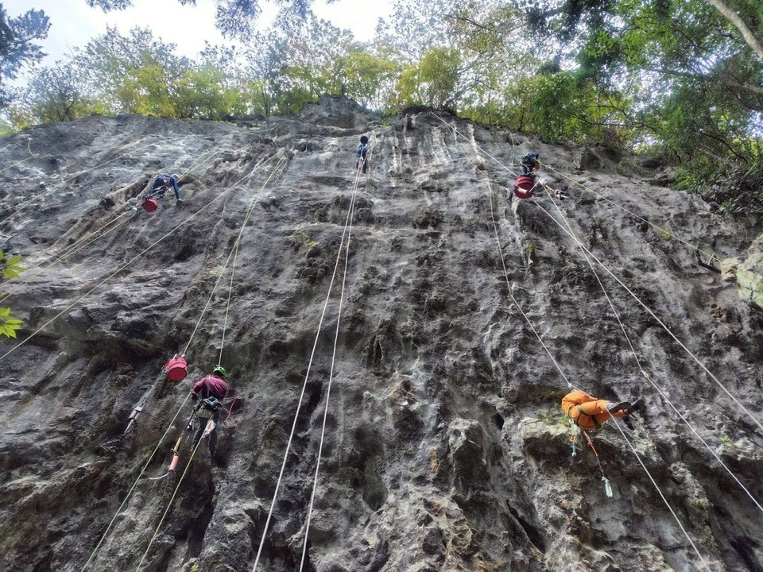
JFA入会はこちら https://freeclimb.jp/join-us/
白滝エリアの公開は、地域・地主・クライマー・JFAの皆さまの協力のもとに実現した、まさに「共創の成果」です。
自然への敬意と安全意識を持ち、長く愛される岩場に育てていきたいと願っています。
どうぞ、安全第一でクライミングをお楽しみください。

クライミングエリアはそこを利用するクライマーみんなで守って行ければと考えておりますので、引き続きご理解ご協力頂けるようお願い致します。
※備中・帝釈に関する情報がございましたらご連絡ください。情報共有させていただきます。
お問合せ：https://takahashigawa-climb.net/otoiawase/
－高梁川流域クライミング交流会(TCNet)－
October 27, 2025 カテゴリー: その他お知らせ, 備中の岩場, 岩場の情報
以前当HPでご報告した「門前払い13b・棲龍門13bc・テルセーラ14a・空14b、空知14cで共有するホールド」で再び欠損があったようです。
(前回のホールド欠損情報：https://takahashigawa-climb.net/sonota/1053083/)
2025/11/2追記 写真を提供いただきました。
状況確認しに登った方によると「アンダーホールドはすべてなくなっていた」との事です。
連絡のあった内容を整理すると、
・この欠損により、アンダーは使用できないとの事
・別の使えそうなホールドで突破は可能との事
・グレードに変更がある程ではないように思われるが確実に悪くなったとの事
・門前の方向へは距離的難易度はそこまで大差ないとの事
・テルセーラ方向へは距離が少し遠くなるのとホールドが小さいものを使う必要があるため、左のアンダーが取りにくくなったように感じるので少し悪く感じるとの事
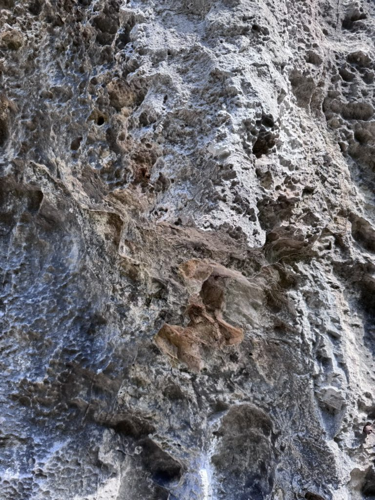
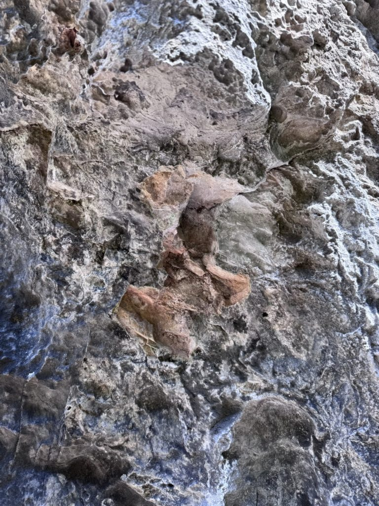
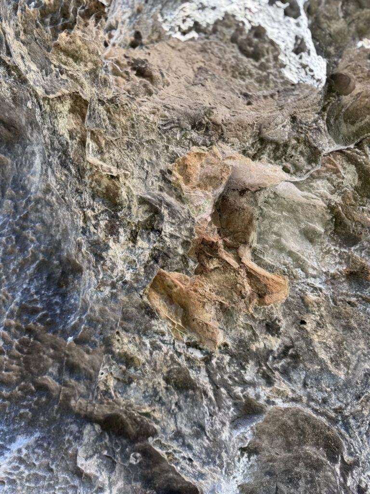
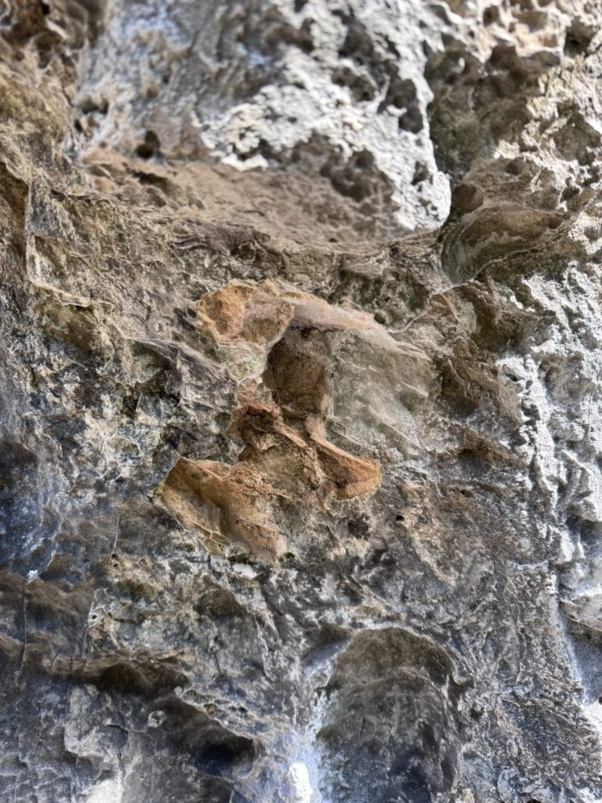
※報告していただいた方はトライしていた方ではなく、欠損後に登攀したついでに確認いただいたようです。
※上記理由より写真はありません。状況写真をお持ちの方はご提供ください。
※欠損時の状況を詳しくご存じの方はご報告いただければと思います。
クライミングエリアはそこを利用するクライマーみんなで守って行ければと考えておりますので、引き続きご理解ご協力頂けるようお願い致します。
※備中・帝釈に関する情報がございましたらご連絡ください。情報共有させていただきます。
お問合せ：https://takahashigawa-climb.net/otoiawase/
－高梁川流域クライミング交流会(TCNet)－
September 4, 2025 カテゴリー: 活動案内・報告
8月31日に「ながの村(下帝釈峡)清掃、地域住民との交流会」が開催されました。
地元広島をはじめ、中国地方各県、近畿・関西、四国から 44名のクライマーの皆さまにご参加いただきました。
当日は厳しい暑さの中、村の方々と一緒に 花面公園やグラウンド、ふれあいセンター、各山荘の片付け・清掃活動 を行いました。
活動終了後は、ながの村食堂のスタッフのお母さん方がご用意くださったカレーライスと地元野菜 を囲み、参加者同士や地域の皆さまと楽しい交流のひとときを過ごしました。
ご参加いただいた皆さま、そしてご協力くださった村の皆さま、誠にありがとうございました。
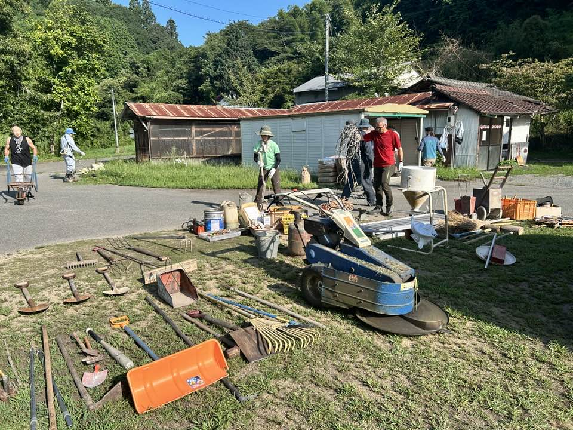
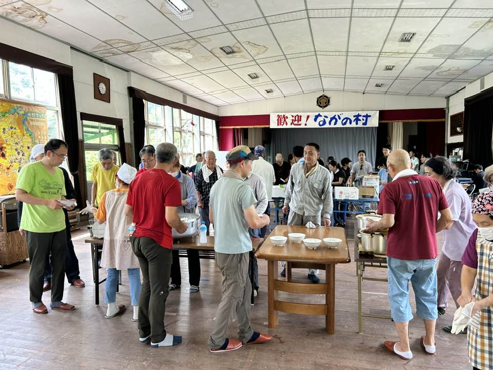
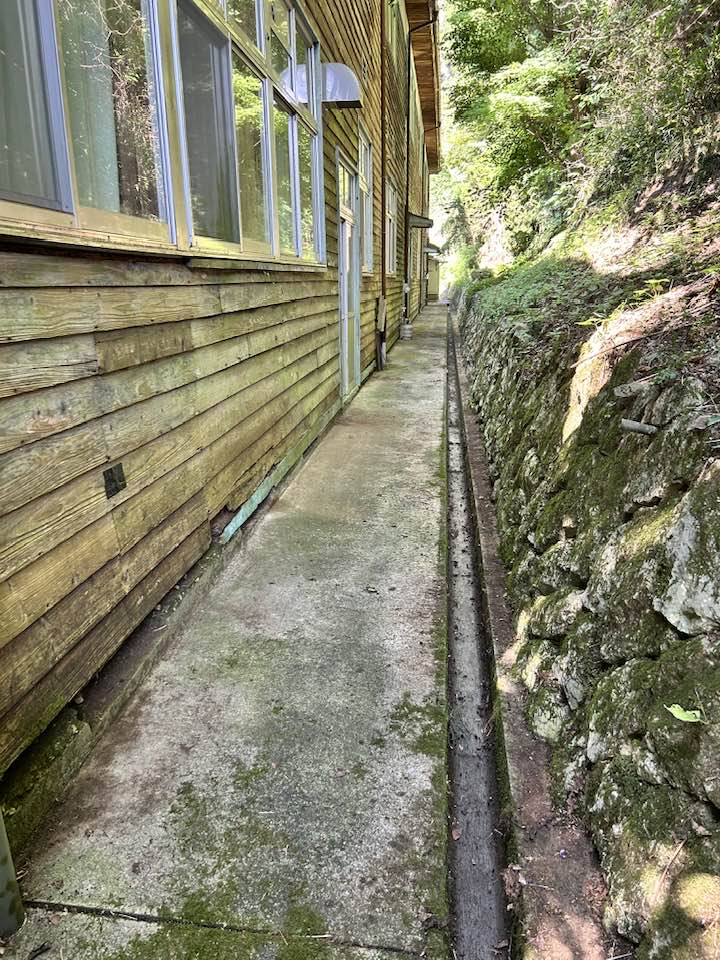
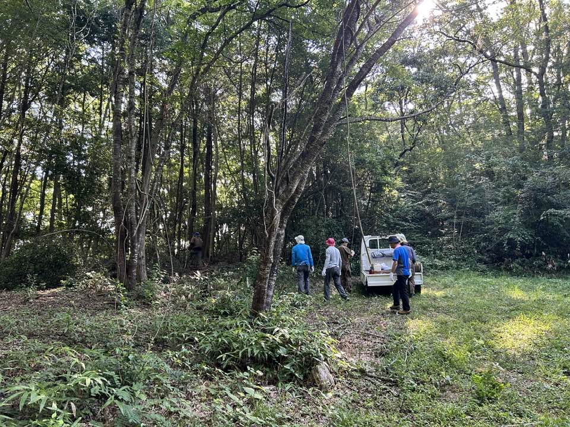
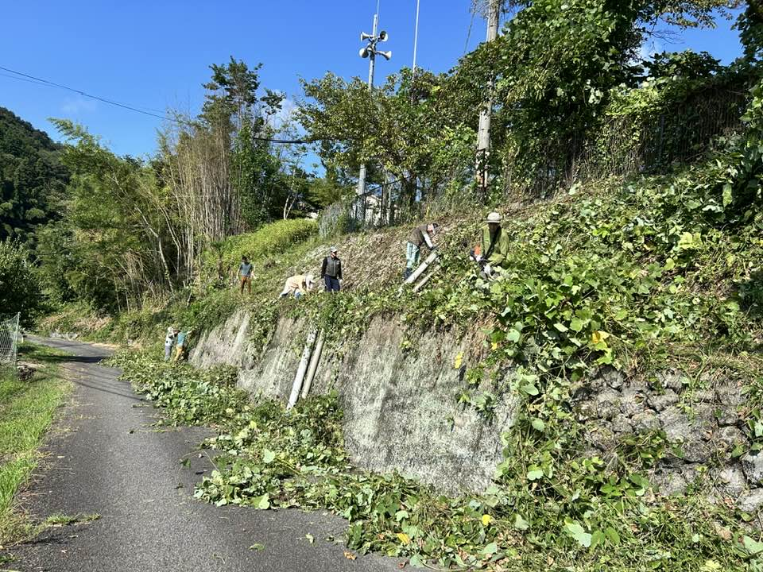
TCNetでは、今後も利用するクライマーみんなでエリアを守っていきたいと考えております。参加いただきました皆様、改めてありがとうございました。
TCNet事務局
※備中・帝釈に関する情報がございましたらご連絡ください。情報共有させていただきます。
お問合せ：https://takahashigawa-climb.net/otoiawase/
－高梁川流域クライミング交流会(TCNet)－
August 11, 2025 カテゴリー: 備中の岩場, 地域のイベント情報
- 日時：令和7年9月7日（日） — 2025年9月7日（日）
受付 8:00〜8:30（夫婦岩駐車場）／9:00〜16:00（終了）
- 会場：木の村ロック（岡山県高梁市成羽町布寄）
※雨天時：POPロック（高梁市備中町長屋98）。見学と撮影会は中止になります。
- 対象：初めての方から経験者まで（園児〜大人）。クライミング施設経験者、自然岩に興味のある方歓迎。
- 内容：トップロープクライミング（インストラクターによる指導、撮影会あり）
- 参加費：1人 1,000円（昼食：そうめん付き）
- 定員：男女合わせて約20名程度
- 主催：備中高梁クライミング協会
- 共催：高梁クライミング少年団
- 後援：高梁市教育委員会
持ち物：運動しやすい服装、専用シューズ（お持ちの方）、飲み物。雨天時の集合は杉田商店へ。昼休憩 11:00〜13:00。
下記いずれかにお申し込みください（電話応募可）
- 高梁市スポーツ振興課（ 086-226-7467／担当：川藤 圭一）
- 杉田商店（ 0866-45-3106）
集合：夫婦岩駐車場（受付 8:00〜8:30）
雨天集合：杉田商店
地図
- 運動のできる服装でご参加ください。
- 専用シューズをお持ちの方はご持参ください。
- 飲み物は各自ご用意ください。
- 撮影会は天候や安全上の理由で変更・中止になる場合があります。
主催：備中高梁クライミング協会 ／ お問い合わせ：高梁市スポーツ振興課 086-226-7467
August 11, 2025 カテゴリー: 活動案内・報告
今年も7月第４日曜日での開催となりました。
猛暑の中、皆様たいへんありがとうございました。

TCNetでは、今後も利用するクライマーみんなでエリアを守っていきたいと考えております。参加いただきました皆様、改めてありがとうございました。
TCNet事務局
クライミングエリアはそこを利用するクライマーみんなで守って行ければと考えておりますので、引き続きご理解ご協力頂けますようお願い致します。
※備中・帝釈に関する情報がございましたらご連絡ください。情報共有させていただきます。
お問合せ：https://takahashigawa-climb.net/otoiawase/
－高梁川流域クライミング交流会(TCNet)－
July 12, 2025 カテゴリー: 地域のイベント情報, 活動案内・報告
今年で17回目を迎える下帝釈峡・永野地区の一斉清掃活動の開催が決定いたしました。帝釈峡の常連クライマーはもちろん、まだ帝釈峡を訪れたことがないという方も、是非この機会に帝釈峡にお越し下さい。
https://www.facebook.com/share/p/1Ac4BNs4Tu/
今回も永野地区の皆さまから、参加者へお弁当をご用意いただけることとなりました。そのため、参加希望の方はお手数ですが、自治振興会長の宮野様宛にご連絡をお願い致します。（上記FBをご確認ください）
また、清掃活動の参加にお申し込みが必須というわけではございませんので、お気軽にご参加いただければ幸いです。（お弁当のご用意がないというだけです）ぜひ皆さまお誘い合わせの上、ご参加をお願いいたします。
【主 催】 永野地区自治振興会
【共 催】 高梁川流域クライミング交流会（TC‐net）
【日 時】 令和7年8月31日（日）AM8：00～11：30まで（早めの昼食後解散）
【集合場所】ながの村ふれあいセンター
【内 容】
・ながの村の皆さんとクライマーによる、空缶拾い、分別作業、
花面公園及び道路脇の草刈り、ふれあいセンター、各小屋の片付け、清掃
・永野地区の皆さんとクライマーとの清掃活動を通しての交流
【日 程】
・8時～ 各地区から空き缶拾いを実施し花面公園へ
・9時～ 分別作業、花面公園、ながの村ふれあいセンター、各小屋、
各岩場アプローチの草刈り、清掃、整備作業
・11時～ 交流会、昼食会
【参加申し込み】
ご参加頂ける方は、お弁当準備の関係でなるべく早めに、申し込みをよろしくお願いいたします。自治振興会長の宮野様
・刈り払い機、鎌、軍手、ゴミばさみ等、活動に必要なものは、各自で準備して頂ければ助かります。
・当日は、ながの村自治振興会からお弁当と飲み物が出ます。（参加申込必要）
・小雨決行です。大雨の場合は各小屋の片付け・清掃とふれあいセンターで空缶の分別交流、昼食会をします。その場合、集合は9時とします。
・最終判断は当日朝に行いますので、ながの村まで来るかどうかは各自で判断して下さい。よろしくお願い致します。
June 29, 2025 カテゴリー: 活動案内・報告
今年も備中高梁クライミング協会・高梁クライミング少年団との共催により、備中の岩場清掃草刈活動の実施を予定しております。
午後から講習会も予定しております。興味のある方はぜひご参加ください。
- 【内 容】 各エリアの清掃と草刈
- 【日 程】 令和7年7月27日（日）9：00～11：00
- 【エリア】 用瀬周辺、羽山周辺、長屋坂、レイクビュー、杉田ロック、川エリア、権現谷、リバーパーク
- 【参加費】 500円（参加費は、TCNet の各種活動資金とさせていただきます。）
- 【集合場所】 用瀬嶽クライミング広場（用瀬小屋）
- 【主 催】 高梁川流域クライミング交流会（TCNet）
- 【共 催】 備中高梁クライミング協会・高梁クライミング少年団
- 9:00 開会式（受け付け 8:30～）
- 9:15～11:00 各エリアの清掃草刈
★草刈機を所有されている方は、極力持参をお願いします。
★軍手、火鉢、鎌、刈り払い機等、清掃・草刈に必要な用具は各自でご持参下さい。
★用瀬小屋掃除用の雑巾に使えるものがあればお持ちください。
★フィックス用ロープの寄付もお待ちしております。
★感染症対策（マスクの着用 etc）は個人の判断でよろしくお願いいたします。
★雨天決行ですが、豪雨など実施に差し支える場合は改めてご案内いたします。但しご案内が直前となると思われますので参加予定の皆様は案内の確認をお願いいたします。
★皆様お誘い合わせの上ご参加ください。たくさんのクライマーの参加をお待ちしています!!
参加費については、Paypayでの受付も行っております。また、寄付についても随時受け付けております。こちらについてもPaypayで受け付け可能です。
送金の際にお名前をメッセージにご記載ください。匿名希望の方も、その旨お申し出いただければと思います。（ID:tc_net）
- 【会場】 用瀬嶽クライミング広場（用瀬小屋）
- 【雨天】POPロック（住所）高梁市備中町長屋98 （見学と撮影会は中止）
- 【日 程】 令和7年7月27日（日）13：00～17：00
- 【目的】 岩登り技術の向上と普及
- 【主 催】 備中高梁クライミング協会
- 【共 催】 高梁クライミング少年団
- 【後 援】 高梁市教育委員会
- 【内 容】 トップロープクライミング＆ボルダリング体験
上級者のクライミング見学と撮影(雨天中止)
- 【参加対象】初めての方から（園児から大人まで）
クライミング施設での経験者及び自然の岩登りに興味のある方
- 【定 員】 男女20名程度
- 【申込場所】高梁市スポーツ振興課
086-226-7467 担当 川藤 圭一
高梁川流域クライミング交流会
杉田商店 0866-45-3106
- 【受 付】 用瀬嶽クライミング広場 （11：00～11：30）
（雨天の場合は～杉田商店）
- 【その他】運動のできる服装
専用シューズをお持ちの方は持参してください。
食事、飲み物当はご持参ください
クライミングエリアはそこを利用するクライマーみんなで守って行ければと考えておりますので、引き続きご理解ご協力頂けるようお願い致します。
※備中・帝釈に関する情報がございましたらご連絡ください。情報共有させていただきます。
お問合せ：https://takahashigawa-climb.net/otoiawase/
－高梁川流域クライミング交流会(TCNet)－
May 1, 2025 カテゴリー: 備中の岩場, 岩場の情報
今年も田植えの時期となりました。例年通りイノシシ対策の電柵が設置されます。
皆様よろしくお願いいたします。
2025年5月
－地元からの依頼－
ニューエリア駐車場付近の猪被害の予防のため、今年も電柵を設置されたようです。電柵位置を詳しく把握している地元の方でないと解除ができない為、クライマー諸氏は電柵設置までに駐車場より移動してもらいたいとの事です。
これから10月までは
１．用瀬から歩く
２．17時までに駐車場を出る
の徹底をお願いします。
10月までは、17時頃までに駐車場から出る必要があります。
トライや回収の順番が思うとおりに来なかったり、天気その他で遅れてしまう可能性がありますので、積極的に用瀬からのアクセスをご検討ください。
また新たな情報が入り次第お知らせします。
クライミングエリアはそこを利用するクライマーみんなで守って行ければと考えておりますので、引き続きご理解ご協力頂けるようお願い致します。
※備中・帝釈に関する情報がございましたらご連絡ください。情報共有させていただきます。
お問合せ：https://takahashigawa-climb.net/otoiawase/
－高梁川流域クライミング交流会(TCNet)－
February 22, 2025 カテゴリー: 備中の岩場, 岩場の情報
備中のクライマー、坂谷佳昭氏が新たなルート「遊龍」の初登に成功しました。このルートは、既存の「白龍」の6ピン目から左に向かう形で、トポにもプロジェクトとして記載されていたものです。（初登日 2025年1月19日 気温４℃）
「遊龍」のグレードは【5.14b】、スケールは「白龍」と同様の【30m】。坂谷さんによれば、核心部はコンプレッションとヒールの連続で、核心がすぎるまで休めないとのこと。クライマーとしての技術と体力が試される難易度を誇ります。
坂谷さんは、このルートを「遊龍・白龍、どちらも備中を代表するルート内容」と語り、特にコンディションの重要性を強調しました。「遊龍」は、めったに完全に乾くことがなく、登るためには理想的な天候が必要です。昨シーズンは10月下旬から2月初旬、今シーズンは11月下旬から2月初旬の期間にしか登ることができなかったとのことです。
備中のフリークライミングシーンに新たな高難度課題が誕生しました。
状態は難しいですが、近くには羽山エリアもありますので、ぜひトライしに来てみてください。
 遊龍を登る坂谷氏
遊龍を登る坂谷氏
※備中・帝釈に関する情報がございましたらご連絡ください。情報共有させていただきます。
お問合せ：https://takahashigawa-climb.net/otoiawase/
※メールマガジンにご登録いただきますと、投稿を更新した際に通知いたしますので是非ご活用ください。
メルマガ登録：https://my.formman.com/form/pc/CyPwBuzTVeek4G3Q/
－高梁川流域クライミング交流会(TCNet)－
December 22, 2024 カテゴリー: その他お知らせ
テルセーラトライ中にホールド欠損があったようです。
-報告者より-
欠損場所は門前払い13bのヒールからの上り口のアンダーホールドです。
薬指、小指のかかりがなくなり、すこしあまめのホールドになった感じです。
グレード感が変わるほどではないとおもいますが、確実に悪くなったと思われます。
残っている部分も脆くなっているかも知れません。
この残った部分が無くなるとかなり厳しくなるように思います。
-以上-
このホールドは、門前払い13b・棲龍門13bc・テルセーラ14a・空14b、空知14cで共有するホールドです。
比較的重要なホールドで無くなると厳しくなるものと思われます。
欠損したホールド自体は落下して紛失している様子です。
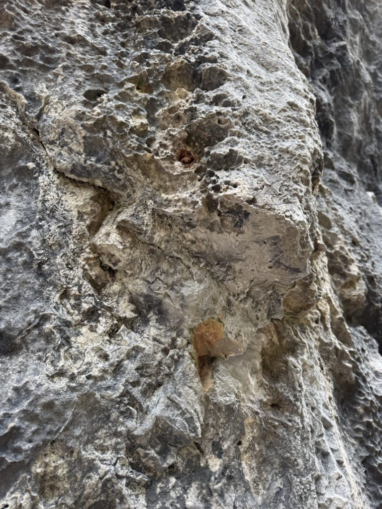
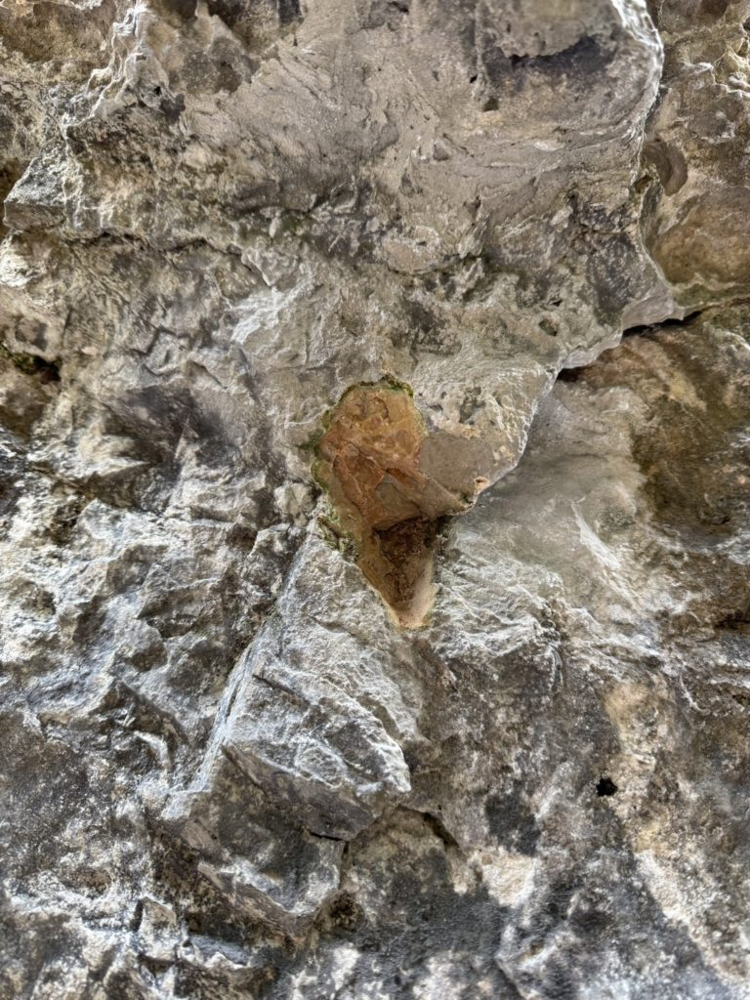
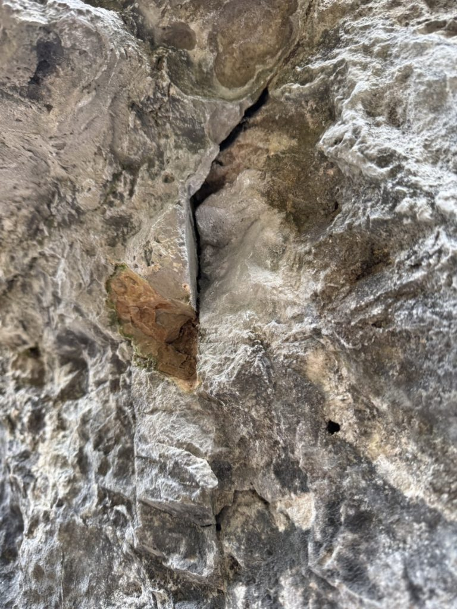
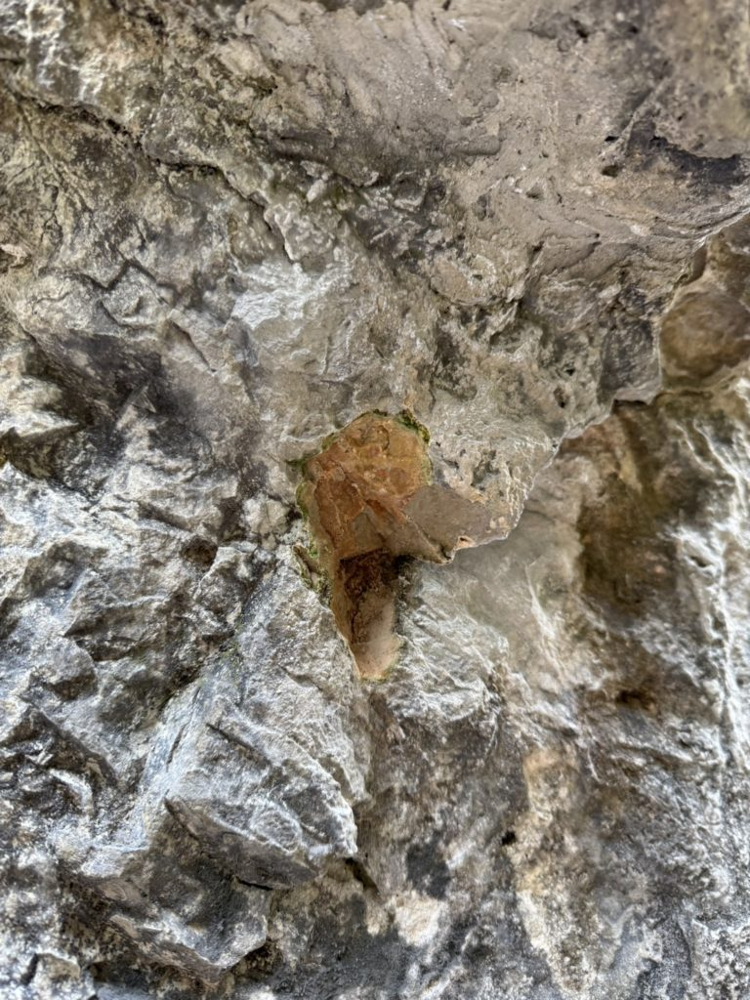
クライミングエリアはそこを利用するクライマーみんなで守って行ければと考えておりますので、引き続きご理解ご協力頂けるようお願い致します。
※備中・帝釈に関する情報がございましたらご連絡ください。情報共有させていただきます。
お問合せ：https://takahashigawa-climb.net/otoiawase/
－高梁川流域クライミング交流会(TCNet)－
December 21, 2024 カテゴリー: お知らせ
年の瀬の恒例、今年も備中の岩場の地主様等に年末のご挨拶としてお歳暮をお送りいたしました。
「高梁川流域クライミング交流会」と「クライマー一同」の連名にてTCNetのメンバーと居合わせたクライマーで持参させて頂いております。
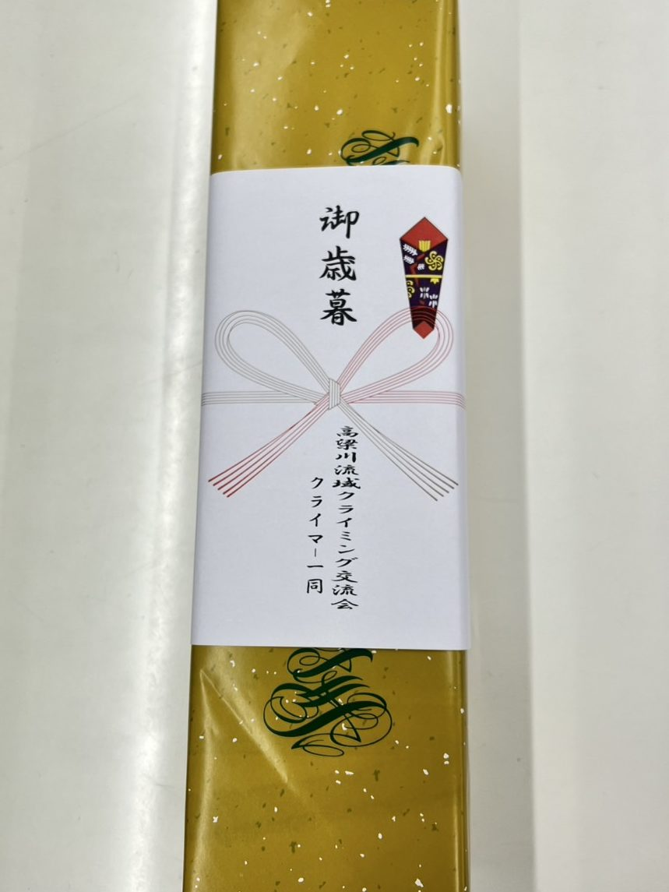
これらの費用は、皆様からのご寄付や備中清掃の際の参加費より出させて頂いております。TCNetの活動への常日頃のご理解とご協力ありがとうございます。
来年もぜひよろしくお願い申し上げます。
クライミングエリアはそこを利用するクライマーみんなで守って行ければと考えておりますので、引き続きご理解ご協力頂けるようお願い致します。
※備中・帝釈に関する情報がございましたらご連絡ください。情報共有させていただきます。
お問合せ：https://takahashigawa-climb.net/otoiawase/
－高梁川流域クライミング交流会(TCNet)－
September 19, 2024 カテゴリー: 備中の岩場
クライマーの方から情報です。
現在、工事と倒木により、下から（長谷）の道が通行止めとなっているようです。
芋原方面からのアクセスは可能なようです。
また何か新たな情報が入りましたらお知らせします。
もし新たな情報をご存知の方がいらっしゃいましたら是非お知らせ下さい。
※備中・帝釈に関する情報がございましたらご連絡ください。情報共有させていただきます。
お問合せ：https://takahashigawa-climb.net/otoiawase/
※メールマガジンにご登録いただきますと、投稿を更新した際に通知いたしますので是非ご活用ください。
メルマガ登録：https://my.formman.com/form/pc/CyPwBuzTVeek4G3Q/
－高梁川流域クライミング交流会(TCNet)－
September 11, 2024 カテゴリー: お知らせ, 備中の岩場
【追記】リボルト報告
9/18に予定通りリボルトを行っていただきました。
終了点について、根本より緩んでいたとの情報でしたが、確認したところナットが緩みシャットアンカーが回る状態だったとのことです。
終了点と6箇所のプロテクションはリボルト完了しております。
なお、同時リボルトを予定していた「ブライトイエロー」は行っておりません。
暑い中、作業をしていただきありがとうございました。
9/7(土)に備中リバーパークに行った方より連絡をいただきました。
情報提供ありがとうございました。
エリア内左側にあるスラブのスパスパ10aで終了点の右側のボルトが根本より緩んでいて動いているとの事でした。至急リボルトを行うよう手配いたしましたので、それまで以下の内容を周知するようご協力をお願いいたします。
・修正まで当該ルートの登攀は行わないでください。
・リボルトは9月18日を予定しております。
・溶剤が硬化する9月19日までは、登攀を行わないでください。
※合わせて、11aのブライトイエローもリボルトを行います。ご注意ください。
・今回はJFAからの資材提供を受けます。
［JFA］今回を含め、国内の多くの岩場がJFAの資材・人材提供によってリボルトされ、より安全な支点への交換と維持がされています。
まだJFAに加入されていない方は是非加入をお願い致します。
リボルト費用などは皆様の会費によって賄われています。
-JFA入会案内-
https://freeclimb.jp/jfa/join.htm
クライミングエリアはそこを利用するクライマーみんなで守って行ければと考えておりますので、引き続きご理解ご協力頂けるようお願い致します。
※備中・帝釈に関する情報がございましたらご連絡ください。情報共有させていただきます。
お問合せ：https://takahashigawa-climb.net/otoiawase/
※メールマガジンにご登録いただきますと、投稿を更新した際に通知いたしますので是非ご活用ください。
メルマガ登録：https://my.formman.com/form/pc/CyPwBuzTVeek4G3Q/
－高梁川流域クライミング交流会(TCNet)－
September 11, 2024 カテゴリー: お知らせ, 岩場の情報, 帝釈の岩場, 活動案内・報告
9月7日(土)、8日(日)の2日間で、帝釈峡前面壁のリボルト作業を行いました。
天候にも恵まれ、予定通り全てのルートを整備する事が出来ました。
参加された職人の皆さん、お手伝い頂いた皆さん、荷物の運搬に協力頂いた皆さん、そして、昨年からのカンパの呼びかけに御協力頂いた皆さんに感謝申し上げます。
前面壁は、コンディションが難しいですが、好ルートが何本も有ります。新しいボルトでどんどん登って下さい。
なお、壁の左半分は、取り付きが下がっており、1本目の支店が高くなっておりますが、リボルトメンバーで検討の結果、下に1本打ち足すには中途半端で、プリクリップを前提に登ってもらうことになりました。よろしくお願いいたします。
画像などの手配が追いついていませんが、取り急ぎ簡単ではございますが、リボルト完了の報告をさせていただきます。
※備中・帝釈に関する情報がございましたらご連絡ください。情報共有させていただきます。
お問合せ：https://takahashigawa-climb.net/otoiawase/
※メールマガジンにご登録いただきますと、投稿を更新した際に通知いたしますので是非ご活用ください。
メルマガ登録：https://my.formman.com/form/pc/CyPwBuzTVeek4G3Q/
－高梁川流域クライミング交流会(TCNet)－
September 11, 2024 カテゴリー: 活動案内・報告
9月1日に帝釈清掃「ながの村清掃活動」開催することができました。
今回は小野村長退任後の初めての開催で、天気も不安だったため参加人数を心配しておりましたが、約40人のクライマーに参加していただきました。
清掃後は、ながの村の皆様から手作りカレーを振る舞っていただきました。

歓談後、交流会が開催され、地元でもシャワークライミングをやってみたいなどの意見を伺う事ができました。
TCNetでは、今後も利用するクライマーみんなでエリアを守っていきたいと考えております。参加いただきました皆様、改めてありがとうございました。
TCNet事務局
※備中・帝釈に関する情報がございましたらご連絡ください。情報共有させていただきます。
お問合せ：https://takahashigawa-climb.net/otoiawase/
※メールマガジンにご登録いただきますと、投稿を更新した際に通知いたしますので是非ご活用ください。
メルマガ登録：https://my.formman.com/form/pc/CyPwBuzTVeek4G3Q/
－高梁川流域クライミング交流会(TCNet)－
August 24, 2024 カテゴリー: お知らせ, 帝釈の岩場
先日帝釈峡リボルトについて、リボルト職人の皆様へのご案内を掲載させていただきましたが、まだ、リボルト要員が若干名とボランティア人員が不足している状況です。
特に荷運び等をお願いしたいボランティア人員が不足しております。
いつもボルトルートを登られる方でも、リボルトの現場は見たことがないという方も多くいらっしゃると思います。実際の現場をみて分かることや気づかれることもあると思いますので、興味のある方はぜひお誘い合わせの上、ご協力をお願いいたします。
9月7日、8日を予定しておりますが、どちらか1日だけでもたいへん助かります。
ご協力いただける方は小野さん(takeshialpine@gmail.com）にご連絡をお願い致します。
また、9月1日の帝釈清掃で、清掃後に資材を運んでいただける方もよろしくお願いいたします。
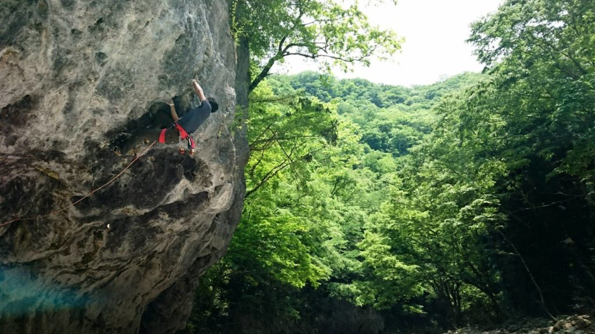
クライミングエリアはそこを利用するクライマーみんなで守って行ければと考えておりますので、引き続きご理解ご協力頂けるようお願い致します。
※備中・帝釈に関する情報がございましたらご連絡ください。情報共有させていただきます。
お問合せ：https://takahashigawa-climb.net/otoiawase/
※メールマガジンにご登録いただきますと、投稿を更新した際に通知いたしますので是非ご活用ください。
メルマガ登録：https://my.formman.com/form/pc/CyPwBuzTVeek4G3Q/
－高梁川流域クライミング交流会(TCNet)－
August 23, 2024 カテゴリー: お知らせ, 帝釈の岩場
リボルト職人の皆様
すでにメールにてお送りしておりますが、9月7日8日の予定で帝釈前面壁のリボルトを予定しています。
ご参加可能な方でご協力いただける方は小野さん(takeshialpine@gmail.com）にご連絡いただければと思います。どちらか一日でも構いませんし、荷運びだけでも構いません。
皆様のお知り合いでご協力いただける方がいらっしゃる場合、是非お声がけいただければ助かります。
大変申し訳ございませんが今回、日当・交通費・宿泊費などは支給されないという認識でご協力をお願いします。
既にご参加の意思表示をいただいている方など、この案内が重複してしまった場合はご容赦ください。
また、9月1日は、帝釈清掃です。6日にfix張りを予定しておりますので、清掃後に資材をある程度運びたいと考えております。清掃参加で可能な方は、ぜひご協力をお願いいたします。

クライミングエリアはそこを利用するクライマーみんなで守って行ければと考えておりますので、引き続きご理解ご協力頂けるようお願い致します。
※備中・帝釈に関する情報がございましたらご連絡ください。情報共有させていただきます。
お問合せ：https://takahashigawa-climb.net/otoiawase/
※メールマガジンにご登録いただきますと、投稿を更新した際に通知いたしますので是非ご活用ください。
メルマガ登録：https://my.formman.com/form/pc/CyPwBuzTVeek4G3Q/
－高梁川流域クライミング交流会(TCNet)－
July 28, 2024 カテゴリー: 帝釈の岩場, 活動案内・報告
先日よりお願いしておりました帝釈峡前面壁リボルトの件ですが、皆様のご協力により、多くのカンパをいただきました。改めて感謝申し上げます。
一旦区切らせていただき、リボルトを行いたいと考えております。
9月7日(土曜日)～9月8日（日曜日）
帝釈前面壁
※ダム放流の都合・雨天により順延する場合もあります。
※クライミングを予定されている方は今後の案内にもご注意下さい
クライミングエリアはそこを利用するクライマーみんなで守って行ければと考えておりますので、引き続きご理解ご協力頂けるようお願い致します。
※備中・帝釈に関する情報がございましたらご連絡ください。情報共有させていただきます。
お問合せ：https://takahashigawa-climb.net/otoiawase/
※メールマガジンにご登録いただきますと、投稿を更新した際に通知いたしますので是非ご活用ください。
メルマガ登録：https://my.formman.com/form/pc/CyPwBuzTVeek4G3Q/
－高梁川流域クライミング交流会(TCNet)－
July 28, 2024 カテゴリー: 活動案内・報告
今年は例年の悪天候による延期を避け、2週遅れの第４日曜日での開催となりました。
猛暑の中、約50名のクライマー諸氏にご参加いただきました。
温度・湿度ともに非常に高い中、皆様たいへんありがとうございました。

また、今年大注目のエリア”白滝”！
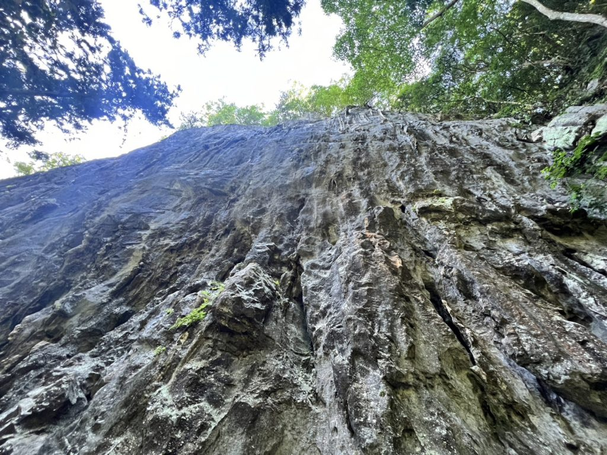
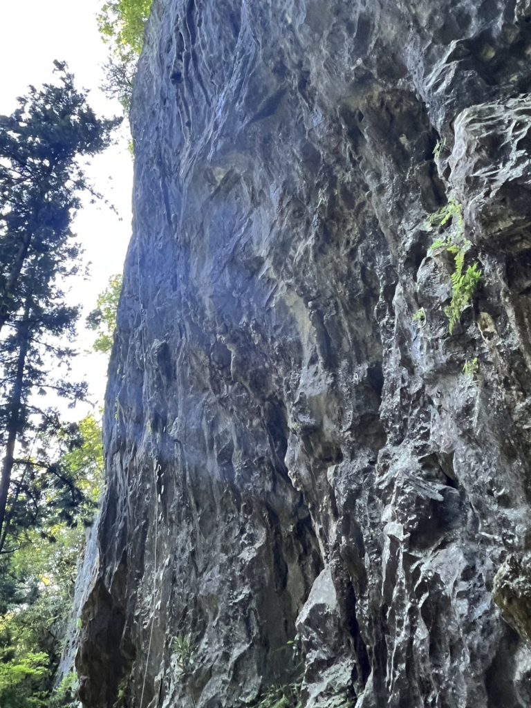
ご覧の通り、素晴らしい岩場ですが、嬉しいことに近隣の地主様に駐車場として場所を無償でお借りすることができるようになりました。整地はこれからですが、JFAにもご協力いただけるとのことで、近日中に詳細をご案内したいと考えております。
(一部誤りがございましたので、訂正いたします。申し訳ございません）
感謝の気持ちを込めて、エリア近隣の草刈りも今年から加わりました。
集合場所の用瀬小屋からは少し距離がありますので、今回は福山山岳会の皆様にご協力いただきました。（顔出しNGとのことで、有志の背中のみとさせていただきました）
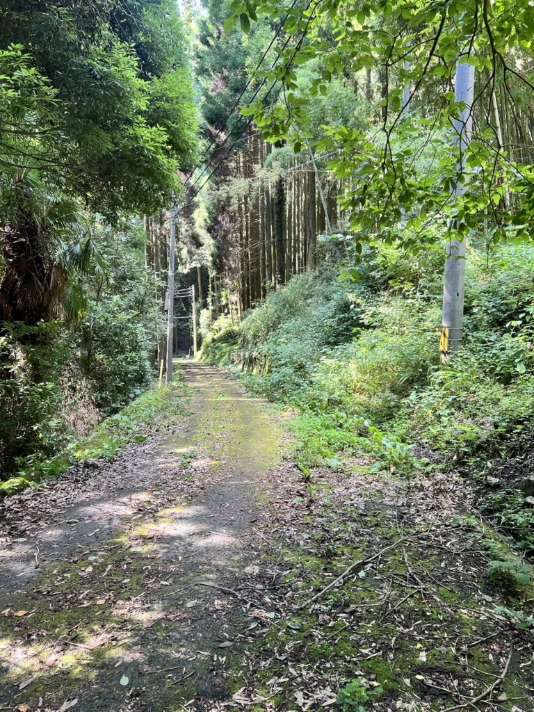
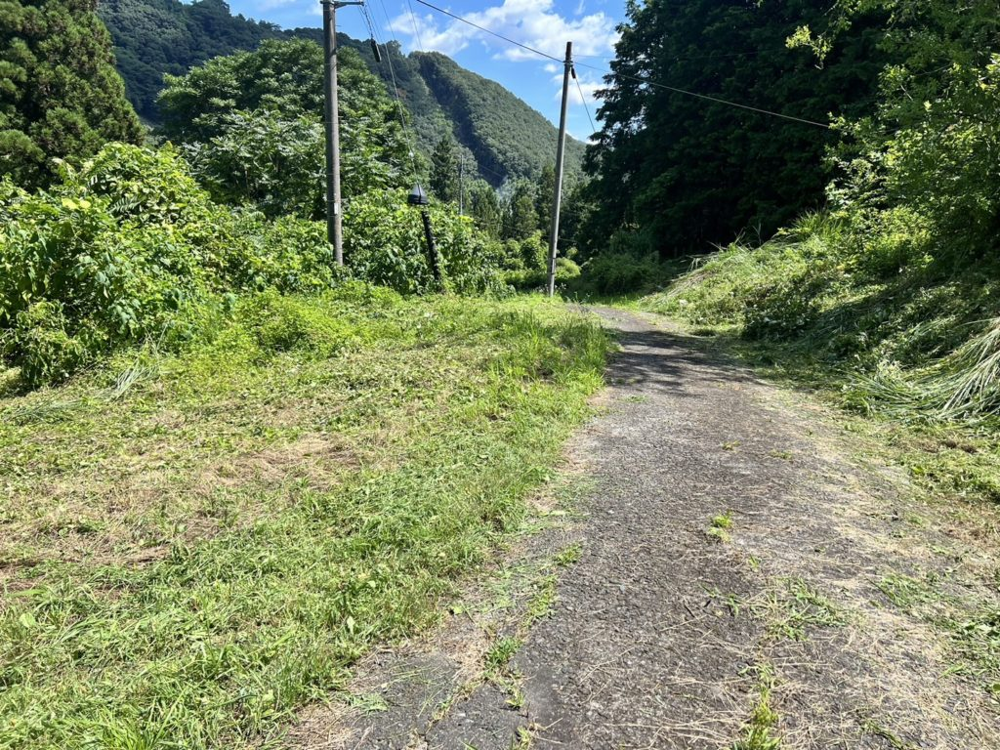
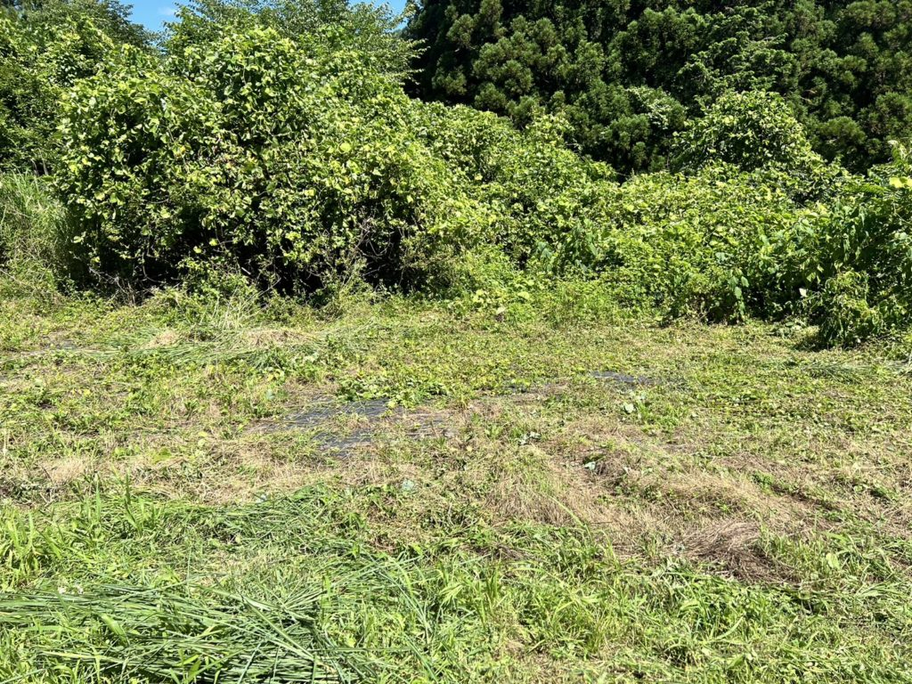
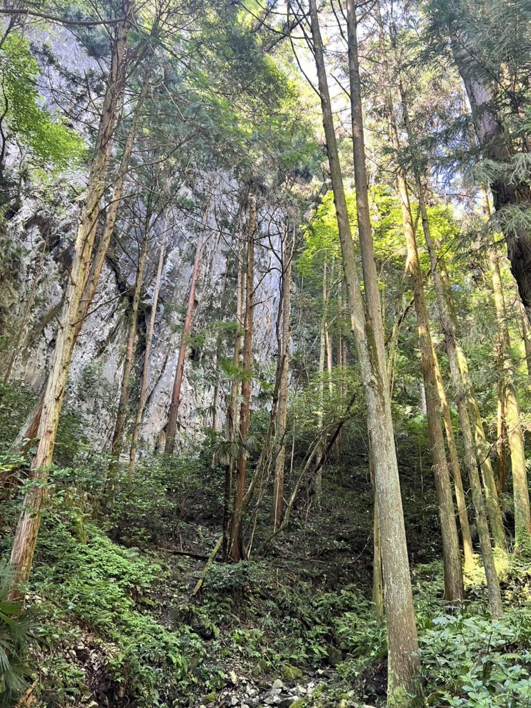
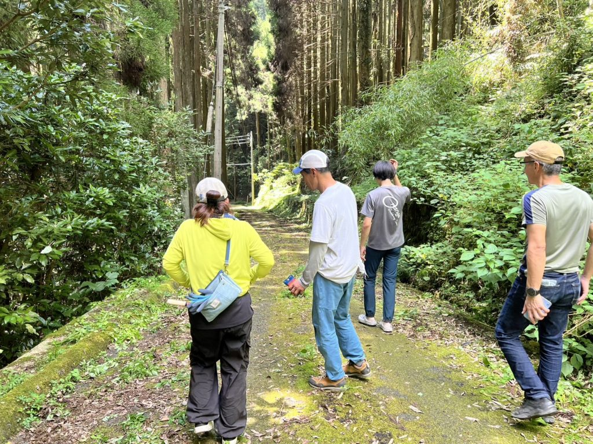
福山山岳会の皆様、たいへんありがとうございました。
あと、忘れ物のご案内です。用瀬小屋の下に避難いたしましたので、回収をお願いいたします。


また、レジェンド”ジョーさん”が黒いカバンをどこかに忘れたらしいです。
ご存じの方はご一報ください。（tcnet.climb@gmail.com）
TCNetでは、今後も利用するクライマーみんなでエリアを守っていきたいと考えております。参加いただきました皆様、改めてありがとうございました。
TCNet事務局
クライミングエリアはそこを利用するクライマーみんなで守って行ければと考えておりますので、引き続きご理解ご協力頂けますようお願い致します。
※備中・帝釈に関する情報がございましたらご連絡ください。情報共有させていただきます。
お問合せ：https://takahashigawa-climb.net/otoiawase/
※メールマガジンにご登録いただきますと、投稿を更新した際に通知いたしますので是非ご活用ください。
メルマガ登録：https://my.formman.com/form/pc/CyPwBuzTVeek4G3Q/
－高梁川流域クライミング交流会(TCNet)－
July 27, 2024 カテゴリー: 地域のイベント情報, 活動案内・報告
16回目を迎える下帝釈峡・永野地区の一斉清掃活動の開催が決定いたしました。帝釈峡の常連クライマーはもちろん、まだ帝釈峡を訪れたことがないという方も、是非この機会に帝釈峡にお越し下さい。
https://www.facebook.com/takeshi.ono.1048/posts/pfbid02Wgs81RURt3WXTZkaQJF41FytzLat3QkAch2XUEX9UkPaNV2e5UnyX7HLKkGaMzVNl
今回も永野地区の皆さまから、参加者へお弁当をご用意いただけることとなりました。そのため、参加希望の方はお手数ですが、自治振興会長の宮野様宛に8/30までにご連絡をお願い致します。
また、清掃活動の参加にお申し込みが必須というわけではございませんので、お気軽にご参加いただければ幸いです。（お弁当のご用意がないというだけです）
今回は長年村長を務めていただき、取りまとめを引き受けていただいておりました小野さんが、村長を辞してから初めての清掃活動となります。ぜひ皆さまお誘い合わせの上、ご参加をお願いいたします。
【主 催】 永野地区自治振興会
【共 催】 高梁川流域クライミング交流会（TC‐net）
【日 時】 令和6年9月1日（日）AM8：00～11：30まで（早めの昼食後解散）
【集合場所】ながの村ふれあいセンター
【内 容】
・ながの村の皆さんとクライマーによる、空缶拾い、分別作業、
花面公園及び道路脇の草刈り、ふれあいセンター、各小屋の片付け、清掃
・永野地区の皆さんとクライマーとの清掃活動を通しての交流
【日 程】
・8時～ 各地区から空き缶拾いを実施し花面公園へ
・9時～ 分別作業、花面公園、ながの村ふれあいセンター、各小屋、
各岩場アプローチの草刈り、清掃、整備作業
・11時～ 交流会、昼食会
【参加申し込み】
ご参加頂ける方は、お弁当準備の関係でなるべく早めの8/30（木）までに、申し込みをよろしくお願いいたします。自治振興会長の宮野様
・刈り払い機、鎌、軍手、ゴミばさみ等、活動に必要なものは、各自で準備して頂ければ助かります。
・当日は、ながの村自治振興会からお弁当と飲み物が出ます。（参加申込必要）
・小雨決行です。大雨の場合は各小屋の片付け・清掃とふれあいセンターで空缶の分別交流、昼食会をします。その場合、集合は9時とします。
・最終判断は当日朝に行いますので、ながの村まで来るかどうかは各自で判断して下さい。よろしくお願い致します。
July 7, 2024 カテゴリー: 活動案内・報告
今年も備中高梁クライミング協会・高梁クライミング少年団との共催により、備中の岩場清掃草刈活動の実施を予定しております。
開催が近づいてまいりましたので、再掲します。
これまで7月の第2日曜日でしたが、今年から7月最終日曜日に開催することになりました。天候が安定しやすいと考えております。ぜひご参加ください。
- 【内 容】 各エリアの清掃と草刈
- 【日 程】 令和6年7月28日（日）9：00～11：00
- 【エリア】 用瀬周辺、羽山周辺、長屋坂、レイクビュー、杉田ロック、川エリア、権現谷、リバーパーク
- 【参加費】 500円（参加費は、TCNet の各種活動資金とさせていただきます。）
- 【集合場所】 用瀬嶽クライミング広場（用瀬小屋）
- 【主 催】 高梁川流域クライミング交流会（TCNet）
- 【共 催】 備中高梁クライミング協会・高梁クライミング少年団
- 9:00 開会式（受け付け 8:30～）
- 9:15～11:00 各エリアの清掃草刈
★草刈機を所有されている方は、極力持参をお願いします。
★軍手、火鉢、鎌、刈り払い機等、清掃・草刈に必要な用具は各自でご持参下さい。
★用瀬小屋掃除用の雑巾に使えるものがあればお持ちください。
★フィックス用ロープの寄付もお待ちしております。
★感染症対策（マスクの着用 etc）は個人の判断でよろしくお願いいたします。
★雨天決行ですが、豪雨など実施に差し支える場合は改めてご案内いたします。但しご案内が直前となると思われますので参加予定の皆様は案内の確認をお願いいたします。
★皆様お誘い合わせの上ご参加ください。たくさんのクライマーの参加をお待ちしています!!
参加費については、Paypayでの受付も行っております。また、寄付についても随時受け付けております。こちらについてもPaypayで受け付け可能です。
送金の際にお名前をメッセージにご記載ください。匿名希望の方も、その旨お申し出いただければと思います。（ID:tc_net）
クライミングエリアはそこを利用するクライマーみんなで守って行ければと考えておりますので、引き続きご理解ご協力頂けるようお願い致します。
※備中・帝釈に関する情報がございましたらご連絡ください。情報共有させていただきます。
お問合せ：https://takahashigawa-climb.net/otoiawase/
※メールマガジンにご登録いただきますと、投稿を更新した際に通知いたしますので是非ご活用ください。
メルマガ登録：https://my.formman.com/form/pc/CyPwBuzTVeek4G3Q/
－高梁川流域クライミング交流会(TCNet)－
June 19, 2024 カテゴリー: 備中の岩場, 岩場の情報
今年もイノシシ対策の電柵が設置されたようです。
皆様よろしくお願いいたします。
2024年6月
現在は電柵が撤去されております。
2024年11月
－地元からの依頼－
ニューエリア駐車場付近の猪被害の予防のため、今年も電柵を設置されたようです。電柵位置を詳しく把握している地元の方でないと解除ができない為、クライマー諸氏は電柵設置までに駐車場より移動してもらいたいとの事です。
これから10月までは
１．用瀬から歩く
２．17時までに駐車場を出る
の徹底をお願いします。
10月までは、17時頃までに駐車場から出る必要があります。
トライや回収の順番が思うとおりに来なかったり、天気その他で遅れてしまう可能性がありますので、積極的に用瀬からのアクセスをご検討ください。
また新たな情報が入り次第お知らせします。
クライミングエリアはそこを利用するクライマーみんなで守って行ければと考えておりますので、引き続きご理解ご協力頂けるようお願い致します。
※備中・帝釈に関する情報がございましたらご連絡ください。情報共有させていただきます。
お問合せ：https://takahashigawa-climb.net/otoiawase/
※メールマガジンにご登録いただきますと、投稿を更新した際に通知いたしますので是非ご活用ください。
メルマガ登録：https://my.formman.com/form/pc/CyPwBuzTVeek4G3Q/
－高梁川流域クライミング交流会(TCNet)－
June 8, 2024 カテゴリー: 活動案内・報告
明日6月9日に予定しておりました勝山の岩場清掃ですが、雨天のため中止となりました。予定していただいた方には、たいへん残念ではありますが、ご理解いただきますようお願いいたします。
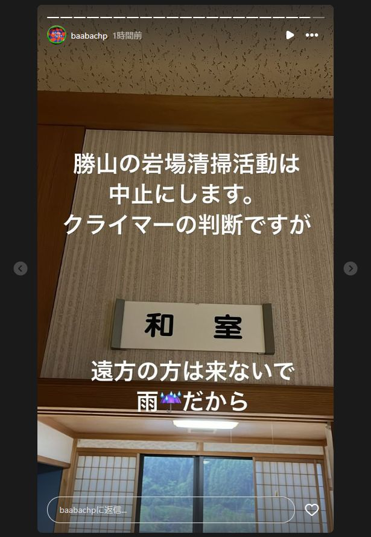
クライミングエリアはそこを利用するクライマーみんなで守って行ければと考えておりますので、引き続きご理解ご協力頂けるようお願い致します。
※備中・帝釈に関する情報がございましたらご連絡ください。情報共有させていただきます。
お問合せ：https://takahashigawa-climb.net/otoiawase/
－高梁川流域クライミング交流会(TCNet)－
May 16, 2024 カテゴリー: 活動案内・報告
今年も勝山の岩場清掃を開催いたします。
勝山の岩場常連クライマーはもちろん、まだ勝山の岩場を訪れたことがないという方も、ぜひこの機会にお越しください。
【日 時】6月９日（日）午前8:00～
【集合場所】 神代地区の集会所
【内 容】 勝山の岩場付近の清掃、クライマーと地域住民の交流
※6月8日土曜日は公民館に宿泊できます。例年通り宴会あります。
神代地区の集会所（勝山公民館 神代分館）所在地
http://www.mapion.co.jp/m2/35.09297551,133.652908,16/poi=23330660227
【参加申し込み】
取りまとめ頂いている baabachp 氏 への連絡をお願いいたします。
※刈り払い機、鎌、軍手、火鉢等、活動に必要な用具は各自でご持参いただけると助かります。
※少雨決行。雨天中止。
May 6, 2024 カテゴリー: お知らせ, 帝釈の岩場
帝釈峡 第三道場の「荒波」について注意喚起がありました。
登りに行く方はご注意ください。
クライミングエリアはそこを利用するクライマーみんなで守って行ければと考えておりますので、引き続きご理解ご協力頂けるようお願い致します。
※備中・帝釈に関する情報がございましたらご連絡ください。情報共有させていただきます。
お問合せ：https://takahashigawa-climb.net/otoiawase/
※メールマガジンにご登録いただきますと、投稿を更新した際に通知いたしますので是非ご活用ください。
メルマガ登録：https://my.formman.com/form/pc/CyPwBuzTVeek4G3Q/
－高梁川流域クライミング交流会(TCNet)－
February 1, 2024 カテゴリー: お知らせ, 帝釈の岩場
【カンパの御礼とリボルト実施の日程について】※2024年6月8日追記
皆様からのカンパ、たいへんありがとうございます。
前面壁、二の壁におけるすべてのルートをリボルトするには、まだ少し足りない状況ですが、カンパを一旦締め切らせていただき、現状のできる範囲でリボルトを実施することとなりました。
日程は現在調整中ですが、帝釈川ダムの放流について情報があり8月末までは水量の関係で実施は難しい状況です。9月で日程調整できればと考えておりますので、決まり次第、別投稿にてご案内させていただきます。
この度は皆様からの、あたたかいカンパをいただき、重ねて御礼申し上げます。
いただいた金額は今期の収支報告にてご報告させていただきます。
また、新たなプロジェクトも進行中です。
その際にもご協力を賜りたく考えておりますので、今後ともよろしくお願い申し上げます。
ーーーーー 追記ここまで ーーーーー
日頃からTCNetの活動に御理解と御協力を頂きありがとうございます。
私達TCNetでは、これまで備中・勝山・帝釈峡の各クライミングエリアの岩場整備を行なって参りました。
おかげさまで、備中・勝山の主なエリアの整備はほぼ完了いたしましたが、帝釈峡の前面壁、二の壁が残っております。
再整備が必要ですが資金的な問題に直面しております。
1993年頃から開拓され30年近くの時間が経過しており、なるべく早くに着手する必要があるのですが、エリアの特性もあり、ご協力いただけるクライマーの皆様にカンパをお願いすることとなりました。
ほんの少しでも構いませんので、是非御協力をお願い致します。
・帝釈峡 リボルト資金カンパのお願い
https://takahashigawa-climb.net/rebolt/
また、前面壁・二の壁の写真を募集しております。
おすすめのルート写真や自慢の一枚をお持ちであればぜひお送りください。
メールアドレス：tcnet.climb@gmail.com
クライミングエリアはそこを利用するクライマーみんなで守って行ければと考えておりますので、引き続きご理解ご協力頂けるようお願い致します。
※備中・帝釈に関する情報がございましたらご連絡ください。情報共有させていただきます。
お問合せ：https://takahashigawa-climb.net/otoiawase/
※メールマガジンにご登録いただきますと、投稿を更新した際に通知いたしますので是非ご活用ください。
メルマガ登録：https://my.formman.com/form/pc/CyPwBuzTVeek4G3Q/
－高梁川流域クライミング交流会(TCNet)－
December 19, 2023 カテゴリー: お知らせ
今年も備中の岩場の地主様等に年末のご挨拶としてお歳暮をお送りいたしました。
「高梁川流域クライミング交流会」と「クライマー一同」の連名にてTCNetのメンバーが持参させて頂いております。
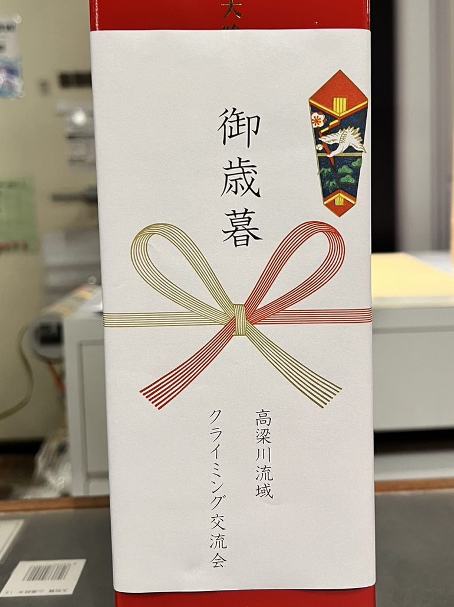
これらの費用は、皆様からのご寄付や備中清掃の際の参加費より出させて頂いております。TCNetの活動への常日頃のご理解とご協力ありがとうございます。
来年もぜひよろしくお願い申し上げます。
クライミングエリアはそこを利用するクライマーみんなで守って行ければと考えておりますので、引き続きご理解ご協力頂けるようお願い致します。
※備中・帝釈に関する情報がございましたらご連絡ください。情報共有させていただきます。
お問合せ：https://takahashigawa-climb.net/otoiawase/
※メールマガジンにご登録いただきますと、投稿を更新した際に通知いたしますので是非ご活用ください。
メルマガ登録：https://my.formman.com/form/pc/CyPwBuzTVeek4G3Q/
－高梁川流域クライミング交流会(TCNet)－
November 23, 2023 カテゴリー: お知らせ, 岩場の情報
いつもエリア保全のための活動にご理解いただきありがとうございます。
2023年11月14日にアクセス問題に発展する可能性がある事案がありましたので情報共有いたします。
【苦情内容】
11月14日(火)夕方、高梁市観光協会へ一般男性より入電。
立腹のご様子で、下記の苦情を申立てる
・羽山トンネルの出口付近を走行中に岩が落ちてきた。
・車がぶつかりそうになり急ハンドルを切り危険だった。
・上を見たら岩壁に人がいたのでクライミングをしていたのではないか？
・煙が出ていたのでボルトのようなものを設置していたのではないか？
・このボルトを打ったことが原因での落石ではないか？
・車にあたっていたらどう責任を取るのか？
発生日時や申立人様の連絡先等は観光協会では確認しておらず不明なため、正確な内容が確認できない状況です。
11月18日に現地を確認いたしましたが、道路上にボルト設置が原因の形跡は確認できませんでした。
今回の苦情が、いつの件か不明ですが、羽山(トンネルサイド)エリアは公道に面した特殊なクライミングエリアのため、TCNetでは、これまでも何度かローカルルールの徹底をお願いしております。
羽山ローカルルール徹底のお願い
羽山トンネルサイドエリア・ルールと注意点
羽山の駐車について
ぜひ、再度ご確認の上、もし発見した場合は情報提供をお願い致します。
なお、一昨年年末から昨年年始に発生した身勝手なボルト新設の件は、設置した本人との話し合いで今後このようなことを行わない旨確認を行っております。
ただ、ボルトの新設を禁止することは、私達TCNetが強制できる内容ではなく、その行為がエリアの登板禁止に発展する可能性があることを説明し、お願いする以外にないのが現状です。
今回の苦情の申立てに限らず、地元の方や観光客の中にはクライミングを観光地の羽山渓等で行うことを快く思っていない方も潜在的にいらっしゃいます。
羽山においては特に道路付近でウロウロしたり東屋の利用はせず、極力２階で休憩する等の徹底をお願いいたします。
いつどのような行為が苦情につながるかわかりませんし、苦情が重なるとエリア閉鎖となる可能性があります。
マナーの悪い行為を放置することも苦情へ繋がる一因と思いますので、マナーの良い利用ができるよう積極的にクライマー同士声を掛け合っていくようお願いします。
クライミングエリアはそこを利用するクライマーみんなで守って行ければと考えておりますので、引き続きご理解ご協力頂けるようお願い致します。
※備中・帝釈に関する情報がございましたらご連絡ください。情報共有させていただきます。
お問合せ：https://takahashigawa-climb.net/otoiawase/
※メールマガジンにご登録いただきますと、投稿を更新した際に通知いたしますので是非ご活用ください。
メルマガ登録：https://my.formman.com/form/pc/CyPwBuzTVeek4G3Q/
－高梁川流域クライミング交流会(TCNet)－
October 24, 2023 カテゴリー: 備中の岩場
8月1日〜12月31日の期間で一部通行止めとなっております権現谷エリアにアクセスする市道 横松谷線について、クライマーの方から情報が寄せられました。
これまで芋原方面からのアクセスは可能でしたが、10月25日からは、芋原寄りで工事を始めるとのことです。それに伴い、芋原からのアクセスが通行止めとなり、これまで通行止めだった逆側から権現谷へのアクセスが可能になるようです。
ただし、落石が多い状況のようですので、タイヤバーストには気をつけて通行してください。
工事関係者の方から声をかけていただいたとのことです。
情報ありがとうございました。
また何か新たな情報が入りましたらお知らせします。
もし新たな情報をご存知の方がいらっしゃいましたら是非お知らせ下さい。
※備中・帝釈に関する情報がございましたらご連絡ください。情報共有させていただきます。
お問合せ：https://takahashigawa-climb.net/otoiawase/
※メールマガジンにご登録いただきますと、投稿を更新した際に通知いたしますので是非ご活用ください。
メルマガ登録：https://my.formman.com/form/pc/CyPwBuzTVeek4G3Q/
－高梁川流域クライミング交流会(TCNet)－
September 5, 2023 カテゴリー: 活動案内・報告
9月3日、3年ぶりに帝釈清掃「ながの村清掃活動」開催することができました。
久しぶりの開催のため、参加人数を心配しておりましたが、地元の広島県、岡山県をはじめ、滋賀県、奈良県、大阪府などから、50人以上のクライマーが参加していただきました。
TCNetでは、今後も利用するクライマーみんなでエリアを守っていきたいと考えております。参加いただきました皆様、改めてありがとうございました。
TCNet事務局
清掃後は、ながの村の皆様からお弁当を振る舞っていただきました。
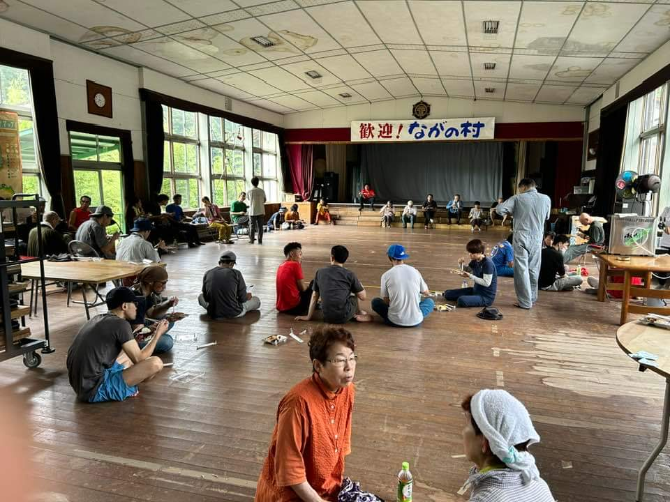
※備中・帝釈に関する情報がございましたらご連絡ください。情報共有させていただきます。
お問合せ：https://takahashigawa-climb.net/otoiawase/
※メールマガジンにご登録いただきますと、投稿を更新した際に通知いたしますので是非ご活用ください。
メルマガ登録：https://my.formman.com/form/pc/CyPwBuzTVeek4G3Q/
－高梁川流域クライミング交流会(TCNet)－
August 21, 2023 カテゴリー: 備中の岩場
8月1日〜12月31日の期間で権現谷エリアにアクセスする市道 横松谷線が一部通行止めとなります。
芋原方面からのアクセスは可能なようですので、ご利用の方はご注意ください。
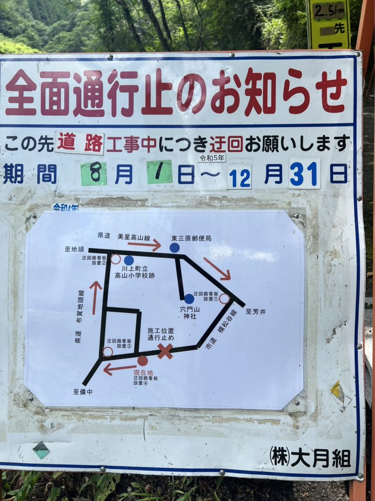
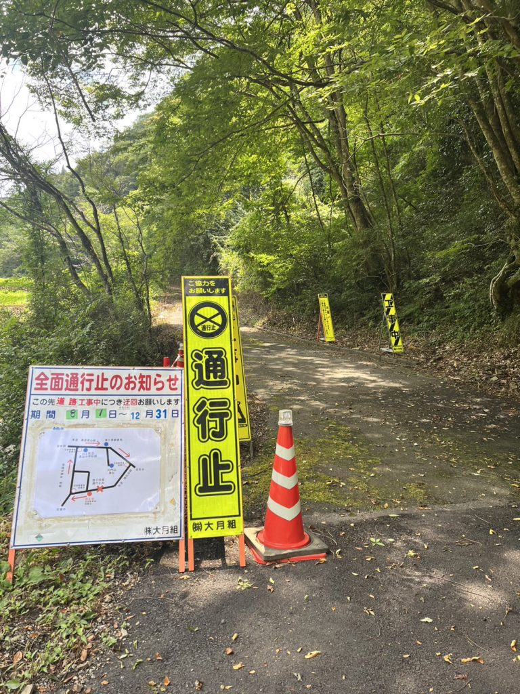
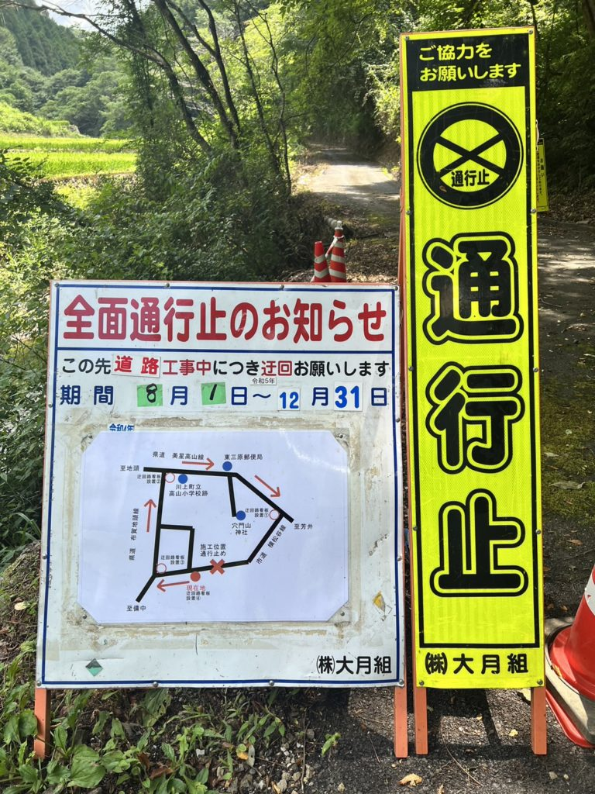
トラックが権現谷エリアの前を往復しますので、エリア利用時は十分ご注意ください。
また何か新たな情報が入りましたらお知らせします。
もし新たな情報をご存知の方がいらっしゃいましたら是非お知らせ下さい。
※備中・帝釈に関する情報がございましたらご連絡ください。情報共有させていただきます。
お問合せ：https://takahashigawa-climb.net/otoiawase/
※メールマガジンにご登録いただきますと、投稿を更新した際に通知いたしますので是非ご活用ください。
メルマガ登録：https://my.formman.com/form/pc/CyPwBuzTVeek4G3Q/
－高梁川流域クライミング交流会(TCNet)－
August 5, 2023 カテゴリー: 活動案内・報告
今年は悪天候による延期で、2週遅れでの開催となりました。
急な予定変更でしたが、41名のクライマー諸氏にご参加いただきました。
好天にめぐまれましたが、温度・湿度ともに非常に高い中、活動に従事して頂いた皆様には感謝申し上げます。
TCNetでは、今後も利用するクライマーみんなでエリアを守っていきたいと考えております。参加いただきました皆様、改めてありがとうございました。
TCNet事務局
また、清掃活動後には、救命講習会を開催しました。定期的に行うことで、いざという時に慌てず対応できるようになります。参加者の皆さんも実際に体験することにより、意識もアップデートできたのではないでしょうか。
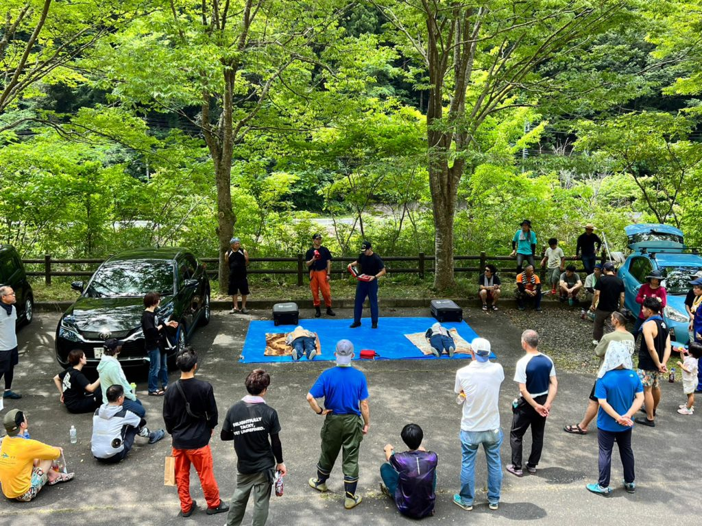
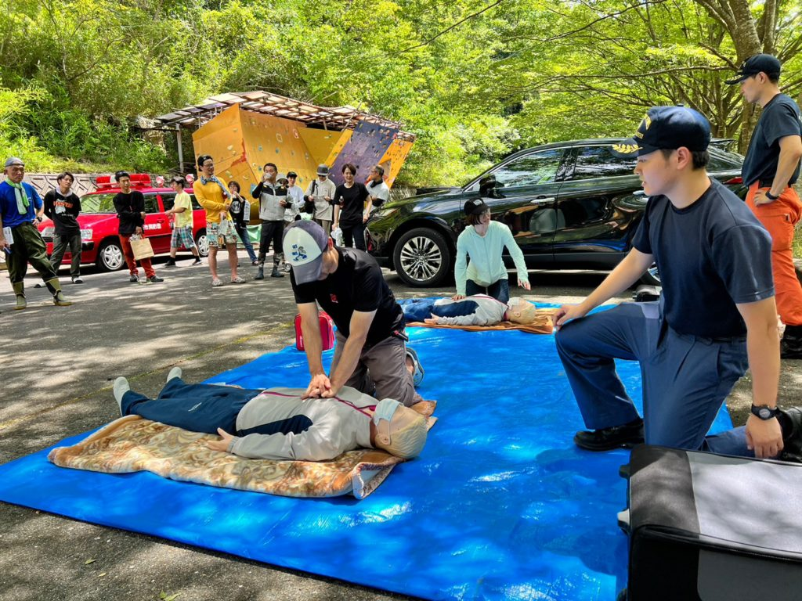
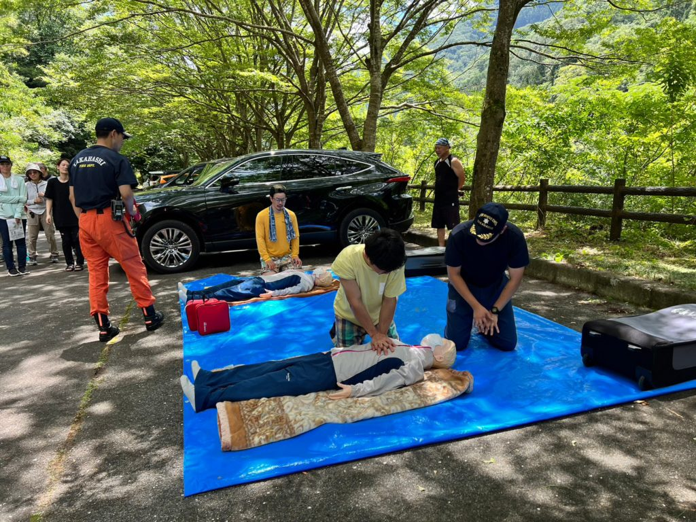
なお、これまで清掃活動を7月の第2日曜日開催でおこなってきましたが、今回の総会で今後の清掃活動については、今年と同じように、7月最終日曜日を軸に検討することになりました。
「備中清掃は雨の中」といった印象を持たれている方も多いと思います。
時期を後ろにずらすことで、雨の心配は少なくなるとかんがえております。今度は暑さが問題となりますが、時間帯の変更や活動場所の調整などで対応できればと考えておりますのでご理解いただきますようお願い申し上げます。
クライミングエリアはそこを利用するクライマーみんなで守って行ければと考えておりますので、引き続きご理解ご協力頂けますようお願い致します。
※備中・帝釈に関する情報がございましたらご連絡ください。情報共有させていただきます。
お問合せ：https://takahashigawa-climb.net/otoiawase/
※メールマガジンにご登録いただきますと、投稿を更新した際に通知いたしますので是非ご活用ください。
メルマガ登録：https://my.formman.com/form/pc/CyPwBuzTVeek4G3Q/
－高梁川流域クライミング交流会(TCNet)－
August 1, 2023 カテゴリー: 地域のイベント情報, 活動案内・報告
3年ぶり15回目を迎える下帝釈峡・永野地区の一斉清掃活動の開催が決定いたしました。帝釈峡の常連クライマーはもちろん、まだ帝釈峡を訪れたことがないという方も、是非この機会に帝釈峡にお越し下さい。
新型コロナウイルス感染症の影響で、3年間行うことができませんでした。
久々となる今回も永野地区の皆さまから、参加者へお弁当をご用意いただけることとなりました。そのため、参加希望の方はお手数ですが、下記Googleフォームよりお申し込みをお願いいたします。
宿泊希望の方も一緒にお申し込みいただけます。
宿泊人数には制限がございますので、宿泊を確約できるものではございません。申し訳ございませんが、ご了承いただきますようお願いいたします。
また、清掃活動の参加にお申し込みが必須というわけではございませんので、お気軽にご参加いただければ幸いです。（お弁当のご用意がないというだけです）3年ぶりで参加者が少ないと寂寥感が出てしまいますので、皆さまお誘い合わせの上、ご参加をお願いいたします。
【主 催】 永野地区自治振興会
【共 催】 高梁川流域クライミング交流会（TC‐net）
【日 時】 令和5年9月3日（日）AM8：00～11：30まで（早めの昼食後解散）
【集合場所】ながの村ふれあいセンター
【内 容】
・ながの村の皆さんとクライマーによる、空缶拾い、分別作業、
花面公園及び道路脇の草刈り、ふれあいセンター、各小屋の片付け、清掃
・永野地区の皆さんとクライマーとの清掃活動を通しての交流
【日 程】
・8時～ 各地区から空き缶拾いを実施し花面公園へ
・9時～ 分別作業、花面公園、ながの村ふれあいセンター、各小屋、
各岩場アプローチの草刈り、清掃、整備作業
・11時～ 交流会、昼食会
【参加申し込み】
ながの村（下帝釈峡）清掃活動 参加申込 2023
※ご参加頂ける方は、お弁当準備の関係で8/31（木）までに、申し込みをよろしくお願いいたします。
・刈り払い機、鎌、軍手、ゴミばさみ等、活動に必要なものは、各自で準備して頂ければ助かります。
・当日は、ながの村自治振興会からお弁当と飲み物が出ます。（参加申込必要）
・小雨決行です。大雨の場合は各小屋の片付け・清掃とふれあいセンターで空缶の分別交流、昼食会をします。その場合、集合は9時とします。
・最終判断は当日朝に行いますので、ながの村まで来るかどうかは各自で判断して下さい。よろしくお願い致します。
July 17, 2023 カテゴリー: 備中の岩場, 岩場の情報
今年もイノシシ対策の電柵が設置されました。
皆様よろしくお願いいたします。
2023年7月
－地元からの依頼－
ニューエリア駐車場付近の猪被害の予防のため、今年も電柵を設置されたようです。電柵位置を詳しく把握している地元の方でないと解除ができない為、クライマー諸氏は電柵設置までに駐車場より移動してもらいたいとの事です。
これから10月までは
１．用瀬から歩く
２．17時までに駐車場を出る
の徹底をお願いします。
10月までは、17時頃までに駐車場から出る必要があります。
トライや回収の順番が思うとおりに来なかったり、天気その他で遅れてしまう可能性がありますので、積極的に用瀬からのアクセスをご検討ください。
また新たな情報が入り次第お知らせします。
クライミングエリアはそこを利用するクライマーみんなで守って行ければと考えておりますので、引き続きご理解ご協力頂けるようお願い致します。
※備中・帝釈に関する情報がございましたらご連絡ください。情報共有させていただきます。
お問合せ：https://takahashigawa-climb.net/otoiawase/
※メールマガジンにご登録いただきますと、投稿を更新した際に通知いたしますので是非ご活用ください。
メルマガ登録：https://my.formman.com/form/pc/CyPwBuzTVeek4G3Q/
－高梁川流域クライミング交流会(TCNet)－
June 23, 2023 カテゴリー: 活動案内・報告
7月9日に予定しておりました岩場清掃・草刈活動ですが、天候不順のため、7月30日に延期となりました。お忙しいところ日程調整いただいた皆様には申し訳ございませんが、ご理解頂ますようお願い申し上げます。
今年も昨年に引き続き備中高梁クライミング協会・高梁クライミング少年団との共催により、備中の岩場一斉清掃草刈活動の実施を予定しております。
- 【内 容】 各エリアの清掃と草刈
【日 程】 令和5年7月9日（日）9：00～11：00【延期】- 【日 程】 令和5年7月30日（日）9：00～11：00
- 9:00 開会式（受け付け 8:30～）
- 9:15～11:00 各エリアの清掃草刈
- 11:00〜12:00 心肺呼吸法講習会
- 【エリア】 用瀬周辺、羽山周辺、長屋坂、レイクビュー、杉田ロック、川エリア、権現谷、リバーパーク
- 【参加費】 500円（参加費は、TCNet の各種活動資金とさせていただきます。）
- 【集合場所】 用瀬嶽クライミング広場（用瀬小屋）
- 【主 催】 高梁川流域クライミング交流会（TCNet）
- 【共 催】 備中高梁クライミング協会・高梁クライミング少年団
★草刈機を所有されている方は、極力持参をお願いします。
★軍手、火鉢、鎌、刈り払い機等、清掃・草刈に必要な用具は各自でご持参下さい。
★用瀬小屋掃除用の雑巾に使えるものがあればお持ちください。
★フィックス用ロープの寄付もお待ちしております。
★感染症対策（マスクの着用 etc）は個人の判断でよろしくお願いいたします。
★雨天決行ですが、豪雨など実施に差し支える場合は改めてご案内いたします。但しご案内が直前となると思われますので参加予定の皆様は案内の確認をお願いいたします。
★皆様お誘い合わせの上ご参加ください。たくさんのクライマーの参加をお待ちしています!!
参加費については、Paypayでの受付も開始いたしました。また、寄付についても随時受け付けております。こちらについてもPaypayで受け付け可能です。
送金の際にお名前をメッセージにご記載ください。匿名希望の方も、その旨お申し出いただければと思います。（ID:tc_net）
クライミングエリアはそこを利用するクライマーみんなで守って行ければと考えておりますので、引き続きご理解ご協力頂けるようお願い致します。
※備中・帝釈に関する情報がございましたらご連絡ください。情報共有させていただきます。
お問合せ：https://takahashigawa-climb.net/otoiawase/
※メールマガジンにご登録いただきますと、投稿を更新した際に通知いたしますので是非ご活用ください。
メルマガ登録：https://my.formman.com/form/pc/CyPwBuzTVeek4G3Q/
－高梁川流域クライミング交流会(TCNet)－
May 20, 2023 カテゴリー: 活動案内・報告
日程が変更となりましたので、再掲いたします。
参加を予定されていた方には申し訳ございませんが、再検討をお願いいたします。
各エリアの清掃活動ですが、本年については下記を予定しております。
ここ数年、新型コロナウイルス感染症の流行で中止などありましたが、本年はすべての岩場で開催予定です。
皆様のご参加をお待ちしております。
【清掃活動予定】
・6月 「勝山の岩場清掃」 ⇒ 実施【実施済】
・7月 「備中清掃」 ⇒ 7/30実施（7/9より延期済み）
・8月 「ながの村（下帝釈峡）清掃活動」 ⇒ 9/3実施予定（8/27より延期されました）
※備中・帝釈に関する情報がございましたらご連絡ください。情報共有させていただきます。
お問合せ：https://takahashigawa-climb.net/otoiawase/
※メールマガジンにご登録いただきますと、投稿を更新した際に通知いたしますので是非ご活用ください。
メルマガ登録：https://my.formman.com/form/pc/CyPwBuzTVeek4G3Q/
－高梁川流域クライミング交流会(TCNet)－
March 20, 2023 カテゴリー: 備中の岩場
3月23日〜6月30日の期間で権現谷エリアにアクセスする市道 横松谷線が全面通行止めとなるとの情報がクライマーより寄せられました。
週末を含む全日通れないか等不明ですが、看板が出ている場合は通らないほうが無難と思われます。
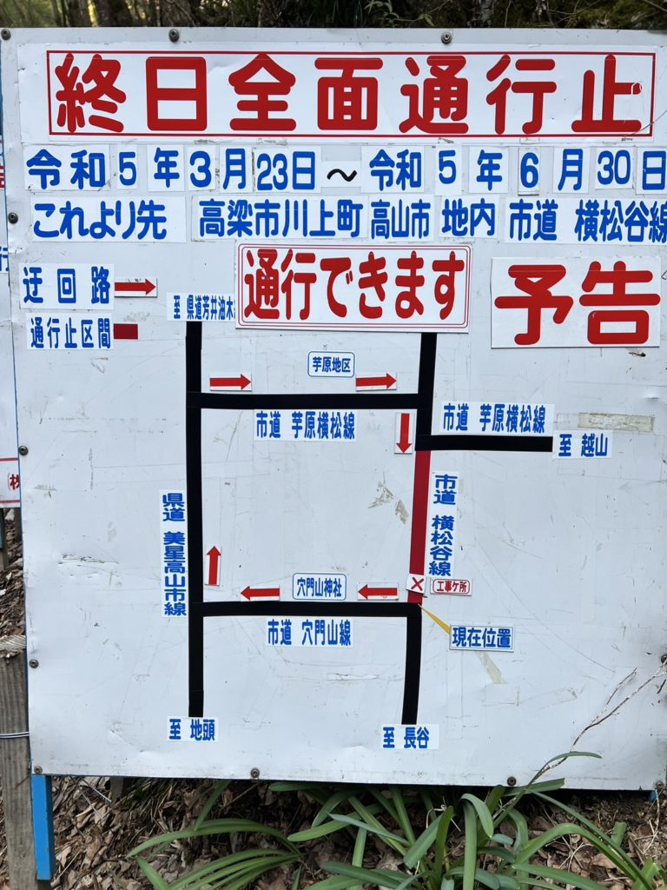
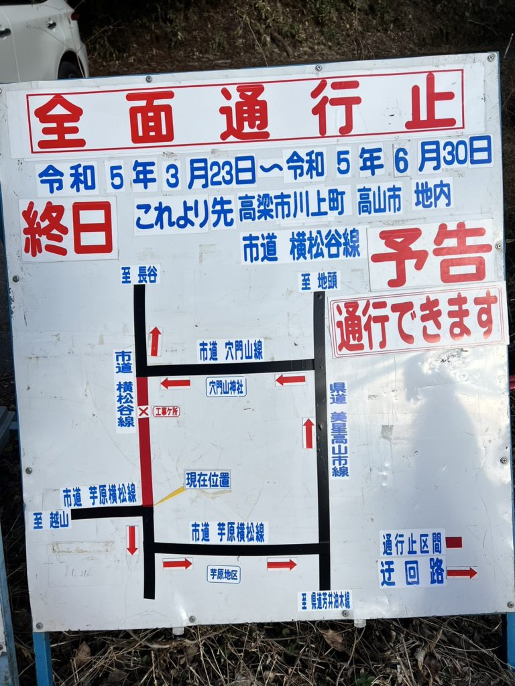
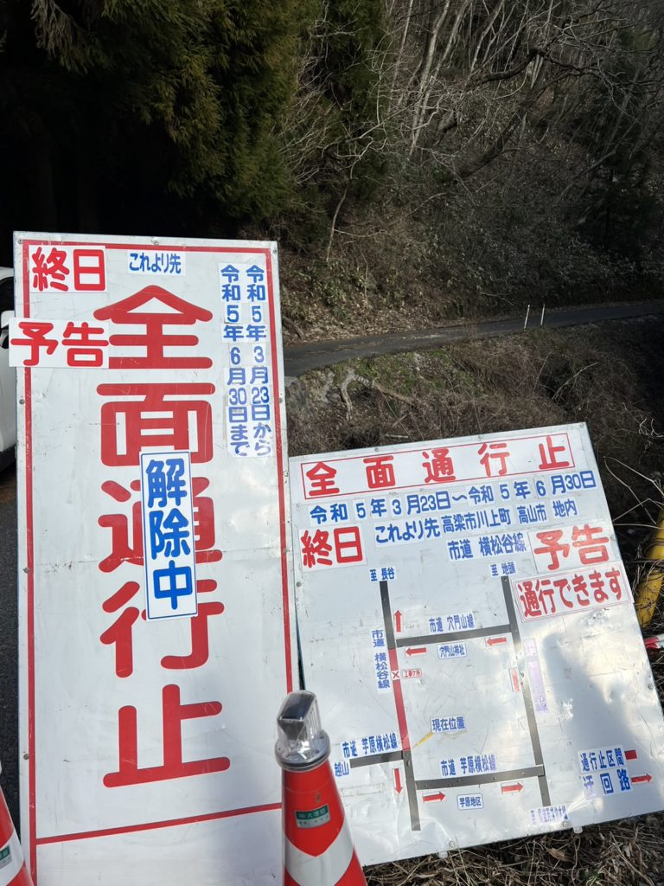
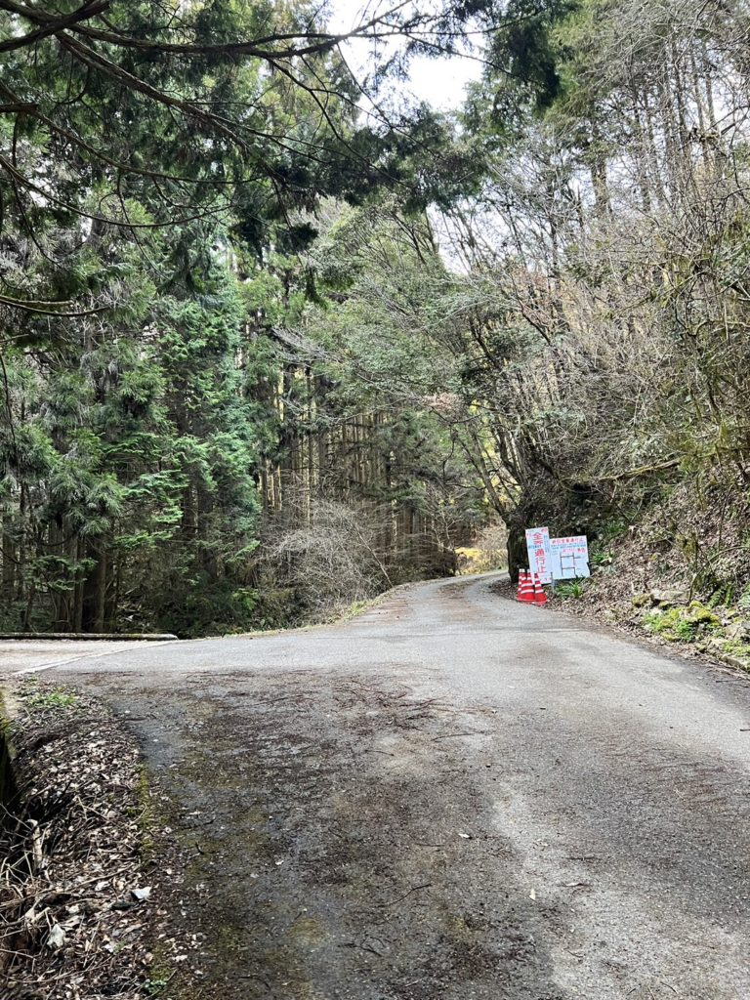
また何か新たな情報が入りましたらお知らせします。
もし新たな情報をご存知の方がいらっしゃいましたら是非お知らせ下さい。
※備中・帝釈に関する情報がございましたらご連絡ください。情報共有させていただきます。
お問合せ：https://takahashigawa-climb.net/otoiawase/
※メールマガジンにご登録いただきますと、投稿を更新した際に通知いたしますので是非ご活用ください。
メルマガ登録：https://my.formman.com/form/pc/CyPwBuzTVeek4G3Q/
－高梁川流域クライミング交流会(TCNet)－
March 11, 2023 カテゴリー: 備中の岩場, 岩場の情報
工事のため全面通行止めだった備中・羽山ですが、解除されたとの情報がクライマーよりよせられました。
ご協力ありがとうございました。また、情報提供ありがとうございます。
クライミングエリアはそこを利用するクライマーみんなで守って行ければと考えておりますので、引き続きご理解ご協力頂けるようお願い致します。
※備中・帝釈に関する情報がございましたらご連絡ください。情報共有させていただきます。
お問合せ：https://takahashigawa-climb.net/otoiawase/
※メールマガジンにご登録いただきますと、投稿を更新した際に通知いたしますので是非ご活用ください。
メルマガ登録：https://my.formman.com/form/pc/CyPwBuzTVeek4G3Q/
－高梁川流域クライミング交流会(TCNet)－
January 19, 2023 カテゴリー: 備中の岩場
1月30日〜3月10日の期間で羽山第一トンネルから第二トンネル間が全面通行止めとなるとの情報がクライマーより寄せられました。
・「発情期」あたりの広場も機械や重機を入れるため登攀不可
・その他のルートに関しても、作業者や機械の安全のため、工事期間中は侵入自体を禁止するよう県に申請しており、徒歩でのアプローチでも登攀不可
・工事期間は多少短くなるかもしれないとのこと
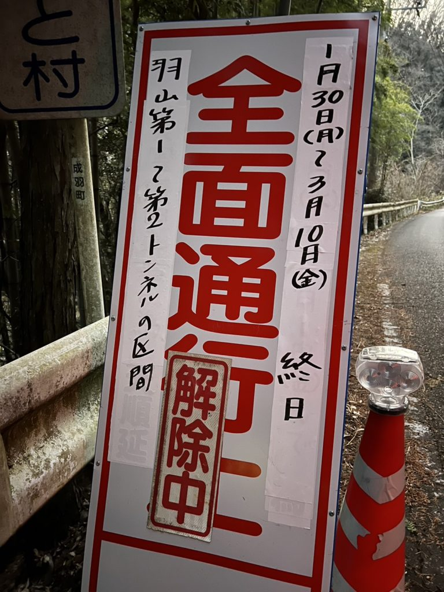
また何か新たな情報が入りましたらお知らせします。
もし新たな情報をご存知の方がいらっしゃいましたら是非お知らせ下さい。
※備中・帝釈に関する情報がございましたらご連絡ください。情報共有させていただきます。
お問合せ：https://takahashigawa-climb.net/otoiawase/
※メールマガジンにご登録いただきますと、投稿を更新した際に通知いたしますので是非ご活用ください。
メルマガ登録：https://my.formman.com/form/pc/CyPwBuzTVeek4G3Q/
－高梁川流域クライミング交流会(TCNet)－
December 26, 2022 カテゴリー: 備中の岩場, 岩場の情報
クライマーからの情報です。
杉田ロック(ウエスタンロック)の「我が家ではこうなんです。」と「さんまのレアー」の間の庇にあったキイロスズメバチの巣が有志のクライマーにより撤去されたとの連絡がありました。
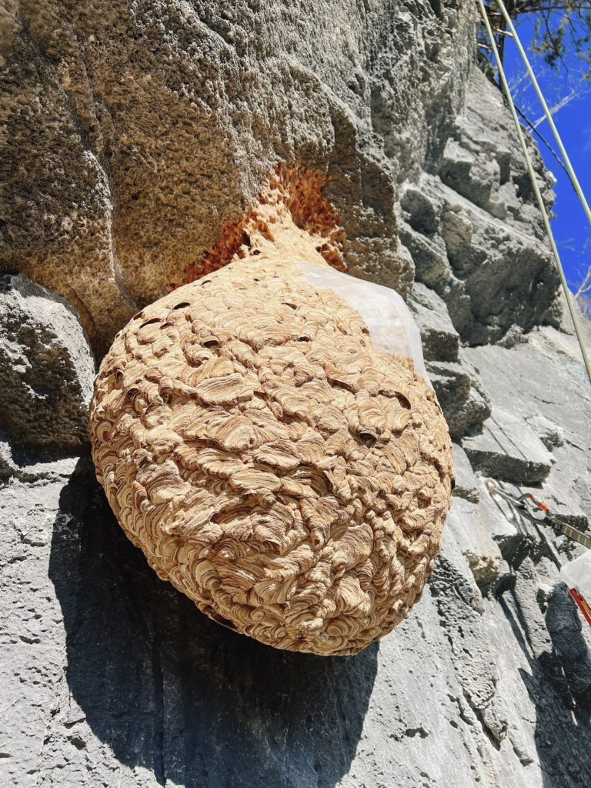
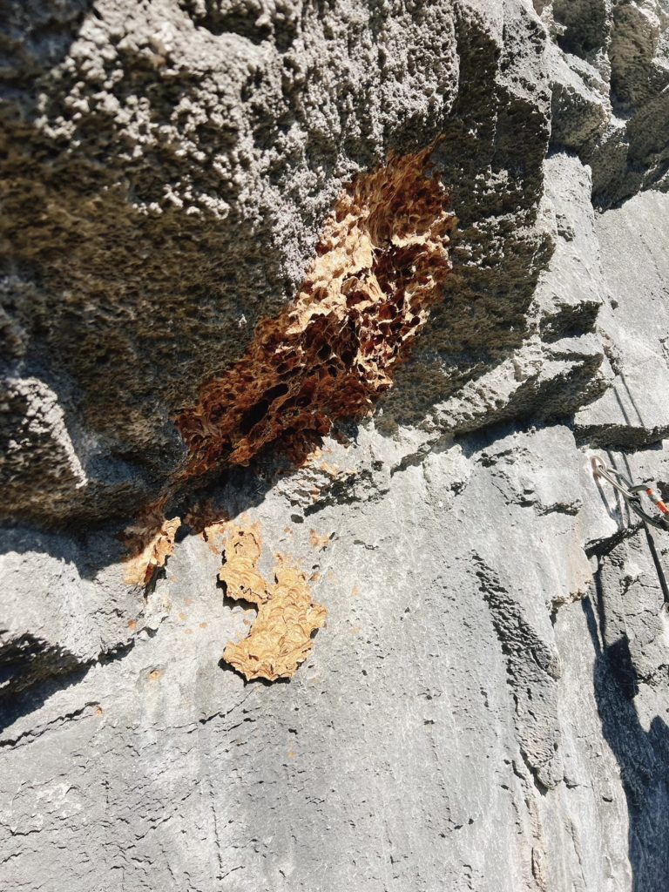
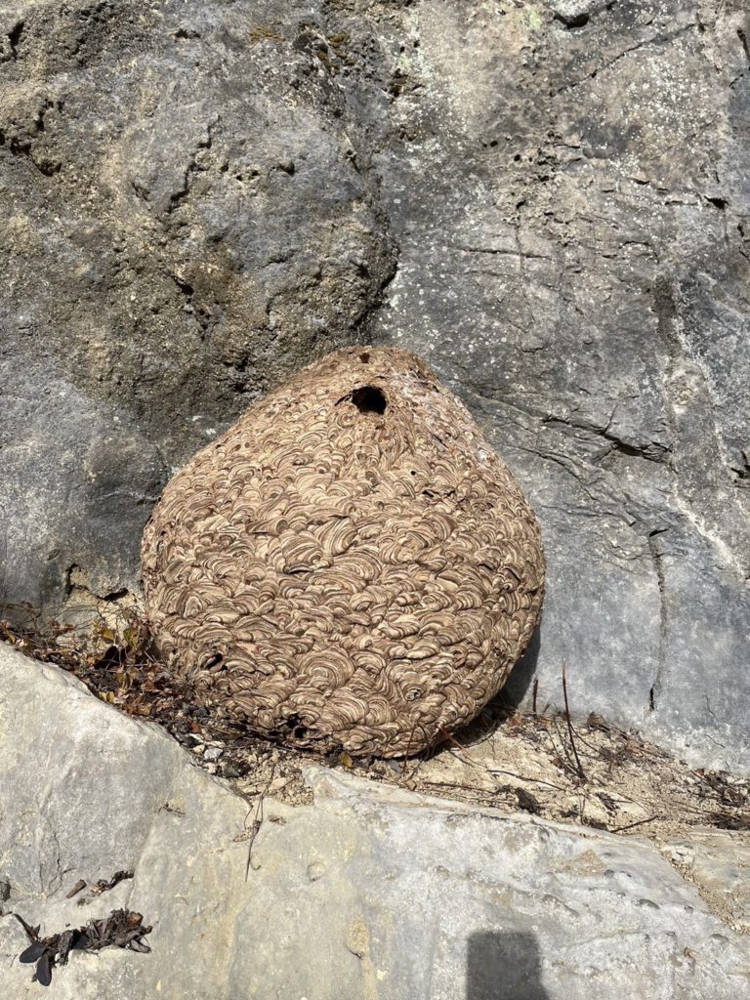
作業いただいた皆様ありがとうございました。
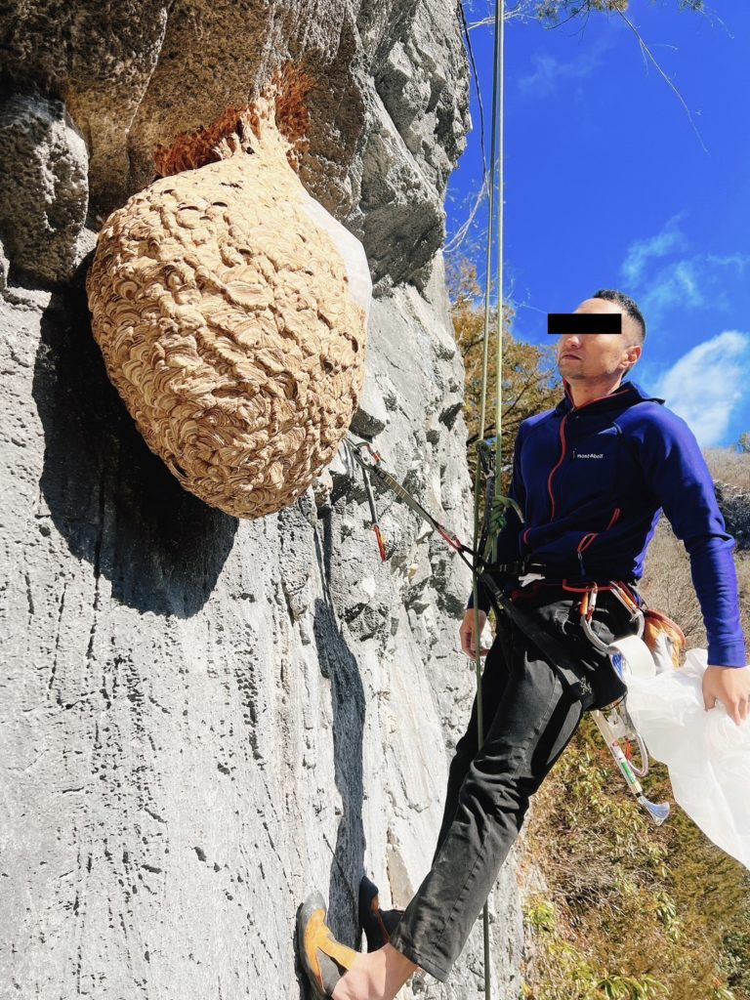
稀に見る大きさですね・・・。
情報ありがとうございました。
クライミングエリアはそこを利用するクライマーみんなで守って行ければと考えておりますので、引き続きご理解ご協力頂けるようお願い致します。
※備中・帝釈に関する情報がございましたらご連絡ください。情報共有させていただきます。
お問合せ：https://takahashigawa-climb.net/otoiawase/
※メールマガジンにご登録いただきますと、投稿を更新した際に通知いたしますので是非ご活用ください。
メルマガ登録：https://my.formman.com/form/pc/CyPwBuzTVeek4G3Q/
－高梁川流域クライミング交流会(TCNet)－
December 25, 2022 カテゴリー: お知らせ
今年も備中の岩場の地主様、管理者様等に年末のご挨拶としてお歳暮をお送りいたしました。
「高梁川流域クライミング交流会」と「クライマー一同」の連名にてTCNetのメンバーが持参させて頂いております。

これらの費用は、皆様からのご寄付や備中清掃の際の参加費より出させて頂いております。TCNetの活動への常日頃のご理解とご協力ありがとうございます。
クライミングエリアはそこを利用するクライマーみんなで守って行ければと考えておりますので、引き続きご理解ご協力頂けるようお願い致します。
※備中・帝釈に関する情報がございましたらご連絡ください。情報共有させていただきます。
お問合せ：https://takahashigawa-climb.net/otoiawase/
※メールマガジンにご登録いただきますと、投稿を更新した際に通知いたしますので是非ご活用ください。
メルマガ登録：https://my.formman.com/form/pc/CyPwBuzTVeek4G3Q/
－高梁川流域クライミング交流会(TCNet)－
November 26, 2022 カテゴリー: お知らせ, 帝釈の岩場
帝釈峡 花子岩の「まだまだ 5.11c」について注意喚起がありました。
登りに行く方はご注意ください。
クライミングエリアはそこを利用するクライマーみんなで守って行ければと考えておりますので、引き続きご理解ご協力頂けるようお願い致します。
※備中・帝釈に関する情報がございましたらご連絡ください。情報共有させていただきます。
お問合せ：https://takahashigawa-climb.net/otoiawase/
※メールマガジンにご登録いただきますと、投稿を更新した際に通知いたしますので是非ご活用ください。
メルマガ登録：https://my.formman.com/form/pc/CyPwBuzTVeek4G3Q/
－高梁川流域クライミング交流会(TCNet)－
November 23, 2022 カテゴリー: 備中の岩場, 岩場の情報
クライマーからの情報です。
杉田ロック(ウエスタンロック)の「我が家ではこうなんです。」と「さんまのレアー」の間の庇にキイロスズメバチの巣があるとの情報を頂きました。11月17日現在、巣の周りには活発に活動するスズメバチが確認できたとのことです。
登攀時や休憩中、ご注意下さい。
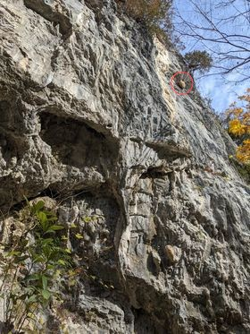
情報ありがとうございました。
（情報提供から掲載まで時間がかかりました。申し訳ございません）
クライミングエリアはそこを利用するクライマーみんなで守って行ければと考えておりますので、引き続きご理解ご協力頂けるようお願い致します。
※備中・帝釈に関する情報がございましたらご連絡ください。情報共有させていただきます。
お問合せ：https://takahashigawa-climb.net/otoiawase/
※メールマガジンにご登録いただきますと、投稿を更新した際に通知いたしますので是非ご活用ください。
メルマガ登録：https://my.formman.com/form/pc/CyPwBuzTVeek4G3Q/
－高梁川流域クライミング交流会(TCNet)－
October 26, 2022 カテゴリー: お知らせ, 岩場の情報, 帝釈の岩場, 活動案内・報告
10月23日、帝釈峡第二道場のリボルト作業をすべて完了しました。
10月25日から全てのルートを登って頂けます。
ボルトの本数は一切変えておりません。
どうしてもやむを得なかった２～３本を除き、元のボルトを抜いて
同じ位置にケミカルボルトを設置しております。
「第二道場のランナウト」は変わりません。
「デンジャラスラブ」のみ、もろく危険な為、対象から外しました。
重労働の作業にご尽力頂いた皆さん、お手伝い頂いた皆さん、ご理解ご協力頂いた皆さん、ありがとうございました。
尚、リボルトされても、皆さんの安全を100％保証するものではありません。
今後共、お互いに充分注意して安全にクライミングを楽しみ、苦しみましょう！
※備中・帝釈に関する情報がございましたらご連絡ください。情報共有させていただきます。
お問合せ：https://takahashigawa-climb.net/otoiawase/
※メールマガジンにご登録いただきますと、投稿を更新した際に通知いたしますので是非ご活用ください。
メルマガ登録：https://my.formman.com/form/pc/CyPwBuzTVeek4G3Q/
－高梁川流域クライミング交流会(TCNet)－
October 1, 2022 カテゴリー: 備中の岩場, 岩場の情報
ニューエリアの駐車場利用について、害獣対策の為の電柵設置による利用時間制限をお願いしておりましたが、利用されているクライマーより「地元の方とお話したところ、駐車場の利用時間について制限はなくなったことが確認できた」との連絡をいただきました。
ご協力ありがとうございました。また、情報提供ありがとうございます。
クライミングエリアはそこを利用するクライマーみんなで守って行ければと考えておりますので、引き続きご理解ご協力頂けるようお願い致します。
※備中・帝釈に関する情報がございましたらご連絡ください。情報共有させていただきます。
お問合せ：https://takahashigawa-climb.net/otoiawase/
※メールマガジンにご登録いただきますと、投稿を更新した際に通知いたしますので是非ご活用ください。
メルマガ登録：https://my.formman.com/form/pc/CyPwBuzTVeek4G3Q/
－高梁川流域クライミング交流会(TCNet)－
September 9, 2022 カテゴリー: 岩場の情報, 帝釈の岩場, 活動案内・報告
下記の日程にて帝釈第二道場のルートでリボルトを行います。
狭く落石の危険も高いエリアですので、リボルト施工日及びケミカル溶剤が硬化するまでの間はご利用はお控え頂きますようお願い致します。
9月23日(金曜日・祝日)～9月25日（日曜日）
帝釈第二道場
※雨天により順延する場合もあります。
※天候などの理由により日程とエリアが変更になる場合もありますのでクライミングを予定されている方は今後の案内にもご注意下さい。
クライミングエリアはそこを利用するクライマーみんなで守って行ければと考えておりますので、引き続きご理解ご協力頂けるようお願い致します。
※備中・帝釈に関する情報がございましたらご連絡ください。情報共有させていただきます。
お問合せ：https://takahashigawa-climb.net/otoiawase/
※メールマガジンにご登録いただきますと、投稿を更新した際に通知いたしますので是非ご活用ください。
メルマガ登録：https://my.formman.com/form/pc/CyPwBuzTVeek4G3Q/
－高梁川流域クライミング交流会(TCNet)－
August 27, 2022 カテゴリー: 備中の岩場, 岩場の情報
長屋坂に行かれたクライマーから「長屋坂のミセスリエコの上部付近にスズメバチの巣を発見しました」と情報を頂きました。
登攀時や休憩中、ご注意下さい。
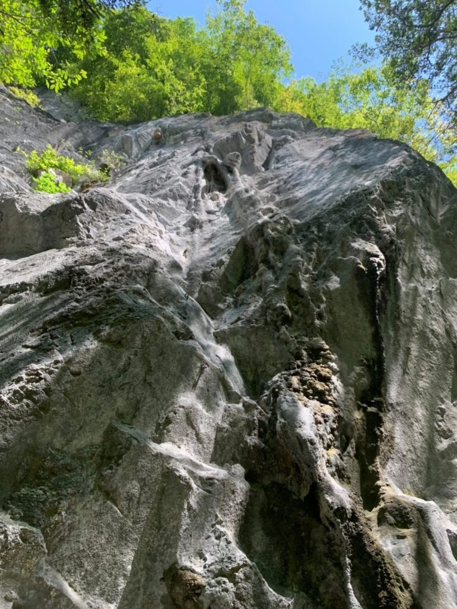
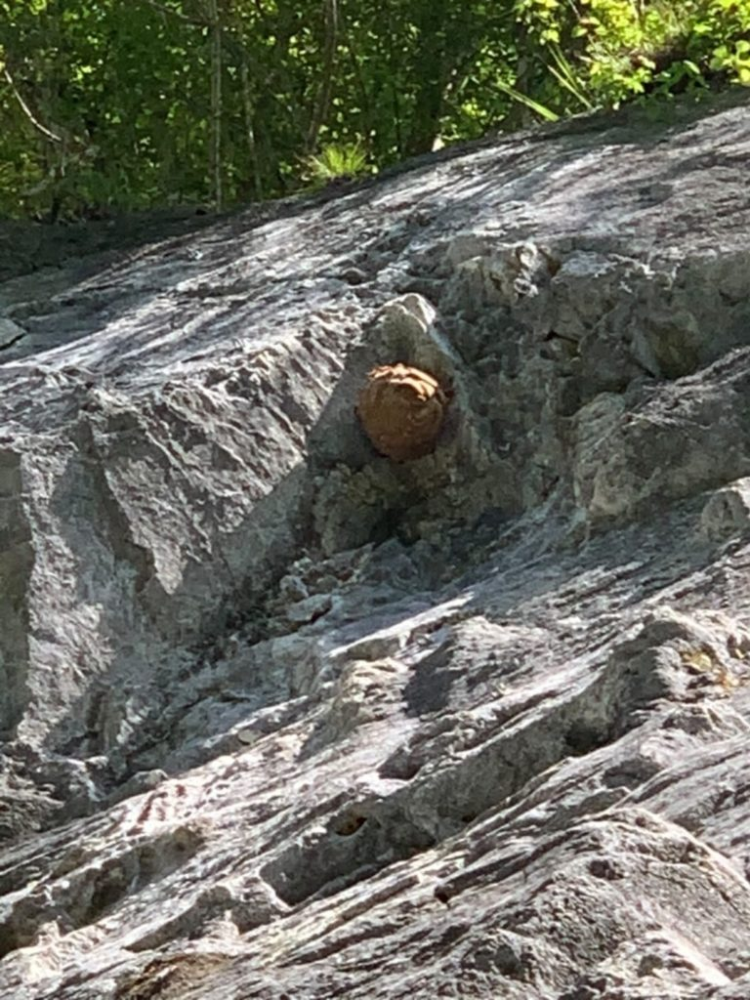
情報ありがとうございました。
クライミングエリアはそこを利用するクライマーみんなで守って行ければと考えておりますので、引き続きご理解ご協力頂けるようお願い致します。
※備中・帝釈に関する情報がございましたらご連絡ください。情報共有させていただきます。
お問合せ：https://takahashigawa-climb.net/otoiawase/
※メールマガジンにご登録いただきますと、投稿を更新した際に通知いたしますので是非ご活用ください。
メルマガ登録：https://my.formman.com/form/pc/CyPwBuzTVeek4G3Q/
－高梁川流域クライミング交流会(TCNet)－
August 27, 2022 カテゴリー: 備中の岩場, 岩場の情報
用瀬に向かう通路で比較的大規模な落石が発生しています。
通行に差し支えはないとの事ですが、すれ違いなどには影響があるものと思われますのでご注意下さい。
また、今後の落石にも注意して、通路は止まらず素早く通り抜けるようにお願いします。
この規模の落石が当たると相当な被害となります。
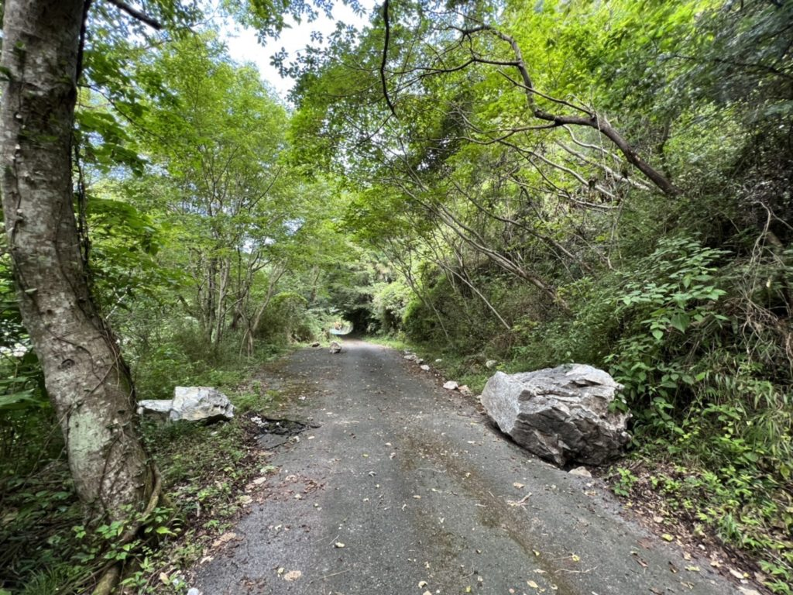
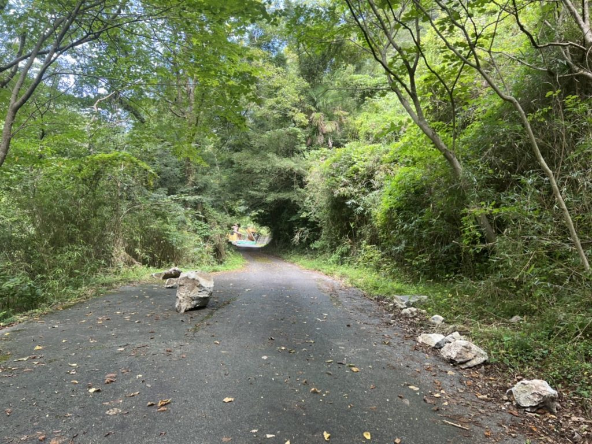
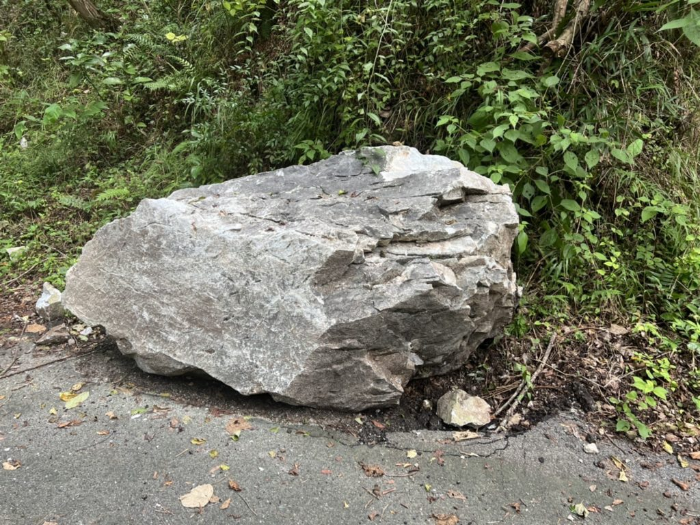
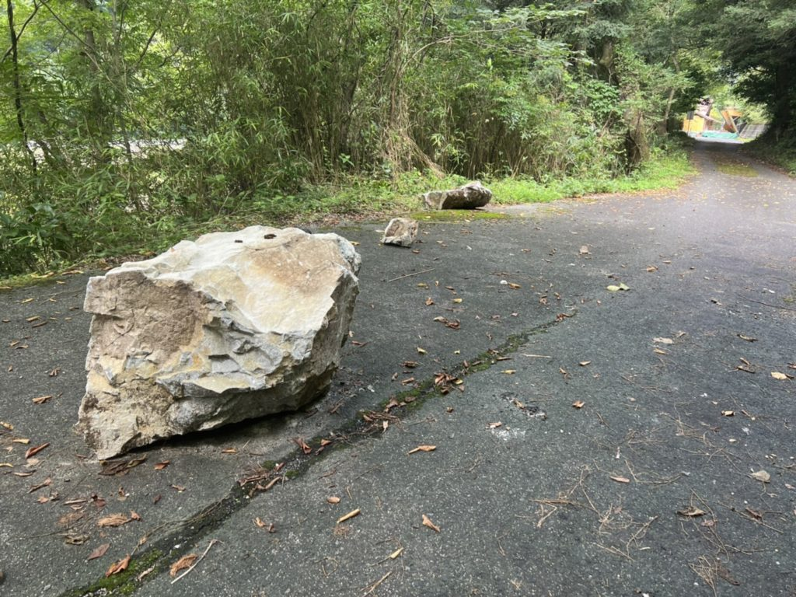
情報ありがとうございました。
クライミングエリアはそこを利用するクライマーみんなで守って行ければと考えておりますので、引き続きご理解ご協力頂けるようお願い致します。
※備中・帝釈に関する情報がございましたらご連絡ください。情報共有させていただきます。
お問合せ：https://takahashigawa-climb.net/otoiawase/
※メールマガジンにご登録いただきますと、投稿を更新した際に通知いたしますので是非ご活用ください。
メルマガ登録：https://my.formman.com/form/pc/CyPwBuzTVeek4G3Q/
－高梁川流域クライミング交流会(TCNet)－
August 12, 2022 カテゴリー: お知らせ, 帝釈の岩場
帝釈峡で永野郵便局の駐車スペースは郵便局が休みの日に限り、駐車をさせて頂いているスペースです。
混乱を招く恐れがありますので、今後は、休日も含め、郵便局横の駐車スペースは利用しないようお願いいたします。
クライミングエリアはそこを利用するクライマーみんなで守って行ければと考えておりますので、引き続きご理解ご協力頂けるようお願い致します。
※備中・帝釈に関する情報がございましたらご連絡ください。情報共有させていただきます。
お問合せ：https://takahashigawa-climb.net/otoiawase/
※メールマガジンにご登録いただきますと、投稿を更新した際に通知いたしますので是非ご活用ください。
メルマガ登録：https://my.formman.com/form/pc/CyPwBuzTVeek4G3Q/
－高梁川流域クライミング交流会(TCNet)－
July 19, 2022 カテゴリー: お知らせ
8月28日開催予定でご案内しておりました「ながの村(下帝釈峡)清掃活動」ですが、コロナ感染拡大の為、クライマーの参加は中止となりました。
ご参加を予定をして頂いた皆様にはご迷惑をおかけいたします。
なお、普通に宿泊してクライミングして頂くことについては問題ないとのことです。
クライミングエリアはそこを利用するクライマーみんなで守って行ければと考えておりますので、引き続きご理解ご協力頂けるようお願い致します。
※備中・帝釈に関する情報がございましたらご連絡ください。情報共有させていただきます。
お問合せ：https://takahashigawa-climb.net/otoiawase/
※メールマガジンにご登録いただきますと、投稿を更新した際に通知いたしますので是非ご活用ください。
メルマガ登録：https://my.formman.com/form/pc/CyPwBuzTVeek4G3Q/
－高梁川流域クライミング交流会(TCNet)－
July 18, 2022 カテゴリー: 備中の岩場, 岩場の情報
－地元からの依頼－
ニューエリア駐車場付近の猪被害の予防のため、今年も電柵を設置されたようです。電柵位置を詳しく把握している地元の方でないと解除ができない為、クライマー諸氏は電柵設置までに駐車場より移動してもらいたいとの事です。
これから10月までは
１．用瀬から歩く
２．17時までに駐車場を出る
の徹底をお願いします。
10月までは、17時頃までに駐車場から出る必要があります。
トライや回収の順番が思うとおりに来なかったり、天気その他で遅れてしまう可能性がありますので、積極的に用瀬からのアクセスをご検討ください。
また新たな情報が入り次第お知らせします。
クライミングエリアはそこを利用するクライマーみんなで守って行ければと考えておりますので、引き続きご理解ご協力頂けるようお願い致します。
※備中・帝釈に関する情報がございましたらご連絡ください。情報共有させていただきます。
お問合せ：https://takahashigawa-climb.net/otoiawase/
※メールマガジンにご登録いただきますと、投稿を更新した際に通知いたしますので是非ご活用ください。
メルマガ登録：https://my.formman.com/form/pc/CyPwBuzTVeek4G3Q/
－高梁川流域クライミング交流会(TCNet)－
July 10, 2022 カテゴリー: 活動案内・報告
今年も引き続きコロナ感染拡大に配慮しつつ実施いたしました。
温度・湿度ともに非常に高く、少し動いただけで汗が吹き出る状況のなか、さらにマスク着用での作業、活動に従事して頂いた皆様には感謝申し上げます。
そんな中、今回は80名のクライマー諸氏にご参加いただき、過去最多を記録いたしました。
TCNetでは、今後も利用するクライマーみんなでエリアを守っていきたいと考えております。参加いただきました皆様、改めてありがとうございました。
TCNet事務局
また、閉会後、岡山県山岳・スポーツクライミング連盟より、瀬戸内生まれのクライミングチョーク #瀬戸内マグネシオが、先着順で、サンプルの提供がありました。
製品コンセプトは『循環』海からの恵みを山で使う！
性能と環境負荷低減の両方を目指した商品とのことです。

さらに本日の活動をNHKさんに取材いただきました。
https://www3.nhk.or.jp/lnews/okayama/20220710/4020013252.html
クライミングエリアはそこを利用するクライマーみんなで守って行ければと考えておりますので、引き続きご理解ご協力頂けるようお願い致します。
※備中・帝釈に関する情報がございましたらご連絡ください。情報共有させていただきます。
お問合せ：https://takahashigawa-climb.net/otoiawase/
※メールマガジンにご登録いただきますと、投稿を更新した際に通知いたしますので是非ご活用ください。
メルマガ登録：https://my.formman.com/form/pc/CyPwBuzTVeek4G3Q/
－高梁川流域クライミング交流会(TCNet)－
忘れ物のご案内
シューズと液体チョークが残置されておりました。
小屋の軒下（テラス下）に移動しておりますので、回収いただければと思います。
July 1, 2022 カテゴリー: 活動案内・報告
今年も昨年に引き続き備中高梁クライミング協会・高梁クライミング少年団との共催により、備中の岩場一斉清掃草刈活動の実施を予定しております。
【コロナ感染拡大対応】
・清掃参加受付時の検温 及び健康確認申告書への記入
ご参加の皆様にはご負担をお掛けしますが、ご協力をよろしくお願いいたします。
※コロナ感染拡大の社会的状況によっては中止となる可能性もございます。
その際は早急にHP、facebook等で告知いたします。
- 【内 容】 各エリアの清掃と草刈
- 【日 程】 令和4年7月10日（日）9：00～11：00
-
-
- 9:00 開会式（受け付け 8:30～）
- 9:15～11:00 各エリアの清掃草刈
- 【エリア】 用瀬周辺、羽山周辺、長屋坂、レイクビュー、杉田ロック、川エリア、権現谷、リバーパーク
- 【参加費】 500円（参加費は、TCNet の各種活動資金とさせていただきます。）
- 【集合場所】 用瀬嶽クライミング広場（用瀬小屋）
- 【主 催】 高梁川流域クライミング交流会（TCNet）
- 【共 催】 備中高梁クライミング協会・高梁クライミング少年団
★草刈機を所有されている方は、極力持参をお願いします。
★軍手、火鉢、鎌、刈り払い機等、清掃・草刈に必要な用具は各自でご持参下さい。
★感染症対策（マスクの着用 etc）をよろしくお願いいたします。
★雨天決行ですが、豪雨など実施に差し支える場合は改めてご案内いたします。但しご案内が直前となると思われますので参加予定の皆様は案内の確認をお願いいたします。
★皆様お誘い合わせの上ご参加ください。たくさんのクライマーの参加をお待ちしています!!
クライミングエリアはそこを利用するクライマーみんなで守って行ければと考えておりますので、引き続きご理解ご協力頂けるようお願い致します。
※備中・帝釈に関する情報がございましたらご連絡ください。情報共有させていただきます。
お問合せ：https://takahashigawa-climb.net/otoiawase/
※メールマガジンにご登録いただきますと、投稿を更新した際に通知いたしますので是非ご活用ください。
メルマガ登録：https://my.formman.com/form/pc/CyPwBuzTVeek4G3Q/
－高梁川流域クライミング交流会(TCNet)－
June 13, 2022 カテゴリー: その他お知らせ
毎年実施している各エリアの清掃活動ですが、本年については下記を予定しております。
皆様のご理解の程、よろしくお願いいたします。
【清掃活動予定】
・6月 「勝山の岩場清掃」 ⇒ 中止
・7月 「備中清掃」 ⇒ 7/10実施（詳細は別途ご連絡）
・8月 「ながの村（下帝釈峡）清掃活動」 ⇒ 8/28実施予定
TCNet事務局
June 5, 2022 カテゴリー: 備中の岩場, 岩場の情報, 活動案内・報告
下記の日程にて各エリアの一部ルートでリボルトを行います。
リボルト施工日及びケミカル溶剤が硬化するまでの間は対象ルートのご利用はお控え頂きますようお願い致します。
6月11日(土)
2ルンゼ
・バットマン
・バナナおくれ
・フェイス
6月12日(日)
権現谷
・でえこん
・でぃだらぼっち
・参勤交代(終了点のみ)
・蛇の道は蛇(終了点のみ)
・天下ご免のむこう傷(終了点のみ)
・笹の茶美人(終了点のみ)
6月19日(日)
ニューエリア
・ういしいういしい
・ういしいういしい派生
※雨天により順延する場合もあります。
※天候などの理由により日程とエリアが変更になる場合もありますのでクライミングを予定されている方は今後の案内にもご注意下さい。
［JFA］
今回を含め、国内の多くの岩場がJFAの資材・人材提供によってリボルトされ、より安全な支点への交換と維持がされています。
まだJFAに加入されていない方は是非加入をお願い致します。
リボルト費用などは皆様の会費によって賄われています。
-JFA入会案内-
https://freeclimb.jp/jfa/join.htm
クライミングエリアはそこを利用するクライマーみんなで守って行ければと考えておりますので、引き続きご理解ご協力頂けるようお願い致します。
※備中・帝釈に関する情報がございましたらご連絡ください。情報共有させていただきます。
お問合せ：https://takahashigawa-climb.net/otoiawase/
※メールマガジンにご登録いただきますと、投稿を更新した際に通知いたしますので是非ご活用ください。
メルマガ登録：https://my.formman.com/form/pc/CyPwBuzTVeek4G3Q/
－高梁川流域クライミング交流会(TCNet)－
April 25, 2022 カテゴリー: お知らせ, 備中の岩場, 岩場の情報, 活動案内・報告
4月23日、4月24日の2日間でJFAリボルト職人認定講習会とリボルト作業を備中ニューエリアにて行いました。


リボルトが完了したルートは以下の通りです。
エリア右から
・テイクアチャンス
・定価ピンチ
・ランコロ
・ロマンチックまむし街道
・けもの道
・パンツインザジム
・残業手当
・ナインと思います
・MRSA
・吟じました
・フェイス
・フェイス
以上12ルートです。
これによりニューエリアでは「ういしいういしい」を除く全てのルートがリボルトを完了致しました。
詳細が知りたい方はTCNetまでお問い合わせ下さい。
※予定していた「ういしいういしい」は手違いにより今回は行えておりません。また近日中に行う予定です。
今回のリボルトでは多くの方に荷上げや荷下ろし、フィックス張り、その他様々なお手伝いを頂きました。
この場を借りてお礼申し上げます。
ありがとうございました。
-お願い-
今回も含め、国内の多くの岩場がJFAの資材提供「よってリボルトされ、より安全な支点への交換と維持がされています。
是非JFAに加入して下さい。
リボルトにかかる費用は会費によって賄われています。
-JFA入会案内-
https://freeclimb.jp/jfa/join.htm
April 6, 2022 カテゴリー: お知らせ, 備中の岩場, 岩場の情報, 活動案内・報告
4月22日 13:00 一部更新
24日(日)の天気が微妙ですが、JFAリボルト職人認定講習会及びリボルト作業を予定通り行います。
急な悪天等で日曜日のみ講習会や作業を行えず一部のルートで改めてリボルトの可能性も有ります。その際は改めて告知します。
4月15日一部更新
備中ニューエリアにて下記の日程でリボルト及びJFAリボルト職人認定講習会を開催致します。
この期間中にニューエリアの利用をご検討の方は、今後の案内も含め十分にご注意頂きますようよろしくお願い致します。
［リボルト日程と予備日］
予定日:令和4年4月23日(土)～24日(日)
予備日:令和4年5月14日(土)～15日(日)
※予定日が雨天の場合は予備日に変更します。
※進捗状況により日程を追加する場合もあります。
［ルートと登攀禁止期間］
4月23日～4月25日は以下のルートは登ることが出来ません。
・ういしいういしい
・定価ピンチ
・テイクアチャンス
・ランコロ
・ロマンチックまむし街道
・けもの道
・パンツインザジム
・残業手当
・MRSA
・ないんと思います
・吟じました
・フェイス
・フェイス
※ リボルト当日にニューエリアでクライミングをされる方は必ずヘルメットの着用をお願い致します。
※4月23日にニューエリアでクライミングを予定されている方で、荷上げをお手伝い頂ける場合、8:30頃にニューエリアの駐車場にお越し頂ければと思います。
［荷物・休憩］
リボルト資材を「親の心子知らず」～「けもの道」付近に置く予定ですので荷物置き場と休憩についてもこの付近はご遠慮頂ければと思います。
［手伝いのお願い］
※多くの方からお申し出頂きお手伝いに関しては十分集まりましたので、募集を中止します。ご協力ありがとうございます。
当日お手伝いいただける方は是非お願い致します。
作業内容は、資材運搬、リボルト補助、フィックス張り、エリア整備などです。
ヘルメットは必須です。エリア整備の道具等も各自ご持参下さい。
お手伝い頂ける場合、事前にTCNetまでご連絡頂けますと大変助かります。連絡はFacebookやInstagramのメッセージ、HPのお問い合わせから等で構いません。
［JFA］
今回を含め、国内の多くの岩場がJFAの資材・人材提供によってリボルトされ、より安全な支点への交換と維持がされています。
まだJFAに加入されていない方は是非加入をお願い致します。
リボルト費用などは皆様の会費によって賄われています。
-JFA入会案内-
https://freeclimb.jp/jfa/join.htm
クライミングエリアはそこを利用するクライマーみんなで守って行ければと考えておりますので、引き続きご理解ご協力頂けるようお願い致します。
※備中・帝釈に関する情報がございましたらご連絡ください。情報共有させていただきます。
お問合せ：https://takahashigawa-climb.net/otoiawase/
※メールマガジンにご登録いただきますと、投稿を更新した際に通知いたしますので是非ご活用ください。
メルマガ登録：https://my.formman.com/form/pc/CyPwBuzTVeek4G3Q/
－高梁川流域クライミング交流会(TCNet)－
March 30, 2022 カテゴリー: お知らせ, 備中の岩場
備中羽山トンネルサイドにおいて、一部でルールが守られていない状況が確認されているようです。
羽山(トンネルサイド)エリアは公道に面した特殊なクライミングエリアです。
観光客が多く、クライマー以外の方の目に非常に晒されやすい場所という認識をしっかりと持って下さい。
羽山のルールを守って一般観光客や地元の方、またクライマー同士のトラブルを起こさないようにお願い致します。クイックドローの残置に関しては特にご注意ください。
羽山のルールを知らないクライマーも多いと思います。ルールを知らないと思われるクライマーにもなるべく早くこのルールを知ってもらえるように、是非このルールをお知らせ頂き守って頂くようにお伝え頂けるようご協力をお願い致します。
あと、これは基本事項ですが、クライミング後チョークの掃除もお願い致します。
羽山はチョーク跡が非常に目立ちます。
クライミングエリアはそこを利用するクライマーみんなで守って行ければと考えておりますので、引き続きご理解ご協力頂けるようお願い致します。
羽山トンネルサイドエリア・ルールと注意点
※備中・帝釈に関する情報がございましたらご連絡ください。情報共有させていただきます。
お問合せ：https://takahashigawa-climb.net/otoiawase/
※メールマガジンにご登録いただきますと、投稿を更新した際に通知いたしますので是非ご活用ください。
メルマガ登録：https://my.formman.com/form/pc/CyPwBuzTVeek4G3Q/
－高梁川流域クライミング交流会(TCNet)－
March 22, 2022 カテゴリー: 備中の岩場, 岩場の情報
先日ニューエリアの「2度目の春」付近で落石があり、「2度目の春」を登攀準備中の方の頭に当たって数針程縫う怪我をされたようです。
怪我をされた方の一日も早い回復を願っております。
ニューエリアは「パンツインザジム」より左側は落石が多く注意が必要です。休憩等する場所としては適さないように思います。
人数の多い時など、この付近には荷物を置く程度にして、休憩は比較的落石の少ない「パンツインザジム」から「美しくカンテ」の間で行う事をお勧めします。(落石がない訳ではありません)
大きな事故が起こるとエリア閉鎖などにもなりかねません。
人数の多い時は特に荷物をなるべくコンパクトに整理整頓して、多くの方がこの比較的落石の少ない場所を利用出来るように、お互いご協力頂けますようお願いします。
また、最近は徐々に増えてきたようにも思いますが、ヘルメットの着用を推奨します。
クライミングエリアはそこを利用するクライマーみんなで守って行ければと考えておりますので、引き続きご理解ご協力頂けるようお願い致します。
※備中・帝釈に関する情報がございましたらご連絡ください。情報共有させていただきます。
お問合せ：https://takahashigawa-climb.net/otoiawase/
※メールマガジンにご登録いただきますと、投稿を更新した際に通知いたしますので是非ご活用ください。
メルマガ登録：https://my.formman.com/form/pc/CyPwBuzTVeek4G3Q/
ー高梁川流域クライミング交流会(TCNet)ー
March 19, 2022 カテゴリー: 備中の岩場, 岩場の情報
羽山トンネルサイドエリアを利用する際に駐車している羽山渓谷の駐車場で、先日の雨によるものと思われる割と大きな落石が確認されたようです。
引きt続き落石が起こる可能性もありますので駐車する際はご注意下さい。
落石によって駐車スペースが減っていますが、決して無理に停めたりして通行の邪魔にならないようにお願いします。
また、道路向かいの渓谷側の駐車スペースには絶対に駐車しないで下さい。
駐車可能なスペース等について詳しくは「羽山の駐車について」をご確認下さい。
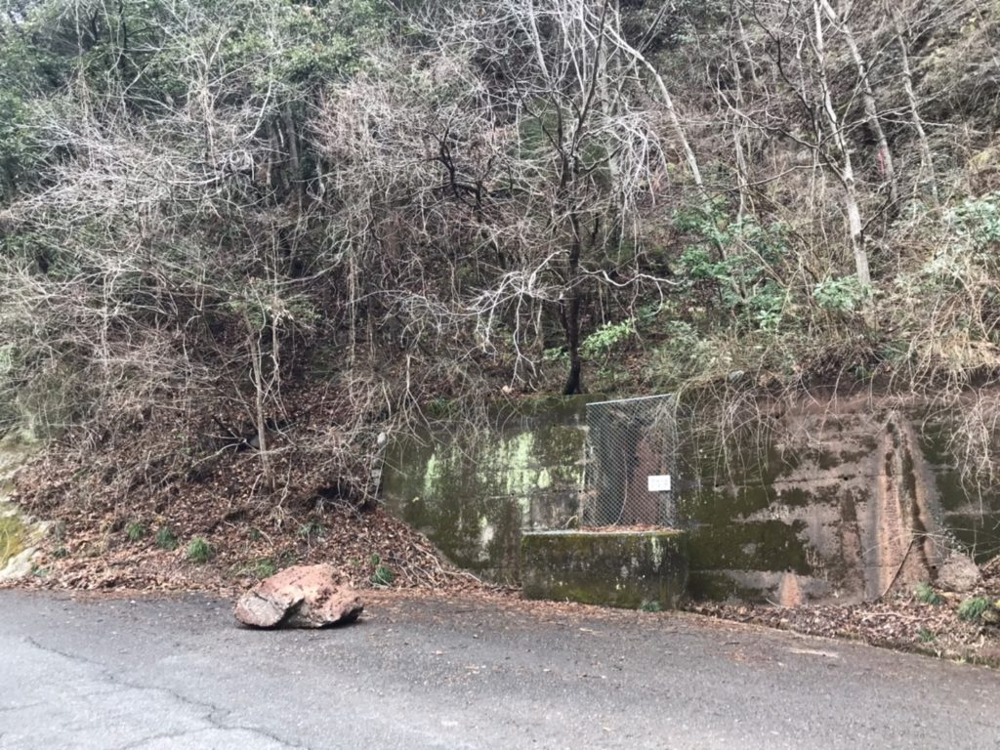
クライミングエリアはそこを利用するクライマーみんなで守って行ければと考えておりますので、引き続きご理解ご協力頂けるようお願い致します。
※備中・帝釈に関する情報がございましたらご連絡ください。情報共有させていただきます。
お問合せ:https://takahashigawa-climb.net/otoiawase/
※メールマガジンにご登録いただきますと、投稿を更新した際に通知いたしますので是非ご活用ください。
メルマガ登録：https://my.formman.com/form/pc/CyPwBuzTVeek4G3Q/
ー高梁川流域クライミング交流会(TCNet)－
March 14, 2022 カテゴリー: 備中の岩場
先日、長屋坂でMORISAMA 12abをトライ中に中間部のガバが剥離し20cm×20cm程度の岩が落ちたようです。
下には数人居たようですが、幸いビレイヤーを含め怪我人は出なかったようです。
今回の剥離によって特に難しくなっているという事はなく、グレードの見直しなどには及ばないようです。
ただ、今回剥離した岩について特にぐらつくなどの予兆は全くなかったようですので、付近の岩についても同じように剥離する可能性もあるかも知れません。
各エリア共通して言えることですが、万が一に備えヘルメットの利用をご検討下さい。
また、春は落石の多い季節ですので十分注意してクライミングを楽しんで下さい。
クライミングエリアはそこを利用するクライマーみんなで守って行ければと考えておりますので、引き続きご理解ご協力頂けるようお願い致します。
※備中・帝釈に関する情報がございましたらご連絡ください。情報共有させていただきます。
お問合せ：https://takahashigawa-climb.net/otoiawase/
※メールマガジンにご登録いただきますと、投稿を更新した際に通知いたしますので是非ご活用ください。
メルマガ登録：https://my.formman.com/form/pc/CyPwBuzTVeek4G3Q/
March 10, 2022 カテゴリー: お知らせ
備中エリアへクライミングに来られる方々より、高梁市にはクライミングが終わってからご飯を食べるところが少ないという話を良く耳にします。
そこで、高梁市の観光課が作成されています「ランチマップ」を紹介致します。
ランチマップという名前ですが、夜も営業されている所も多く掲載されていますので、夕食の際の参考にして頂けるのではないかと思います。
ランチマップvol.4
クライミングエリアはそこを利用するクライマーみんなで守って行ければと考えておりますので、引き続きご理解ご協力頂けるようお願い致します。
※備中・帝釈に関する情報がございましたらご連絡ください。情報共有させていただきます。
お問合せ：https://takahashigawa-climb.net/otoiawase/
※メールマガジンにご登録いただきますと、投稿を更新した際に通知いたしますので是非ご活用ください。
メルマガ登録：https://my.formman.com/form/pc/CyPwBuzTVeek4G3Q/
－高梁川流域クライミング交流会(TCNet)－
February 20, 2022 カテゴリー: 備中の岩場, 活動案内・報告
TCNetでは今ではほとんど人が行かなくなり荒れてしまったエリアを整備して再生したり、アプローチが分かりにくく敬遠されがちであったり、初めてではわかり難いエリアを紹介しています。
この度「天空の城(センターロック)」「森脇ロック(イースタンロック)」を再生いたしました。これら 2 カ所のエリアのアプローチを整備し、エリア内のルートも取りつける環境を整備しました。
(注：リボルトを行ったわけではありません。ボルトやハンガーの状態については各自で判断して下さい)
今回はこれら「天空の城(センターロック)」「森脇ロック(イースタンロック)」と冬の定番エリア「杉田ロック(ウエスタンロック)」を合わせた黒鳥ダムからアクセスするエリアをまとめて【黒鳥ダムエリア】として紹介したいと思います。
January 29, 2022 カテゴリー: お知らせ
クライマーの皆さまへ
登攀禁止エリア（ルート）では登らないようお願いします。
高梁川流域クライミング交流会(TCNet)では、地元や地権者からの指摘や、トラブル回避のためいくつかのエリアやルートに関して登攀禁止のお願いをしております。
これらのエリアやルートについては様々な事情があり登攀禁止にしておりますので、登攀や新たなルート開拓は行わないようお願い致します。
当然ながらこれらのエリアやルートで登攀し問題が起きた場合は、同伴者やビレイヤーについてもクライマーと同等の責任が生じると考えられます。
これらの禁止事項が守られず、将来的にエリア閉鎖などの重大なトラブルに発展する可能性が高いと判断されたときは、問題回避のためボルトやハンガーの撤去のお願い、もしくはTCNetにてハンガーを撤去させてもらう場合があります。
尚、現在TCNetにて登攀禁止としているエリアやルートは次の通りです。
・デッケンエリア全体
・学力石エリア全体
・カワセミエリア全体
・羽山(トンネルサイド)の一部
天14ｂ及び道路(県道300号)上にかかるすべての場所
クライミングエリアはそこを利用するクライマーみんなで守って行ければと考えておりますので、引き続きご理解ご協力頂けるようお願い致します。
※備中・帝釈に関する情報がございましたらご連絡ください。情報共有させていただきます。
お問合せ：https://takahashigawa-climb.net/otoiawase/
※メールマガジンにご登録いただきますと、投稿を更新した際に通知いたしますので是非ご活用ください。
メルマガ登録：https://my.formman.com/form/pc/CyPwBuzTVeek4G3Q/
－高梁川流域クライミング交流会(TCNet)－
January 15, 2022 カテゴリー: お知らせ
年末・年始及び成人の日を含む連休では多くの方が備中・帝釈を含む高梁川流域のクライミングエリアに登に来られていました。
以前より度々問題となっている事ですが、各エリアで用便の処理や雉場利用方法に関し苦情が入っています。
そこで仕方なくエリアで用便をする際は以下の徹底をお願いいたします。
・「大便」「紙」については携帯トイレやフリーザーバックなどを利用して持ち帰ってください。
・やむを得ず持ち帰りができない場合、最低でも20㎝は穴を掘り処理するようにして下さい。
・最低でも「紙」は必ず持ち帰るようにして下さい。紙は自然にかえりません。
クライミングエリアはそこを利用するクライマーみんなで守って行ければと考えておりますので、引き続きご理解ご協力頂けるようお願い致します。
※備中・帝釈に関する情報がございましたらご連絡ください。情報共有させていただきます。
お問合せ：https://takahashigawa-climb.net/otoiawase/
※メールマガジンにご登録いただきますと、投稿を更新した際に通知いたしますので是非ご活用ください。
メルマガ登録：https://my.formman.com/form/pc/CyPwBuzTVeek4G3Q/
－高梁川流域クライミング交流会(TCNet)－
January 12, 2022 カテゴリー: お知らせ, 帝釈の岩場
ふれあいセンターながの村の宿泊につきまして、12月より再開しておりましたが、新型コロナウイルスのまん延防止の観点より、改めてまん延防止対象区域から来られる方の宿泊を当面の間、ご遠慮頂く事になりました。計画中でした皆様には、ご不便をお掛けし誠に申し訳ありませんが、御理解と御協力をお願いいたします。
December 26, 2021 カテゴリー: 備中の岩場
クライマーからの情報です。
現在土砂崩れの為、全面通行止めとなっております長屋坂の道ですが、災害復旧工事が始まっているようです。その為エリアすぐ下の駐車スペースは使えなくなっているようです。
業者の方から、「材料等の車両が夫婦岩側から頻繁に出入りするため、可能な限り広いスペースでかつ端に寄せて駐車してほしい」との依頼があるようです。
日曜日以外は工事を行っているとのことです。
長屋坂は暖かいエリアの為、冬場は非常に人気があります。駐車スペースも多くないのでクライマー諸氏は絶対に工事の邪魔にならないよう、大型車両が十分に通れるスペースを保って駐車するようにご注意下さい。
場合によっては夫婦岩の駐車場から乗り合わせもご検討下さい。
情報ありがとうございます。
※備中・帝釈に関する情報がございましたらご連絡ください。情報共有させていただきます。
お問合せ：https://takahashigawa-climb.net/otoiawase/
※メールマガジンにご登録いただきますと、投稿を更新した際に通知いたしますので是非ご活用ください。
メルマガ登録：https://my.formman.com/form/pc/CyPwBuzTVeek4G3Q/
－高梁川流域クライミング交流会(TCNet)－
December 12, 2021 カテゴリー: 備中の岩場
2ルンゼの寺島ルート付近の足場にあった60cm位の岩が一段下に崩落した様です。
崩落した岩は安定しましたが、その岩で止まっていた石が不安定になっているとの事。
クライマーにより崩落した岩の付近を整備して頂けたようですが、まだ浮石が多く残っていると思われるとの事です。
しばらくは落石が多くなると思いますので、
アプローチやビレイの際は特に注意してください。
ヘルメットの着用等を推奨します。
情報ありがとうございました。
※備中・帝釈に関する情報がございましたらご連絡ください。情報共有させていただきます。
お問合せ：https://takahashigawa-climb.net/otoiawase/
※メールマガジンにご登録いただきますと、投稿を更新した際に通知いたしますので是非ご活用ください。
メルマガ登録：https://my.formman.com/form/pc/CyPwBuzTVeek4G3Q/
－高梁川流域クライミング交流会(TCNet)－
December 11, 2021 カテゴリー: 備中の岩場
12月1日より羽山へ向かう道(県道300号 宇治下原線)で工事のため全面通行止めとなっていましたが、この度工事看板が撤去されており、工事による全面通行止めが解除されたと思われます。
通行止め期間のご協力ありがとうございます。
※備中・帝釈に関する情報がございましたらご連絡ください。情報共有させていただきます。
お問合せ：https://takahashigawa-climb.net/otoiawase/
※メールマガジンにご登録いただきますと、投稿を更新した際に通知いたしますので是非ご活用ください。
メルマガ登録：https://my.formman.com/form/pc/CyPwBuzTVeek4G3Q/
－高梁川流域クライミング交流会(TCNet)－
December 11, 2021 カテゴリー: お知らせ
この度、備中の岩場の地主様、管理者様等に年末のご挨拶としてお歳暮をお送りいたしました。
「高梁川流域クライミング交流会」と「クライマー一同」の連名にてTCNetのメンバーが持参させて頂いております。
これらの費用は、皆様からのご寄付や備中清掃の際の参加費より出させて頂いております。TCNetの活動への常日頃のご理解とご協力ありがとうございます。
クライミングエリアはそこを利用するクライマーみんなで守って行ければと考えておりますので、引き続きご理解ご協力頂けるようお願い致します。
※備中・帝釈に関する情報がございましたらご連絡ください。情報共有させていただきます。
お問合せ：https://takahashigawa-climb.net/otoiawase/
※メールマガジンにご登録いただきますと、投稿を更新した際に通知いたしますので是非ご活用ください。
メルマガ登録：https://my.formman.com/form/pc/CyPwBuzTVeek4G3Q/
－高梁川流域クライミング交流会(TCNet)－
December 5, 2021 カテゴリー: 備中の岩場
12月1日〜12月27日の期間で羽山へ向かう道が全面通行止めとなっているようです。
看板の範囲を見ると上(神楽街道経由)からも行けそうにありません。
日曜日に関しては工事は解除されていて通れるとの事ですがご注意下さい。
また何か新たな情報が入りましたらお知らせします。
もし新たな情報をご存知の方がいらっしゃいましたら是非お知らせ下さい。
※備中・帝釈に関する情報がございましたらご連絡ください。情報共有させていただきます。
お問合せ：https://takahashigawa-climb.net/otoiawase/
※メールマガジンにご登録いただきますと、投稿を更新した際に通知いたしますので是非ご活用ください。
メルマガ登録：https://my.formman.com/form/pc/CyPwBuzTVeek4G3Q/
－高梁川流域クライミング交流会(TCNet)－
November 24, 2021 カテゴリー: 帝釈の岩場
9月下旬より平日は観音堂遺跡の前から岩谷へのアプローチ道が工事中の為立ち入り禁止でしたが、工事がほぼ終了し重機も居なくなった事から、徒歩で入る事を工事関係の方に了承して頂きました。
まだ工事が完了した訳ではありませんので、充分注意して通過する様お願いします。
(工事期間は令和4年3月31日までの予定です)
これまでのご理解、ご協力に感謝します。
※備中・帝釈に関する情報がございましたらご連絡ください。情報共有させていただきます。
お問合せ：https://takahashigawa-climb.net/otoiawase/
※メールマガジンにご登録いただきますと、投稿を更新した際に通知いたしますので是非ご活用ください。
メルマガ登録：https://my.formman.com/form/pc/CyPwBuzTVeek4G3Q/
－高梁川流域クライミング交流会(TCNet)－
November 19, 2021 カテゴリー: 帝釈の岩場
帝釈ダム付近で落石があり、現在、遊歩道が入口(看板とトイレの所)から通行止めになっているようです。
花子岩、第二道場には行けません。
詳しい事が分かり次第またお知らせ致します。
シェア、周知、お願い致します。
※備中・帝釈に関する情報がございましたらご連絡ください。情報共有させていただきます。
お問合せ：https://takahashigawa-climb.net/otoiawase/
※メールマガジンにご登録いただきますと、投稿を更新した際に通知いたしますので是非ご活用ください。
メルマガ登録：https://my.formman.com/form/pc/CyPwBuzTVeek4G3Q/
－高梁川流域クライミング交流会(TCNet)－
November 17, 2021 カテゴリー: お知らせ, 帝釈の岩場
ながの村の役員会で、ふれあいセンターながの村(旧小学校)の２階和室４部屋の宿泊を12月から条件付きで再開する事になりました。(大部屋については利用出来ません)
宿泊可能な条件は以下の通りです。
・ワクチンを２回接種している事
・体調不良でない事
・宿泊者名簿記入を行う事
また、厨房は使用できませんが食堂はお使い頂けます。
以前と同様、入浴も出来ます。
その他、分からない事があれば直接ながの村までお尋ね下さい。
いろいろとご不便をおかけしますが、宜しくお願い致します。
〈連絡先〉
ふれあいセンターながの村(旧永野小学校)
TEL:0847-86-0215
FAX:0847-86-004
※備中・帝釈に関する情報がございましたらご連絡ください。情報共有させていただきます。
お問合せ：https://takahashigawa-climb.net/otoiawase/
※メールマガジンにご登録いただきますと、投稿を更新した際に通知いたしますので是非ご活用ください。
メルマガ登録：https://my.formman.com/form/pc/CyPwBuzTVeek4G3Q/
－高梁川流域クライミング交流会(TCNet)－
November 14, 2021 カテゴリー: お知らせ
先日発刊されましたfreefan＃084に
・備中清掃活動報告
・備中羽山リボルト作業報告
・羽山エリアでの注意事項
の記事が掲載されています。
特に「羽山エリアでの注意事項」に関しては大きく掲載いただきありがたい限りです。
重ねての注意喚起およびクライマー諸氏による周知により羽山エリアでのルールに関しては比較的守られているようです。
有難うございます。
今後に関しても引き続き地元、観光客とのトラブルを避けるためルールの徹底をお願い出来ればと思います。
宜しくお願い致します。
また是非JFAへの加入もお願いいたします。
https://freeclimb.jp/jfa/join.htm
羽山エリアでの注意事項はhttps://takahashigawa-climb.net/iwaba_manner/hayama/

November 13, 2021 カテゴリー: 備中の岩場, 岩場の情報
11月15日〜3月31日まで備中町から権現へ向かう道路で道路改修工事のため、通行止めとなるようです。
芋原からは行けるようですので、権現谷へ登りに行かれる際迂回をお願い致します。
また何か情報が入りましたらご報告します。
※備中・帝釈に関する情報がございましたらご連絡ください。情報共有させていただきます。
お問合せ：https://takahashigawa-climb.net/otoiawase/
※メールマガジンにご登録いただきますと、投稿を更新した際に通知いたしますので是非ご活用ください。
メルマガ登録：https://my.formman.com/form/pc/CyPwBuzTVeek4G3Q/
－高梁川流域クライミング交流会(TCNet)－
October 23, 2021 カテゴリー: 備中の岩場, 岩場の情報
以前よりニューエリアの駐車場付近に地元にて害獣対策の為の電柵が設置され、駐車場利用時間についてご不便をおかけしておりました。
現在、田んぼの稲刈りも終わり、電柵も一部を残し撤去されている様子ですので、利用時間の制限は無くなったと考えられます。
※地元の方に直接確認が出来ているわけではありませんのでご留意下さい。
October 2, 2021 カテゴリー: お知らせ
TCNetでは「外岩におけるルートクライミングのマナー・安全など」の内容で、外岩でクライミングをする方に知っておいてもらいたい事をまとめ、公開しています。
主に外岩でのルートクライミング初心者に、ルールやマナー、安全などを知ってもらうために書き溜めていたものを整理し公開させて頂きました。
初心者の方にとって、岩場での暗黙のルールやマナーが分かりにくい事がルートクライミングのハードルを上げている要因の一つであると思います。それらを解消する為に具体的な内容で書いています。
皆さんが岩場でトラブルなく楽しくクライミングが出来るように是非ご一読頂ければと思います。
また熟練者の方も是非ご一読頂き、情報のアップデートなどにお役立て頂ければと思います。
尚、これに書かれている内容は全てが完全に統一されたものではありません。これらとは別に様々な意見、考え方、マナー、ルールが存在する事も事実ですし、それらを否定するものではありません。しかしながら、これらの内容は外岩を登るクライマーとして、マナーや安全の為の一つとして知っておいてもらいたい内容です。
HPでは、「サブメニュー」→「How to’フリー’クライミング」→「クライミングの安全対策」→「外岩におけるルートクライミングのマナー・安全など」で探せます。
※テキストのみを個人以外で無断利用はご遠慮ください。
※個人以外での利用に関してはTCNetまでご連絡ください。
※リンクを貼る場合はテキストのみにせず以下のページ自体のURLでお願いします。
September 30, 2021 カテゴリー: 帝釈の岩場
10月1日から、帝釈でのクライミング及び宿泊の一部が解禁になりますが、工事のため、岩谷エリアの利用に制限があります。
御理解と御協力をお願い致します。
September 29, 2021 カテゴリー: 備中の岩場
羽山トンネルサイドエリアが最近テレビや雑誌、またSNS等で取り上げられ非常に観光客が増加している事から、私共TCNetでは羽山のローカルルールを見直しています。
ホームページには掲載済みですが、再度クライマーの皆様に周知徹底頂ければと思います。
観光客や地元の方との間でトラブル等が起きた場合、クライミングエリア閉鎖の問題にも発展しないとは限りません。
クライミングエリアはそこを利用するクライマーみんなで守って行ければと思いますので、このルールをまだご存知ないクライマーの方がいらっしゃいましたら是非とも周知してご協力頂けるようお願いして頂ければと思います。
尚、この内容については羽山トンネルサイドの東屋にも掲示させて頂いています。
これからのシーズン、紅葉のなどもあり、より多くの観光客が来られる事が予想されますので改めて周知させて頂きます。
また、スズメバチも一年で最も攻撃的な季節です。
各所での営巣も確認されています。
こちらについても十分にお気をつけください。
備中・帝釈に関する情報がございましたらTCNetまでご連絡ください。
情報共有させて頂きます。
September 29, 2021 カテゴリー: 帝釈の岩場
広島県に発令されていた緊急事態宣言が10月1日より解除されることを受け、下帝釈峡でのクライミングが再開されます。ただし、ふれあいセンターながの村(旧小学校)は未だご利用頂けません。花子Pも当面の間は駐車禁止です。
今後も感染予防には充分御注意の上、ご利用をお願い致します。
September 16, 2021 カテゴリー: お知らせ
2000年初期に行われたリボルトで不具合が各地で発生しているようです。
JFA公認リボルト職人の新田さんのブログにて「初期リボルトによる不具合の対処法」が掲載されています。
「初期リボルトによる不具合の対処法」
http://climber319.blog89.fc2.com/blog-entry-3446.html?sp
今現在、備中・帝釈においては初期リボルトの不具合は報告されていませんが、”グルーにひび割れが見られる”や”ボルトがぐらつく”などの症状を発見された方がいらっしゃいましたらTCNetまでご連絡頂ければと思います。
問題となっているグルーの見分け方は、溶剤表面が白っぽくザラつきがあることが特徴です。表面が赤やピンクの溶剤は問題ありません。(迷彩塗装している場合も多く、色はあまりあてになりません)
よろしくお願いいたします。
備中・帝釈に関する情報がございましたらTCNetまでお知らせ下さい。情報共有させて頂きます。
TCNet事務局
September 13, 2021 カテゴリー: 備中の岩場, 岩場の情報
クライマーからの情報です。
「良いではないか」終了点付近と、「エネルギッシュ」終了点付近にスズメバチが営巣していますのでご注意ください。
秋はスズメバチの活動が活発になり攻撃的になりますので十分にご注意ください。
クライミングは自己責任でお願いします。
備中、帝釈に関する情報がございましたらTCNetまでお知らせください。
情報共有させて頂きます。
August 26, 2021 カテゴリー: 岩場の情報, 帝釈の岩場
– お知らせ・お願い –
8/27より再度、広島県も緊急事態宣言の対象地域となります。
これを受け、ながの村の全施設も宿泊をクローズされます。
クライミングにつきましても、緊急事態宣言の期限が切れるまでご遠慮ください。
ご理解、ご協力をお願いいたします。
TCNet事務局
August 25, 2021 カテゴリー: お知らせ, 備中の岩場, 岩場の情報, 活動案内・報告
-リボルト報告-
以前告知した羽山のリボルトがすべて完了いたしました。
今回行ったリボルトは次の通りです。
林京(13ｄ)
中間支点14本
男の花道(13ｃ)
中間支点1本
AOZORA(14ｂ)
中間支点3本及び終了点
白い顔(11ｄ)
中間支点4本
ジークン道(13ｂ/ｃ)
中間支点10本及び終了点
天晴(12ｄ)
中間支点9本及び終了点
・以上6ルート、中間支点41本、終了点3カ所を行いました。
・中間支点のボルトは男の花道の1本を除き、全て同じ位置にリボルトしています。男の花道については元の位置が岩のコーナーから近すぎた為極力影響のない場所に移しました。（※修正しました）
・中間支点はすべて迷彩塗装済みです。
・不要なボルトは極力サンダーでカットしハンマーでたたいて防錆塗装しています。
・今回行ったリボルトの詳細が知りたい方はTCnetまでお問い合わせください。
・今回のリボルトはJFAより資材提供を受けJFA公認のリボルト職人が行っています。
-お願い-
今回も含め、国内の多くの岩場がJFAの資材提供によってリボルトされ、より安全な支点への交換と維持がされています。是非JFAに加入してください。リボルト費用などは会費によって賄われています。
-JFA入会案内-
https://freeclimb.jp/jfa/join.htm
August 22, 2021 カテゴリー: 岩場の情報, 帝釈の岩場
帝釈峡でのクライミングについて、以前自粛のお願いを掲載以降、いったん自粛解禁の流れとなっておりましたが、最近の感染拡大の中での、ながの村の雰囲気をお聞きしました。
皆様のご理解とご協力をお願いいたします。
TCNet事務局
————————————————
帝釈峡でのクライミング及び各山荘の宿泊は、6月20日の緊急事態宣言解除を受けて、21日から解禁されており、現在も自粛にはなっておりません。
ただ、最近の感染拡大で村の方は神経をとがらせております。
公には自粛にはなっておりませんが、もう少し収まってからにして頂けると助かります。
福山 ながの村 小野
August 11, 2021 カテゴリー: 備中の岩場, 岩場の情報
地元からの依頼
ニューエリア駐車場付近の猪被害の拡大から、電柵の範囲を広げられたようです。
これにより電柵位置を詳しく把握している地元の方でないと解除ができなくなったため、クライマー諸氏は電柵設置までに駐車場より移動してもらいたいとの事です。
地元の方も電柵設置時に駐車場の状況を確認頂けるとのことですが、秋の稲刈りの時期まで、
１．17時までに駐車場を出る
２．用瀬から歩く
これらを徹底して頂く様にお願いします。
また新たな情報が入り次第お知らせします。
備中・帝釈に関する情報がございましたらTCnetまでお願いします。情報共有させて頂きます。
July 29, 2021 カテゴリー: 備中の岩場, 岩場の情報
先日情報発信させて頂いた「逆さでシェイク」終了点横のキイロスズメバチの巣ですが、クライマー有志により撤去されました。
数日は蜂が周辺を徘徊すると思われますのでお気をつけ下さい。
撤去ありがとうございました。
備中・帝釈の岩場に関する情報がございましたらご連絡下さい。
情報共有させていただきます。
TCnet事務局
July 27, 2021 カテゴリー: 備中の岩場, 岩場の情報
逆さでシェイク終了点横にキイロスズメバチが営巣していますのでご注意下さい。
現在ハンドボール大程度のようで、今後さらに大きくなる可能性もあります。
実際に逆さでシェイク終了点付近で刺される被害も出ています。
備中・帝釈に関する情報がございましたらTCnetまでお知らせ下さい。情報共有させて頂きます。
TCnet事務局
July 19, 2021 カテゴリー: お知らせ, 備中の岩場, 岩場の情報, 活動案内・報告
クライマーの少ないこの夏季（７月末〜８月中）にタイミングをみながら、リボルトを行います。
天候をみながら行うようになりますので、はっきりとした期間は未定となりますが、対象ルートには貼り紙をしますので、登る際にはご注意ください。
TCnet事務局
July 19, 2021 カテゴリー: 備中の岩場, 岩場の情報
ニューエリアに登りに行かれていた方からの情報です。
水の泡、下部のボルダーでクライミング中に落石がありました。
落石はかなりのサイズの岩が剥離し、クライマーは落石ではない岩に足を強打し数針縫う怪我を負ったそうです。（ケース１）
なお、このケースの前にも、同じ水の泡でビレイヤーを巻き込んだフォールがあったそうです。（ケース２）
ケース１
クライマーはプリクリップした上で下部ボルダーからスタート。
かなりのサイズの岩が剥離。
クライマーは足を強打し数針縫う怪我を負う。
ケース２
クライマーはプリクリップせず下部ボルダーからスタート。
ビレイヤーはセルフビレイを取っていなかった。
ビレイポイントは斜面。
クライマーが1クリップもしない状態でフォールしビレイヤーを巻き込んで斜面を転がった。
幸い大きな怪我はないとの事。
※水の泡は初登時プリクリップのゴボウで1ピン目から登られているは取付に木があって、そこから1ピン目に乗り移りクリップしてスタートする課題でした。
雨量が多いこの季節は落石等が多くなる時期で、コンディション的にも予期せぬフォールが起きやすくなります。
なお、ニューエリアの一部ルートでは下部が脆い所がありますので、より注意が必要です。
また、ビレイポイントが斜めな場所など、ビレイヤーは積極的にセルフビレイをとるように心がけましょう。
今回幸いにもクライマーは自力で下山でき、レスキューが出動するような大事に至ってはいませんが、医療機関に極力負担をかけないよう、よく注意して岩場を利用頂くようにお願い致します。
TCnet事務局
July 11, 2021 カテゴリー: 活動案内・報告
コロナで昨年実施しなかった備中清掃活動を、本年はコロナ感染拡大に配慮しつつ実施することとなりました。
今回の清掃活動ではコロナ感染拡大に配慮するため参加者の皆様には、受付にて検温及び健康確認申告書を記入して貰う手間があったにも関わらず、地元クライマーを始め最終的に50名も参加して頂いたことに感謝申し上げます。
TCNet事務局
July 11, 2021 カテゴリー: 備中の岩場, 岩場の情報
先日の大雨で備中長屋坂の道路の一部で土砂崩れが起き通行止めになっています。
上から(夫婦岩側)はアクセス可能との事です。
エリアに行かれる際は迂回して下さい。よろしくお願い致します。
また連日の大雨の影響で地盤が緩くなっており、少量の雨でも土砂崩れを起こす可能性があります。他のエリアに行かれる際も、十分にご注意ください。
TCNet事務局
July 3, 2021 カテゴリー: 備中の岩場, 岩場の情報
ニューエリア駐車場近くで田んぼをされている方から、お願いがありました。
この時期猪が里に出るらしく、遅く(時間は言われませんでした)になったら、お宮の横路(帰路)に電柵（電気のビリビリ配線）を敷くそうです。
地元の方は開け方を知ってるので外して入って、また配線を敷けるらしいのですが、クライマーは分からないと思われるので、夜遅くに帰る場合は川側の狭い道(軽四しか難しいと思われる)を通るようにしてほしいとのことです。
稲を刈る秋まで電柵を敷くそうです。
敷設する時間帯は不明（情報提供元のクライマーは19:00頃にお話されたそうです）ですが、ニューエリア使用時は、
１．結構早めに帰る。
２．用瀬から歩く
３．迂回路を通り電柵を避ける
など、ご配慮をお願いいたします。
情報についてもご提供有難うございました。
備中・帝釈に関する情報がございましたらTCnetまでご連絡ください。
情報共有させていただきます。
TCnet事務局
June 12, 2021 カテゴリー: 活動案内・報告
昨年はコロナの影響で岩場一斉清掃草刈活動は中止としましたが、
今年は感染拡大に配慮しつつ、実施を予定しております。
【コロナ感染拡大対応】
・清掃参加受付時の検温 及び健康確認申告書への記入
ご参加の皆様にはご負担をお掛けしますが、ご協力をよろしくお願いいたします。
※コロナ感染拡大の社会的状況によっては中止となる可能性もございます。
その際は早急にHP、facebook等で告知いたします。
これまでと同様、備中高梁クライミング協会との共催です。
- 【内 容】 各エリアの清掃と草刈
- 【日 程】 令和3年7月11日（日）9：00～11：00
-
-
- 9:00 開会式（受け付け 8:30～）
- 9:15～11:00 各エリアの清掃草刈
- 【エリア】 用瀬周辺、羽山周辺、長屋坂、杉田ロック、川エリア、権現谷
- 【参加費】 500円（参加費は、TCNet の各種活動資金とさせていただきます。）
- 【集合場所】 用瀬嶽クライミング広場（用瀬小屋）
- 【主 催】 高梁川流域クライミング交流会（TCNet）
- 【共 催】 備中高梁クライミング協会
★草刈機を所有されている方は、極力持参をお願いします。
★軍手、火鉢、鎌、刈り払い機等、清掃・草刈に必要な用具は各自でご持参下さい。
★感染症対策（マスクの着用 etc）をよろしくお願いいたします。
★雨天決行です。皆様お誘い合わせの上ご参加ください。たくさんの クライマーの参加をお待ちしています!!
June 8, 2021 カテゴリー: 備中の岩場, 岩場の情報
通行が困難だった権現谷ですが、成羽方面、芋原方面とも通行が可能になったとの事です。
芋原方面の倒木はクライマー有志のご尽力により撤去されたようです。
有難うございます。
情報についてもご提供有難うございました。
備中・帝釈に関する情報がございましたらTCnetまでご連絡ください。
情報共有させていただきます。
TCnet事務局
May 29, 2021 カテゴリー: 備中の岩場, 岩場の情報
成羽より権現谷へ向かう道の途中(エリア手前2、300メートル)で落石により一部道路が崩落し通れなくなっているとの情報です。
また芋原方面からは倒木により通行が困難との事です。
権現谷へ行かれる方はご注意下さい。
エリアやアクセスに関する情報がありましたらTCnetまでご連絡下さい。
情報発信させていただきます。
May 20, 2021 カテゴリー: お知らせ, 活動案内・報告
毎年実施している各地の清掃活動ですが、本年もコロナの状況を鑑みての形となりました。
皆様のご理解の程、よろしくお願いいたします。
【清掃活動予定】
・6月 「勝山の岩場清掃」 ⇒ 中止
・7月 「備中清掃」 ⇒ 7/11実施予定（詳細は別途ご連絡）
・8月「ながの村（下帝釈峡）清掃活動」 ⇒ 中止
TCNet事務局
May 16, 2021 カテゴリー: 岩場の情報, 帝釈の岩場
新型コロナウィルスの勢いが止まりません。
皆様もご承知の通り、5月16日より広島県も緊急事態宣言の対象地域となりました。
ながの村では、これまで皆様の判断にお任せしておりましたが、暫くの間、帝釈峡でのクライミングをご遠慮下さい。
再開の際は改めてお知らせいたします。
御理解、御協力をお願い致します。
皆様のコミュニティで広くシェアいただけば幸いです。
TCnet事務局
May 7, 2021 カテゴリー: 岩場の情報, 帝釈の岩場
帝釈の岩場において許可された場所以外への駐車が確認されています。
クライマーの皆様は必ず決められたところに駐車し、それ以外の場所には絶対に駐車しないようにお願いいたします。
現在駐車可能な場所は次の通りです。
・学校校庭脇の駐車スペース（花子・第一・第二など）
・花面公園横の草地（一の壁・二の壁・前面壁など）
・岩谷駐車場（岩谷など）
・霧降山荘下
≪要注意≫ 現在、花子岩の駐車場は駐車禁止です。絶対に駐車せず学校から歩いて下さい。
※備中・帝釈エリアで駐車やルールに関し、ご不明なことがあれば気軽にお尋ねください。
デリケートな時期ですので自己の解釈で間違った判断をしないようにお願いいたします。
April 29, 2021 カテゴリー: 備中の岩場, 岩場の情報
GWを前に特に羽山トンネルサイドエリア及び、ニューエリアのアプローチ、長屋坂、リバーパークの駐車の注意点、登攀禁止エリアについて再徹底させていただきます。
アクセス問題に発展させないためにも皆様のご理解とご協力をお願いします。
≪羽山≫
最近、羽山渓谷（特に手掘りのトンネル）が地元のテレビや雑誌で紹介されたこと、また多くの方がYouTubeやＳＮＳで羽山渓谷を含む県道300号を投稿していることなどから、観光客が非常に多くなってきておりクライミングをする上でより注意が必要な状況になっています。地元の方や一般観光客の方が来られた際には挨拶をし、フリークライミングの説明をする等、好意的に接して下さい。
また、羽山渓谷は高梁川上流県立自然公園に指定されており、自然景観・自然保護という点において十分な配慮が必要です。 焚火は厳禁、タバコの吸殻等の始末等も責任を持って行ってください。
車の通行を優先
・車道に岩面が面しているため一般車両の通行を優先してください。クライマー優先ではなく、通行車両や歩行者を優先して下さい。
クライマーの駐車について
・車はエリアから150ｍ程上流の羽山渓谷駐車場に極力詰めて駐車してください。
・駐車場向かいの未舗装部分については観光客車両の駐車や回転場のためのスペースでありクライマーは一切駐車しないで下さい。
・駐車場が一杯の場合、羽山渓休憩所の駐車場（上流のトンネルを超えた天龍橋の先）や、駐車場から100ｍ程上流の道路の広い部分（空橋付近）に車両がすれ違えるスペースを残したうえで駐車して下さい。
荷物の積み下ろし
・荷物の積み下ろしは駐車場で行って下さい。エリア前に駐車して荷物の積み下ろしはしないで下さい。
荷物置き場・休憩場所について
・荷物置き場、休憩場所は2階に限ります。1階に荷物を置かないで下さい。特に東屋の中には絶対に置かないで下さい。東屋周辺（土間）、路側帯や洞窟看板前等についても同様に置かないで下さい。
・1階には最低限のロープ等のみにとし、洞窟看板横の岩の前や、見苦しくカンテの下あたりの隅にまとめて置いて下さい。
・1階でたむろしたり、椅子やテーブルなど広げないで下さい。
ロープ・ギアの管理
・「半日仕事」「お百度参り」「そのまま過ぎた」「イエローライン」「はつじょうき」の下にロープやギアを置いたままにせず、その都度洞窟看板横の岩の前等、隅に寄せて置いて下さい。
・もう秋た、見苦しくカンテに関してはゴボウの為のプリクリップはその都度行い、登らないときはロープを落とし川側の隅にまとめて置いて下さい。（観光客がトンネルの写真を撮る時に映り込まない位置・東屋の影になる場所など）。特に小屋及び小屋回り（土間部分）には絶対に置かないで下さい。
ルートについて
・「そのまま過ぎた11ｃ」はリボルトにより道路上にロワーダウンすることはなくなり登攀禁止ではなくなりましたが、登る際は観光客や通行車両に十分注意して、車両通行中はムーブを起こさずセルフビレイを取って通過を待つ等して下さい。また観光客が多いタイミングでは登攀自体を控えるなど配慮して下さい。
・「天14ｂ」は道路直上にルートが存在するため、岩が欠けるなどした場合道路に落石する可能性が高い為登攀禁止です。
・「もう秋た」「成羽のユージ」のビレイをする際は道路側に出ないように注意して下さい。また、ロワーダウンの際は必ず回収用の残置カラビナにロープをかけ絶対に東屋の屋根に下りないで下さい。
トイレ
・トイレは上流約1ｋｍのところにある公衆トイレや携帯トイレを利用して下さい。
クイックドローの残置
・オーバーハング部分の高さまでのクイックドロー残置は一切しないで下さい。上部に関しても週をまたぐ残置は禁止です。
≪ニューエリア≫
・必ずアプローチ道を利用して下さい。
・平日はもちろんですが土曜日も日曜日も車道は通ってはいけません。完全な私有地の為、アクセス問題に発展するだけでなく法的にも問題になる可能性があります。
・クライマーの多いシーズンは駐車場が一杯になることがあるので用瀬などで乗り合わせることも検討してください。
≪長屋坂≫
・非常に人気のあるエリアですが駐車スペースは多くありません。駐車スペースがない場合、用瀬などで乗り合わせも検討して無理な駐車はしないで下さい。
≪リバーパーク≫
・駐車の際は砕石関係車両の通行の邪魔にならないようにして下さい。また駐車スペースは多くありません。駐車スペースがない場合、用瀬などで乗り合わせも検討して無理な駐車はしないで下さい。
≪デッケン・学力岩≫
・デッケン及び学力岩については登攀禁止です。
地元の方々はクライマーが思っている以上にこちらの動向を見ています。特に感染拡大地域からの移動についてはご注意ください。
他のエリアについてもルールを守り節度ある行動をお願いします。
このような状況下ですのでSNSでの発信についても投稿内容をよくお考え下さい。
TCnet事務局
March 9, 2021 カテゴリー: 備中の岩場, 岩場の情報
備中ニューエリア入口にある砕石工場の運転手さんから
「敷地内の車道を岩場に向かうクライマーを見かけた」と言う指摘を受けました。
車道に入らずアプローチ道から岩場にアクセスすることをお願いいたします。
交通事故でもあれば即岩場使用禁止になりかねません！
よろしくお願いいたします。
TCNet事務局
January 12, 2021 カテゴリー: お知らせ
新型コロナウイルスの度重なる感染拡大を受けて、関東での緊急事態宣言に続いて、
関西でも緊急事態宣言が発令される方針となりました。
備中、帝釈にいらっしゃる皆様には、マスク、手洗いによる感染拡大予防を講じるなどの
社会的状況を踏まえた行動をよろしくお願いいたします。
皆様のご理解とご協力をお願いいたします。
JFA facebookからのお知らせも併せてご覧ください。
【新型コロナウイルスの感染拡大を受けての岩場でのクライミングの再検討のお願い】
October 19, 2020 カテゴリー: 備中の岩場, 活動案内・報告
備中二ルンゼの「ダンゴのリズム」のリボルトを本日実施し、
無事に完了しました。
ただ、溶剤の硬化等の関係で「ダンゴのリズム」を登られる場合は
10/21（水）以降でお願いいたします。
TCNet事務局
October 12, 2020 カテゴリー: 備中の岩場, 活動案内・報告
備中二ルンゼの「ダンゴのリズム」の支点の一部と、終了点の状態が悪い為、
以下の日程でリボルトを実施することとなりました。
【リボルト実施日】
・2020年10月19日（月）
リボルト実施までに「ダンゴのリズム」を登られる方は、支点状態に一層の注意をお願いいたします。
またリボルト当日、翌日（10/20）は、申し訳ございませんが「ダンゴのリズム」の登攀禁止でお願いいたします。
皆様にはご迷惑をお掛けしますが、ご協力をよろしくお願いいたします。
TCNet事務局
July 1, 2020 カテゴリー: お知らせ
毎年７月第二日曜日に実施してきた備中清掃は、新型コロナウイルス感染拡大リスクを避けるため、本年は中止する事となりました。
緊急事態宣言が解除されたとはいえ、コロナが終息したわけではなく、第２、第３波が来ることも想定しての決定となりました。
ただ、中国地方の有志で少人数の草刈りは実施する予定です。
（密にならないよう、最小限の人数）
草刈りに参加頂ける方は「tc-net@hotmail.co.jp」まで、ご連絡頂けると幸いです。
【有志での草刈り】
日 時 ：2020年7月12日（日）
集合場所：用瀬小屋
時 間 ：8時30分集合 9時作業開始
また、今後備中に登りに来られる方もいらっしゃると思いますので、
JFAの「緊急事態宣言解除後の岩場利用ガイド」を記載させて頂きます。
社会的状況を鑑みて、岩場利用に関して皆様のご協力をよろしくお願いいたします。
JFA 緊急事態宣言解除後の岩場利用ガイド
https://freeclimb.jp/doc/2020/guideline_with_corona_20200521.pdf
TCNet事務局
April 12, 2020 カテゴリー: お知らせ
新型コロナウイルスの感染拡大を受けて、７都府県で緊急事態宣言が発令されました。
宣言を受けて人の往来をはじめ、全国各地のクライミングジムも休業を余儀なくされております。
そうした中、比較的密集の少ない屋外に登りに行かれる方もいらっしゃるかと存じます。
確かにクライミングエリアは人は少ないですが、人と接触する機会はどうしても増えてしまいます。
そのため、備中にいらっしゃる皆様には、社会的状況を踏まえて節度ある行動をよろしくお願いいたします。
皆様のご理解とご協力をお願いいたします。
JFA facebookからのお知らせも併せてご覧ください。
【新型コロナウイルスの感染拡大を受けての岩場でのクライミングの再検討のお願い】
TCNet事務局
November 18, 2019 カテゴリー: お知らせ, 備中の岩場, 岩場の情報
羽山手前の分岐及び羽山より南(成羽方面)でも工事があり通行止めになるとの事です。
また、羽山手前でも工事が実施されるようです。
登りに行かれる方は、十分ご注意ください。
September 28, 2019 カテゴリー: お知らせ
11月に玉野市で開催されるアウトドアイベント「瀬戸内JAM」に合わせて、深山公園のボルダーエリアが公開されることとなりました。
イベント開催日時：11/3（日）
瀬戸内JAMのHP https://setouchi-jam.machibito.co/
また前日11/2は前夜祭として、17：00より玉野スポーツセンターにてクライマーの交流も開催されるようです。（キャンプ可）
September 1, 2019 カテゴリー: 備中の岩場, 活動案内・報告
備中の岩場のリボルトに関するお知らせです。
以下の日程でリボルトを実施します。クライマーの皆様にはご迷惑をお掛けしますが、ご協力を宜しくお願いいたします。
【日時】2019年10月5、6日
（リボルト前後の日はフィックス張り、溶剤硬化の為クライミングを控えていただけると助かります）
【エリア】リバーパーク、川エリア
※今回のリボルトではJFA公認リボルト職人講習も実施いたします。（受講者は定員に達しました）
TCNet事務局
September 1, 2019 カテゴリー: 備中の岩場, 岩場の情報
お盆に長屋坂に登りに行かれた方からの情報です。
岩場の上部（将軍様の上部）にスズメバチの巣があるようです。
ルートに取り付かなくてもスズメバチは飛んでくる可能性はありますから、岩場に行く際はご注意ください。
August 20, 2019 カテゴリー: 備中の岩場, 岩場の情報
備中、帝釈でスズメバチの巣の目撃情報が多く寄せられています。
先日も権現に登りに行かれた方より、ご連絡を頂きました。
「下には下がおる」の終了点左上約2Mのところに、スズメバチの巣があったとの事です。
備中、帝釈に登りに行かれる方は、十分に注意してください。
July 14, 2019 カテゴリー: 活動案内・報告
今年の備中清掃活動は、3連休の中日での実施なりました。
権現など立ち入れないエリアもあったため、今年は用瀬小屋周辺の清掃を重点的に行う形となりました。
幸いにも清掃活動の時間帯には雨も降らず、カッパ等の着用はなく作業することはできました。それでも湿度は高く少し動いただけで汗が出る状況の中、活動に従事して頂いた皆様には感謝申し上げます。
July 14, 2019 カテゴリー: 岩場の情報
落石に関するお知らせです。
本日、長屋坂に行かれた方からの情報で、「ストライクバック」と「少年ジェット」の間の上部から大量の落石があったそうです。
幸い怪我人はなかったそうですが、長屋坂は多くのクライマーが登りに来る人気エリアの為、タイミングが悪ければ大きな事故に繋がる出来事です。
まだ梅雨の雨で地盤等への影響も出ることが予想されますので、事故を未然に防ぐため、「フリッカー」よりも左側のルートはしばらく自粛をお願いいたします。
June 17, 2019 カテゴリー: 地域のイベント情報, 活動案内・報告
今年で14回目迎える下帝釈峡・永野地区の一斉清掃活動に、私たちクライマーも参加させて頂くこととなりました。
例年通り清掃交流は日曜の午前中ですので、午後はクライミングを楽しむ事が出来ます。
帝釈峡の常連クライマーはもちろん、まだ帝釈峡を訪れたことがないという方も、是非この機会に帝釈峡にお越し下さい。
【主 催】 永野地区自治振興会
【共 催】 高梁川流域クライミング交流会（TC‐net）
【日 時】 令和元年8月25日（日）AM8：00～11：30まで（早めの昼食後解散）
【集合場所】ながの村ふれあいセンター
【内 容】
・ながの村の皆さんとクライマーによる、空缶拾い、分別作業、
花面公園及び道路脇の草刈り、ふれあいセンター、各小屋の片付け、清掃
・永野地区の皆さんとクライマーとの清掃活動を通しての交流
【日 程】
・8時～ 各地区から空き缶拾いを実施し花面公園へ
・9時～ 分別作業、花面公園、ながの村ふれあいセンター、各小屋、
各岩場アプローチの草刈り、清掃、整備作業
・11時～ 交流会、昼食会
【参加申し込み】
・申込みはTC－netのホームページhttp://my.formman.com/form/pc/zZWzD0lu8XKx9CDK/、又は直接小野まで。
※ご参加頂ける方は、お弁当準備の関係で8/17（土）までに、申し込みをよろしくお願いいたします。
・刈り払い機、鎌、軍手、ゴミばさみ等、活動に必要なものは、各自で準備して頂ければ助かります。
・当日は、ながの村自治振興会からお弁当と飲み物が出ます。
・小雨決行です。大雨の場合は各小屋の片付け・清掃とふれあいセンターで空缶の分別交流、昼食会をします。その場合、集合は9時とします。
・最終判断は当日朝に行いますので、ながの村まで来るかどうかは各自で判断して下さい。よろしくお願い致します。
May 20, 2019 カテゴリー: 活動案内・報告
今年も備中の岩場一斉清掃草刈活動を、以下の日程で開催します。
これまでと同様、備中高梁クライミング協会との共催です。
- 【内 容】 各エリアの清掃と草刈
- 【日 程】 令和元年7月14日（日）9：00～11：00
-
-
- 9:00 開会式（受け付け 8:30～）
- 9:15～11:00 各エリアの清掃草刈
- 【エリア】 用瀬周辺、羽山周辺、長屋坂、杉田ロック、川エリア、権現谷
- 【参加費】 500円（参加費は、TCNet の各種活動資金とさせていただきます。）
- 【集合場所】 用瀬嶽クライミング広場（用瀬小屋）
- 【主 催】 高梁川流域クライミング交流会（TCNet）
- 【共 催】 備中高梁クライミング協会
★軍手、火鉢、鎌、刈り払い機等、清掃・草刈に必要な用具は各自でご持参下さい。
雨天決行です。皆様お誘い合わせの上ご参加ください。たくさんの クライマーの参加をお待ちしています!!
May 20, 2019 カテゴリー: 活動案内・報告
本年も勝山の岩場清掃を開催いたします。
勝山の岩場常連クライマーはもちろん、まだ勝山の岩場を訪れたことがないという方も、ぜひこの機会にお越しください。
【日 時】 令和元年6月16日（日）午前8:00～
【集合場所】 神代地区の集会所
【内 容】 勝山の岩場付近の清掃、クライマーと地域住民の交流
※宿泊は「神代地区の集会所」で宿泊可能で、申し込みは不要です。
神代地区の集会所（勝山公民館 神代分館）所在地
http://www.mapion.co.jp/m2/35.09297551,133.652908,16/poi=23330660227
【参加申し込み】
地域の方に参加人数をお知らせする必要があるため、参加希望の方は参加申込みフォームに必要事項を記入して送信してください。
※地区の方にご連絡する関係上不参加の場合ご迷惑がかかりますので、申し込み頂く際は必ず参加をお願いいたします。
（参加人数のみ記入でも構いません）
http://my.formman.com/form/pc/vH4NwntHypMGN1KY/
取りまとめの都合がありますので、受付は6月9日（日）まででお願いします。
※刈り払い機、鎌、軍手、火鉢等、活動に必要な用具は各自でご持参いただけると助かります。
※少雨決行。雨天中止。
October 15, 2018 カテゴリー: お知らせ, 勝山の岩場
勝山の岩場ルート整備に関する報告です。
週末度に天気が悪くルート整備も危ぶまれましたが、幸いにも当日は晴天に恵まれました。
当日は多くの方々の協力を頂けたため、当初10/13、14の両日で実施予定が10/13の一日でほぼすべてのルートの整備完了することが出来ました。（怪童わらしのピン3本を除いてすべて整備完了）
ルート整備に尽力頂いた皆様には感謝申し上げます。
TCNet事務局
October 15, 2018 カテゴリー: お知らせ, 備中の岩場
来週、10/20、21の両日羽山にて岩場ルート整備を実施します。
それに伴い、ルート整備を迅速に行うため以下のルートにFixをはらせてもらいました。
リボルト後にはこれらのロープ類はすべて回収いたします。
皆様にはご迷惑をおかけしますが、ご理解の程よろしくお願いいたします。
【Fixロープを張ったルート】
・見苦しくカンテ
・もう秋た（成羽のユージ）
・そのまま杉田
・御百度参り（イエローライン、半日仕事）
・空知（空、発情期）
・門前払い
・林京
・男の花道
・スイーパー（ちょっとこちらへ）
September 22, 2018 カテゴリー: お知らせ, 帝釈の岩場
涼しくなりはじめ、クライミングシーズンが近づき始めました。
それに伴い、備中・帝釈に多くのクライマーが登りに訪れています。
その中で帝釈「花子岩」の駐車場に関するお知らせです。
花子岩最寄りの駐車場に車を止める前に、駐車スペースの栗のいがを掃除してから駐車をお願いします。
栗のいイガが土に埋め込まれて、地主さんが後から掃除をするのが、大変とのことです。
もしくは、ながの村に駐車してから、各岩場に行くようにお願いいたします。
TCNet事務局
September 22, 2018 カテゴリー: お知らせ, 備中の岩場, 勝山の岩場
本年は天候不順もあり、岩場のルート整備が10月にずれ込んでしまいました。
ルート整備当日は終日登ることができなくなり、皆様にはご迷惑をおかけしますが、
ご理解のほどよろしくお願いいたします。
【ルート整備岩場・日時】
・勝山の岩場 10月13、14日の2日間
・羽山 10月20、21日の2日間
TCNet事務局
September 17, 2018 カテゴリー: お知らせ, 帝釈の岩場
本年夏に実施した活動のご報告です。
〇ながの村の「クライマーと地域住民との交流」
天候不順が続く中、幸いにもこの日は晴天の中での開催となりました。
本年も滋賀県、奈良県など遠方の方も含め、73人ものクライマーの参加が有りました。
皆様のお陰で、花面公園やふれあいセンター、各山荘などが、見違えるように綺麗になりました。
昼食後は交流会も兼ね、岡山の河野さんの指導で、村の方と一緒にイスを使ったエクササイズを行いました。エクササイズには、クライマーも村の方もほぼ全員参加し、大盛況に終わりました。
暑い中、遠方よりお越し頂きありがとうございました。ご苦労様でした。又来年も宜しくお願い致します。
〇備中の「岩場清掃・草刈活動」
備中の岩場清掃・草刈活動は天候不順並びに西日本豪雨災害の影響で、約2ヶ月遅れての実施となりました。
しかし、当日の清掃直前に大雨洪水警報が発令され告知が間に合わなかったのですが、そんな悪天候にも関わらず多くの方が用瀬小屋に集合してくださいました。
結局本年は清掃活動を行うことはできませんでしたが、警報が出る前に杉田ロック、ニューエリアの駐車場の草刈りを終了してくれた人達もいました。
折角多くのクライマーに集まって貰ったので、用瀬小屋にて備中を始め各地域（勝山、王子ケ岳など）で活動して頂いている方の紹介等を行いました。
警報が出ている中、参加頂いた皆様に感謝申し上げます。
これからも地域との交流を実施していきますので、今後ともどうぞよろしくお願いいたします。
September 16, 2018 カテゴリー: お知らせ, 備中の岩場
西日本豪雨をはじめ、天候不順が続いたため延期していた権現エリア終了点の手直しが無事に終了しました。
作業に従事して頂いた方々に、感謝いたします。
今回手直しされた箇所は以下の通りです。
〇権現
「もも」「ルート36」は張り過ぎを１本全ネジを打ち足し修正。（写真は修正した「もも終了点」）
「逆さでシェイク」は緩み過ぎを１本全ネジを打ち足し修正。
「でえこん」は全ネジ２本をケミカル施工しラッペルステーションを新たに設置。
〇長屋坂
「黒鳥の交差点」は逆付けを正規の取り付けに修正。
終了点の修正により、すべての危険が排除されるわけでは決してありません。
クライマーが安全に対する意識を常に持って頂くよう、よろしくお願いいたします。
September 2, 2018 カテゴリー: お知らせ
西日本豪雨災害の影響で9/5（水）に延期していた権現エリアの終了点設置修正に関するご連絡です。
予定していた日の前日に非常に強い台風21号が日本に接近・上陸の恐れが出ております。
そのため、安全を考慮して以下の日程で行うこととなりました。
終了点修正実施日：9/7（金）
なお台風の影響によっては更に延期する可能性もございます。
皆様のご理解のほどよろしくお願いいたします。
TCNet事務局
August 23, 2018 カテゴリー: お知らせ
備中に登りに行かれた方からの情報です。
リバーパークの「レスケープ」終了点右側にスズメバチの巣ができていたそうです。
巣が作られた場所は初心者用でも取り付ける「ジンベイ」の終了点も近いため、
登られる際はご注意ください。
August 23, 2018 カテゴリー: お知らせ
当初7月初旬に実施予定でした権現エリアの終了点設置修正に関するお知らせです。
西日本豪雨災害の影響で延期していたましたが、以下の日程で行うこととなりました。
終了点修正実施日：9/5（水）
雨量が多い場合は延期となりますので、その際は日程は再度お知らせするようにいたします。
TCNet事務局
August 11, 2018 カテゴリー: 岩場の情報
備中に登りに行かれ方より、2ルンゼの『濡れた棒』もしくは『バナナおくれ』の最上部のハング下にバスケットボールより少し大きいくらいの蜂の巣があると連絡がありました。（写真赤破線部）
遠目にも蜂が飛んでいたとの事です。
夏で暑い時期は、蜂も凶暴になっていますので、二ルンゼに行かれる際はご注意ください。
TCNet事務局
August 11, 2018 カテゴリー: お知らせ
西日本豪雨災害の影響で備中の岩場一斉清掃草刈活動も延期していました。
被災地では、いまだに避難生活を余儀なくされている方々が多くいらっしゃいます。備中周辺の地域も豪雨被害を受けましたが、被災から1ヶ月が経過し少しずつ日常を取り戻しつつあります。
そこで延期となった備中清掃を以下の日程で行うこととしました。
清掃活動を通じて地元の方々との交流して頂けたらと思います。
- 【内 容】 各エリアの清掃と草刈
- 【日 程】 平成30年9月9日（日）9：00～11：00
-
-
- 9:00 開会式（受け付け 8:30～）
- 9:15～11:00 各エリアの清掃草刈
- 【エリア】 用瀬周辺、羽山周辺、長屋坂、杉田ロック、川エリア、権現谷
- 【参加費】 500円（参加費は、TCNet の各種活動資金とさせていただきます。）
- 【集合場所】 用瀬嶽クライミング広場（用瀬小屋）
- 【主 催】 高梁川流域クライミング交流会（TCNet）
- 【共 催】 備中高梁クライミング協会
★軍手、火鉢、鎌、刈り払い機等、清掃・草刈に必要な用具は各自でご持参下さい。
雨天決行です。皆様お誘い合わせの上ご参加ください。たくさんの クライマーの参加をお待ちしています!!
August 4, 2018 カテゴリー: お知らせ
西日本豪雨災害のため、広島、岡山も多くの方が被災され、帝釈も至る所で土砂崩れが発生しました。被災から１ヶ月が経過した現在も多くの被災者が避難生活を余儀なくされていますが、今年も下帝釈峡・永野地区においての一斉清掃活動が開催されることとなり、私たちクライマーが参加させていただくことになりました。
今年で13回目の清掃交流は日曜の午前中ですので、午後はクライミングを楽しむ事が出来ます。
帝釈峡の常連クライマーはもちろん、まだ帝釈峡を訪れたことがないという方も、是非この機会に帝釈峡にお越し下さい。
また、今回は清掃活動後、イスを使用した簡単なストレッチ、整体指導、LABO講座(岡山のインストラクター河野さん)を予定しています。
【主 催】 永野地区自治振興会
【共 催】 高梁川流域クライミング交流会（TC‐net）
【日 時】 平成29年8月26日（日）AM8：00～11：30まで（早めの昼食後解散）
【集合場所】ながの村ふれあいセンター
【内 容】
・ながの村の皆さんとクライマーによる、空缶拾い、分別作業、
花面公園及び道路脇の草刈り、ふれあいセンター、各小屋の片付け、清掃
・永野地区の皆さんとクライマーとの清掃活動を通しての交流
【日 程】
・8時～ 各地区から空き缶拾いを実施し花面公園へ
・9時～ 分別作業、花面公園、ながの村ふれあいセンター、各小屋、
各岩場アプローチの草刈り、清掃、整備作業
・11時～ 交流会、昼食会
【参加申し込み】
・申込みはTC－netのホームページhttp://my.formman.com/form/pc/zZWzD0lu8XKx9CDK/、又は直接小野まで。
※ご参加頂ける方は、お弁当準備の関係で8/18（土）までに、申し込みをよろしくお願いいたします。
・刈り払い機、鎌、軍手、ゴミばさみ等、活動に必要なものは、各自で準備して頂ければ助かります。
・当日は、ながの村自治振興会からお弁当と飲み物が出ます。
・小雨決行です。大雨の場合は各小屋の片付け・清掃とふれあいセンターで空缶の分別交流、昼食会をします。その場合、集合は9時とします。
・最終判断は当日朝に行いますので、ながの村まで来るかどうかは各自で判断して下さい。よろしくお願い致します。
July 14, 2018 カテゴリー: お知らせ
この度の西日本豪雨で被災された方々に対し心よりお見舞い申し上げます。
また被災地で懸命な救助を行ない、尽力しておられる方々に深く敬意を表します。
一日も早い復興を心よりお祈り申し上げます。
備中の岩場の状態及びアクセス関係や店舗の状態等に関して、岡山在住のクライマーの方が7月13日(金)に調査してくださいました。ただし、状況は随時変化していると思われます。あくまで調査時点での情報ですのでなるべく最新の情報を収集するようお願いします。
また、備中エリアの岩場やアクセスに関する情報をお持ちの方は教えて頂ければと思います。
【アクセス関係】
備中の岩場への主要なアクセスを調査しました。
最新情報はこちらもご確認下さい。
http://dosei.pref.okayama.jp/dourokisei/
ただし全ての交通規制が網羅出来ている訳ではなさそうです。県のホームページに記載のない部分もあるようですので個別のルートは下記を参考にして下さい。
〈岡山方面から〉
国道180で豪渓付近と備中広瀬付近で通行止めだった交通規制は現在解除され通行可能となっています。
備中広瀬から対岸に橋を渡り高梁落合町に至る国道180号の対岸の道路では途中で崖の崩落があり通行不可です。
〈賀陽IC方面から〉
特に交通制限はありません。
〈倉敷方面から〉
矢掛町、真備町付近に関しては被災状況が酷く状況が掴みきれませんので各自での確認をお願い致します。
〈平川方面から〉
全面通行止めの為アクセス出来ません。
【岩場等の状態】
確認可能な主なエリアを調査しました。
岩自体の状態(染み出し等)に関しては今回の報告では触れていません。
また豪雨の影響で全体的に地盤が緩んでいる場所も多いと思われますので登りに行かれる際は十分ご注意の上、自己責任にてお願いします。
〈羽山〉
成羽町から羽山に向かう県道300号の途中で崩落がありアクセス出来ません。県道436号から回って行けばたどり着くことが可能です。
岩場に関しては豪雨の影響は特に問題なさそうです。
〈用瀬付近〉
用瀬までは多少落石は多く見られますが通れます。
用瀬手前の集落に掛かっていた赤い吊り橋は崩落して無くなっています。
〈2ルンゼ〉
用瀬から2ルンゼまでの間は落石がある程度見受けられますが通れます。
2ルンゼの入り口に岩が流れ出てますが歩道を塞ぐ程ではありません。
エリアはある程度土砂の流出が見受けられます。また浮石が多く部分的に足場が崩れやすくなっています。
しばらく崩れ易い状態が続くように思われます。
〈奥の院〉
奥の院の入り口に岩が流れ出ていて歩道を塞いでいます。一部ガードレールも突き破っていますが、気をつければ通過できます。
アプローチは未調査です。
〈じゃろう岩〉
奥の院からじゃろう岩までの間は多少落石は見受けられますがそれ程ではありません。
エリアはある程度の土砂の流出が見られますが被害はそれ程ありません。
〈長屋坂〉
備中地域局からの上り坂の県道435号途中で崖の崩落がありアクセス出来ません。羽山と同じく県道436号より回り込めばアクセス可能です。
エリア自体は土砂の流出があり足場の地形に多少変化がありますが、特に問題は無いように思われます。
〈ニューエリア〉
駐車場は特に問題ありません。
アプローチは倒木があり通過するにはノコギリ等が必要になると思われます。
〈杉田ロック〉
駐車場は特に問題ありません。
エリアへのアプローチは入り口付近しか確認していませんが増水の影響はあまり無いように見受けられました。
〈川エリア〉
沈下橋は残っていますが、対岸の道路部分が通行できないので沈下橋自体通行不可です。
手前の赤い吊り橋は残っていますのでこちらからアプローチできます。
駐車場は増水の影響で荒れています。地権者の方も被害に遭われたようです。
アプローチは増水の影響で荒れています。エリア直前のアプローチが一部崩落していましたが、通行できました。
エリアは特に問題無いように思われます。
〈リバーパーク〉
トンネル手前(備中側)からは建物の倒壊が旧道を塞ぎ通行出来ません。逆側からは入れます。
エリアは豪雨の影響で地形が変わるほど荒れていますが岩自体は大丈夫そうです。
残念ながらテーブルと椅子は流されてしまっています。
〈権現〉
景年記念館からも芋原からも大規模な崩落が道路を完全に塞ぎエリアに到達できません。
人力での対応は不可能なレベルです。
崩落箇所以外も落石が非常に多いです。
〈白滝〉
エリア前の道路へ土砂が堆積していて通行できません。アスファルトが浮いたり路肩部分が流れていたりと割と酷い状況です。
エリアから離れた場所に駐車場して徒歩で向かえばエリアへ入れます。
【店舗】
備中付近のコンビニ、スーパー等の営業状態を調査しました。
商品の配送や品揃え等は調査していません。
〈セブンイレブン高梁成羽町店〉
営業しています。
〈ローソン成羽町店〉
営業しています。
〈セブンイレブン高梁落合町店〉
営業しています。
〈ローソン高梁落合町店〉
冠水の為営業を休止しています。
〈ゆめタウン高梁〉
営業しています。
【ボランティア】
各地の主なボランティアの受付窓口を記載しておきます。
〈倉敷市〉
社会福祉法人 倉敷市社会福祉協議会
http://kurashikisyakyo.or.jp/
〈岡山市〉
岡山市
http://www.city.okayama.jp/kyoudou/kyoudou/kyoudou_t00070.html
おかやまNPO・ボランティアサイト
つながる協働ひろば
http://www.okayama-tbox.jp/kyoudou/
社会福祉法人 岡山市社会福祉協議会
http://www.okayamashi-shakyo.or.jp/volunteer/
〈総社市〉
総社市社会福祉協議会
http://www.sojasyakyo.or.jp/infomation/volunteer/202
〈矢掛町〉
社会福祉法人 矢掛町社会福祉協議会
http://www.town.yakage.lg.jp/syakyo/yakage.htm
〈浅口市〉
社会福祉法人 浅口市社会福祉協議会
https://fukushiasakuchi.net/
〈高梁市〉
社会福祉法人 高梁市社会福祉協議会
http://www.takahashi-shakyo.org/00news/news20180709.html
〈井原市〉
社会福祉法人 井原市社会福祉協議会
http://www.ibara-syakyo.jp/
〈新見市〉
社会福祉法人 新見市社会福祉協議会
http://www.shakyo-niimi.jp/index.htm
June 24, 2018 カテゴリー: お知らせ
権現エリアの終了点に関してのお知らせです。
権現エリアの終了点の設置向きが反対に設置されていたため、
その修正を７/８（日）の備中清掃の日に行うこととなりました。
ただ雨量が多い場合は延期となりますので、その際は日程は再度お知らせするようにいたします。
TCNet事務局
June 2, 2018 カテゴリー: お知らせ
今年も備中の岩場一斉清掃草刈活動を、以下の日程と内容で開催します。
これまでと同様、備中高梁クライミング協会との共催です。
- 【内 容】 各エリアの清掃と草刈
- 【日 程】 平成30年7月8日（日）9：00～11：30
-
-
- 9:00 開会式（受け付け 8:30～）
- 9:15～11:00 各エリアの清掃草刈
- 11:00～11:30 RABO講座
- 【エリア】 用瀬周辺、羽山周辺、長屋坂、杉田ロック、川エリア、権現谷
- 【参加費】 500円（参加費は、TCNet の各種活動資金とさせていただきます。）
- 【集合場所】 用瀬嶽クライミング広場（用瀬小屋）
- 【主 催】 高梁川流域クライミング交流会（TCNet）
- 【共 催】 備中高梁クライミング協会
★軍手、火鉢、鎌、刈り払い機等、清掃・草刈に必要な用具は各自でご持参下さい。
雨天決行です。皆様お誘い合わせの上ご参加ください。たくさんの クライマーの参加をお待ちしています!!
May 22, 2018 カテゴリー: お知らせ
本年も勝山の岩場清掃を開催いたします。
勝山の岩場常連クライマーはもちろん、まだ勝山の岩場を訪れたことがないという方も、ぜひこの機会にお越しください。
【日 時】 平成30年6月17日（日）午前8:00～
【集合場所】 神代地区の集会所
【内 容】 勝山の岩場付近の清掃、クライマーと地域住民の交流
※宿泊は「神代地区の集会所」で宿泊可能で、申し込みは不要です。
神代地区の集会所（勝山公民館 神代分館）所在地
http://www.mapion.co.jp/m2/35.09297551,133.652908,16/poi=23330660227
【参加申し込み】
地域の方に参加人数をお知らせする必要があるため、参加希望の方は参加申込みフォームに必要事項を記入して送信してください。
（参加人数のみ記入でも構いません）
http://my.formman.com/form/pc/vH4NwntHypMGN1KY/
取りまとめの都合がありますので、受付は6月9日（土）まででお願いします。
※刈り払い機、鎌、軍手、火鉢等、活動に必要な用具は各自でご持参いただけると助かります。
※少雨決行。雨天中止。
May 12, 2018 カテゴリー: 岩場の情報
岡山のクライマーより、権現「もも」の終了点が設置が不適切であると連絡を頂きました。早急に対応いたしますので、皆様には申し訳ございませんが、5/14（月）は終日「もも」の終了点修正のためクライミングを控えてくださるようお願いいたします。
TCNet事務局
April 18, 2018 カテゴリー: 岩場の情報
3月下旬に備中「二ルンゼ」の『かぶったエイト(5.9) 』にリングボルトが打ち足されているとの連絡を頂きました。TCNetにて確認を行ったところ、ルート上に3箇所新しいリングボルトが打ち足されていました。（写真赤破線部分）
このボルトの打ち足しに関しては事前に連絡もなく、さらにフリークライミングにはとても使用できない脆弱なリングボルトだったため、TCNetのホームページ及びfacebook、メールマガジンにてクライマーに注意を促し、早急に撤去を実施する運びとなりました。撤去に関しては岩にできるだけダメージを与えないよう細心の注意を払って行いましたが、打ち足されたリングボルトがドリルで穴を開けてから打ち込まれていたことと、岩が石灰岩であることが影響し、引き抜きの際若干岩が欠けてしまいました。欠けた箇所については溶剤にて補修を行い、ルートには全く問題ないようにしています。
今回リングボルトが打ち足されたことに関して非常に憤りを覚えます。本来のフリークライミングは必要最低限の安全確保にて、生身の身体だけで登るという厳しい倫理で行われるものです。
その倫理を尊重し、岩を登ることを純粋に楽しむため、二ルンゼを始めとした備中・帝釈の各エリアの支点は必要最低限しか設置してありません。
おそらく今回ボルトを打ち足された人物は、このルートの支点間隔がクライミングジムと違って広かったため、その点を考慮して打ち足したものと推測されますが、脆弱なリングボルトを打ち足すことで逆に登る人を危険に晒してしまったと認識して欲しいです。
どうしても登れない時は、道具を使って克服するのではなく、≪自分の身体能力や技術、精神を高めることによって克服する≫向上心を持って岩を楽しんで欲しいと思います。
TCNet事務局
April 8, 2018 カテゴリー: 岩場の情報
備中に良く登りに行かれる方に、長屋坂にて岩に根張りした琵琶の木を何本か伐採整備して頂きました。
伐採した頂いた箇所は
①TTハイスクール10dとスプリング11a共通の終了点付近のガバに生えていたもの。
②ザク5.9の終了点付近に生えていたもの。
③吹屋の娘12cの核心部下に生えていたもの。
以上の3箇所です。
また、壁の散歩道10abの終了点のボルトからスプリングワッシャーとワッシャーがなくなって緩みやすくなっていたので、ステンレス製の同径のものを入れて締め直ししてもらいました。
March 29, 2018 カテゴリー: 岩場の情報
二ルンゼ 『かぶったエイト(5.9) 』に打ち足されていたリングボルト撤去日が決定しました。
【撤去日】4/8（日）
撤去にはそれほど時間はかからないと思いますが、その間『かぶったエイト(5.9) 』は登ることができません。
皆様のご協力をよろしくお願いいたします。
TCNet事務局
March 26, 2018 カテゴリー: 岩場の情報
先週、備中「二ルンゼ」に登りに行かれた方より、『かぶったエイト(5.9) 』にリングボルトが打ち足されているとの連絡を頂きました。
登りに行かれた方の話によりますと、一ヶ月前まではリングボルトは無く、いつも通りのルートだったとのことです。
TCNetでも確認したところ、ルートの途中に一ヶ所（写真赤破線部分）、終了点までに二ヶ所、新しいリングボルトが打ち足されていました。
既成ルートに勝手にボルトを追設するのはマナーに反することで、追設する場合は開拓者に事前に了解を得る、もしくは開拓者が不明などの時は、現在よく利用しているローカルクライマー達と話し合いコンセンサスを得てから行う必要があります。
また、今回打ち足されたリングボルトは強度が弱く、フリークライミングの支点として使用するのは非常に危険です。さらに、そのことを知らないクライマーがルート上に設置されたリングボルトを使用することで、リングボルトの破断に伴うグランドフォールの可能性も高くなってきます。
そのため、今回打ち足されたリングボルトはクライマーの安全面を考慮して、撤去したいと思います。
撤去の日程は決まっていませんが、それまでに二ルンゼで『かぶったエイト(5.9) 』を登られる方はリングボルトを使用しないようにお願いいたします。
なおこのボルトを設置された方は、今後同様の事をしないようお願い致します。
TCNet事務局
March 25, 2018 カテゴリー: 岩場の情報
延期しておりました帝釈峡第一道場の岩場整備を以下の要領で行います。
しかし、壁でのルート整備はある程度めどが付いておりますが、荷下げ、荷揚げ、現場補助要員、厨房要員が現時点でまだほとんど集まっておりません。ご協力いただける方、是非とも宜しくお願い致します。
ご協力頂ける方は人数把握のため、帝釈岩場整備申込、に連絡を宜しくお願いいたします。
【岩場整備の要項】
4／14（土） 9：00 ながの村集合（注意事項説明、荷分け）
9：30 出発
10：30 現地到着（注意事項確認、作業開始）
17：00 作業終了（撤収、入浴、シャワー、夕食、バッテリー充電）
20：00 翌日打合せ
4／15（日） 9：00 出発
10：00 注意事項確認、作業開始
16：00 作業終了（片付け、撤収、分担荷揚げ）
17：00 片付け
18：00 解散
下帝釈峡第一道場は2014年に一度岩場整備作業を実施しており、約半数のルートは整備済み、今回は残りの８本のルートの整備を行なう。
又、アプローチの整備も可能な限り行ないたい。
整備予定ルートは以下の通り
赤帯
黒帯
ＭｏｎＡｍｉ
アナコンダＥｘ～蛇拳
ＫＹ活動
ＫＹレフト
レッドチリ
March 13, 2018 カテゴリー: 岩場の情報
昨年10月の予定が悪天の為延期されておりました、帝釈峡第一道場の岩場整備作業の日程が決定しました。
作業日程：4月14日（土）15日（日）
大変申し訳ありませんが、前日の13日から翌16日までの４日間、第一道場でのクライミングはご遠慮下さい。
又、両日、荷物の運搬、食事の準備等、力を貸していただけるボランティアの方を募っております。
本作業の趣旨をご理解頂き、是非共ご協力をお願い致します。
シェア及び、廻りの方への周知をお願い致します。
March 13, 2018 カテゴリー: 地域のイベント情報
用瀬嶽クライミング広場にて、小・中学生、一般を対象に
ボルダリングコンペが開催されます。
日 時：2018年4月15日（日）10:00～15：00 （雨天の場合4/22へ延期）
場 所：用瀬嶽クライミング広場（人工特設競技場）
内 容：用瀬ボルダリング競技
定 員：70名（お早めにお申込みください）
カテゴリー
1.キッズクラス（小学生3年生まで）
2.チャレンジクラス（小学生４、５、６年生までの男女）
3.オープンクラス中学生以上及び一般（男女）
（５級以上登れる方で年齢は問いません）
【競技方式】
予 選：セッション方式
決 勝：オンサイト方式
【セッター】（稲垣 智洋氏、五百蔵実、杉田 守二）
予 選：セッション30課題程度
決 勝：各カテゴリー3～6名の予定
参加費 ￥1.000（保険料込、大会当日受付で集金します。）
⇒第9回岩戸開ポスター
⇒9回岩戸開きボルダコンペ申込書
申込書を４月１０日(火)必着で、杉田商店へ郵送又はFAXでお申込みください。
杉田商店 〒716-0303 岡山県高梁市長屋98
TEL・FAX ： 0866(45)3106
Eメール ： morig-@kibi.ne.jp
September 17, 2017 カテゴリー: 活動案内・報告
第13回備中清掃美化活動が7月9日の日曜日に開催されました。中国地方各県はもとより、四国 近畿からも約６０名参加がありました。
当日は途中からあいにくの豪雨となり、予定しておりましたクライミングラボも中止して解散となりましたが、新規参加者も10名以上を数え、着々と世代交代が進んでいることを喜ばしく思います。
また、地元の方からタオルや飲み物の差し入れをいただいたり 活動がここに来て本当に定着してきたことを実感しました。
来年も7月第2日曜日を予定しております。皆様の参加をお願いいたします。
| 用瀬周辺 |
小屋清掃、車道、遊歩道、キャンプ場の草刈、キャンプ場炊事場、トイレの清掃 |
| 杉田ロック |
アプローチ道草刈 |
| 長屋坂 |
アプローチ整備、エリア周辺草刈・清掃 |
| 羽山 |
車道、駐車スペース、エリア周辺草刈・清掃 |
| 権現谷 |
車道、エリア周辺草刈・清掃 |
| ニューエリア |
アプローチ、駐車場草刈・清掃 |
September 16, 2017 カテゴリー: お知らせ
クライマーの皆様には、日頃から安全クライミングにご協力頂き、ありがとうございます。
下帝釈峡第一道場で、安全確保の為、岩場のルート整作業を行ないます。
【日程】
10月14（土）、15日（日）の２日間
そのため、大変申し訳ありませんが、前日13日から、翌16日までの４日間、第一道場でのクライミングは出来ません。
本作業の趣旨をご理解頂き、ご協力の程宜しくお願い申し上げます。
又、14、15、の両日（勿論１日でも可）、荷物の運搬等、力を貸して頂けるボランティアの方を募っております。是非ともご協力をお願い致します。
可能な方は、TCNetまたは、担当小野までご連絡下さい。宜しくお願い致します。
September 16, 2017 カテゴリー: お知らせ
平成28年度TCNet会計報告をアップしました。
こちら
June 19, 2017 カテゴリー: お知らせ
今年も下帝釈峡・永野地区においての一斉清掃活動に、私たちクライマーが参加させていただくことになりました。
ながの村自治振興会の皆さまには、恒例行事としてこのような機会を与えていただき感謝いたします。
今年で12回目の清掃交流は日曜の午前中ですので、午後はクライミングを楽しむ事が出来ます。
帝釈峡の常連クライマーはもちろん、まだ帝釈峡を訪れたことがないという方も、是非この機会に帝釈峡にお越し下さい！
【主 催】 永野地区自治振興会
【共 催】 高梁川流域クライミング交流会（TC‐net）
【日 時】 平成29年8月27日（日）AM8：00～11：30まで（早めの昼食後解散）
【集合場所】ながの村ふれあいセンター
【内 容】
・ながの村の皆さんとクライマーによる、空缶拾い、分別作業、
花面公園及び道路脇の草刈り、ふれあいセンター、各小屋の片付け、清掃
・永野地区の皆さんとクライマーとの清掃活動を通しての交流
【日 程】
・8時～ 各地区から空き缶拾いを実施し花面公園へ
・9時～ 分別作業、花面公園、ながの村ふれあいセンター、各小屋、
各岩場アプローチの草刈り、清掃、整備作業
・11時～ 交流会、昼食会
【参加申し込み】
・申込みはTC－netのホームページhttp://my.formman.com/form/pc/zZWzD0lu8XKx9CDK/、又は直接小野まで。
※ご参加頂ける方は、お弁当準備の関係で8/19（土）までに、申し込みをよろしくお願いいたします。
・刈り払い機、鎌、軍手、ゴミばさみ等、活動に必要なものは、各自で準備して頂ければ助かります。
・当日は、ながの村自治振興会からお弁当と飲み物が出ます。
・小雨決行です。大雨の場合は各小屋の片付け・清掃とふれあいセンターで空缶の分別交流、昼食会をします。その場合、集合は9時とします。
・最終判断は当日朝に行いますので、ながの村まで来るかどうかは各自で判断して下さい。よろしくお願い致します。
May 26, 2017 カテゴリー: お知らせ
今年も備中の岩場一斉清掃草刈活動を、以下の日程と内容で開催します。
これまでと同様、備中高梁クライミング協会との共催です。
- 【内 容】 各エリアの清掃と草刈
- 【日 程】 平成29年7月9日（日）9：00～11：30
-
-
- 9:00 開会式（受け付け 8:30～）
- 9:15～11:00 各エリアの清掃草刈
- 11:00～11:30 岩場の取りつきでも出来るアクティブウォームアップ・コンディショニング講座（講座に参加の方は、マットの持参をお願いします）
- 【エリア】 用瀬周辺、羽山周辺、長屋坂、杉田ロック、川エリア、権現谷
- 【参加費】 500円（参加費は、TCNet の各種活動資金とさせていただきます。）
- 【集合場所】 用瀬嶽クライミング広場（用瀬小屋）
- 【主 催】 高梁川流域クライミング交流会（TCNet）
- 【共 催】 備中高梁クライミング協会
★軍手、火鉢、鎌、刈り払い機等、清掃・草刈に必要な用具は各自でご持参下さい。
雨天決行です。皆様お誘い合わせの上ご参加ください。たくさんの クライマーの参加をお待ちしています!!
May 22, 2017 カテゴリー: お知らせ
今年も勝山の岩場清掃を開催いたします。
清掃前夜は、地元住民とクライマーの交流会で、毎年おおいに盛り上がっています。
勝山の岩場常連クライマーはもちろん、まだ勝山の岩場を訪れたことがないという方も、ぜひこの機会にお越しください。
【日 時】 平成29年6月18日（日）午前8:00～
【集合場所】 神代地区の集会所
【内 容】 勝山の岩場付近の清掃、クライマーと地域住民の交流
※宿泊は「神代地区の集会所」で宿泊可能で、申し込みは不要です。
神代地区の集会所（勝山公民館 神代分館）所在地
http://www.mapion.co.jp/m2/35.09297551,133.652908,16/poi=23330660227
【参加申し込み】
地域の方に参加人数をお知らせする必要があるため、参加希望の方は参加申込みフォームに必要事項を記入して送信してください。
（参加人数のみ記入でも構いません）
http://my.formman.com/form/pc/vH4NwntHypMGN1KY/
取りまとめの都合がありますので、受付は6月10日（土）まででお願いします。
※刈り払い機、鎌、軍手、火鉢等、活動に必要な用具は各自でご持参いただけると助かります。
※少雨決行。雨天中止。
March 19, 2017 カテゴリー: 地域のイベント情報
本年も用瀬嶽クライミング広場にて、小・中学生、一般の方々を対象に
ボルダリング競技会を通じての交流会が開催されます。
- 日 時：2017年4月23日（日）10:00～16：00 （雨天の場合4/30へ延期）
受付：8：30～9：30
競技開始：10：00～15：00
片づけ清掃：15：00～16：00
- 場 所：用瀬嶽クライミング広場（人工特設競技場）
- 内 容：用瀬ボルダリング競技
- カテゴリー
1.男子チャレンジクラス小学生4年生以上（６年生までの男性）
2.女子チャレンジクラス小学生4年生以上（６年生までの女性）
3.男、女キッズクラス （小学生3年生まで）
4.オープンクラス 中学生及び一般（５級以上登れる方年齢は問いません）
～各賞は参加人数を考慮して決定します～【競技方式】
予 選：セッション方式
決 勝：ロング課題（オンサイト方式）【セッター】（稲垣智洋氏、五百蔵実氏、杉田守二）
予 選：予選セッション20課題程度
決 勝：各カテゴリー3名の予定
【申込期限・参加費】
4月18日（定員50名）
参加費 ￥1.000（保険料込、大会当日受付で集金します。）食券付
【申込方法】
第8回岩戸開きボルダリングコンペ申込書をダウンロードして、必要事項をご記入の上、FAX、郵送もしくはメールにてお申込みください。
FAX（0866）45-3106
郵送先 〒716-0303 高梁市備中町長屋98
メール morig-@kibi.ne.jp
【大会に関するお問い合わせ先】
担当：杉田守二
携帯 080-2887-2765
TEL,FAX（0866）45-3106
携帯メール cottagekinomura@docomo.ne.jp
メール morig-@kibi.ne.jp
⇒第８回岩戸開きin用瀬祭
⇒第8回岩戸開き用瀬ボルダリング競技要項
⇒第8回岩戸開きボルダリングコンペ申込書
September 27, 2016 カテゴリー: 岩場の情報
元祖奥の院・風切羽をクライミングされていた方からご連絡がありました。
クライミング中に、中間部のアンダーフレークが欠けたそうです。
このホールド付近は脆い部分が多いらしいので、
クライマーを始めビレイヤーもヘルメットを被るなど注意してください。
September 3, 2016 カテゴリー: お知らせ
「特に注意が必要なエリアと注意点」は、原滝山の駐車場とアプローチについてを更新。
「特に注意が必要なエリアと注意点」はこちら
「宿泊案内」は、用瀬小屋の使用料金、鍵の受け渡しについてを更新。
「宿泊案内」はこちら
皆様のご理解とご協力をよろしくお願いいたします。
September 3, 2016 カテゴリー: お知らせ
8月28日（日）に「ながの村（下帝釈峡）清掃活動～第11回クライマーと地域住民の交流会」が開催されました。
今年も地元広島をはじめ、中国地方各県、近畿、九州、四国から、昨年を大きく上回る77人の参加がありました。日頃お世話になっている地元に、クライマーの皆さんの力が、お役に立てたと思います。
参加された皆さん、お疲れ様でした。
ありがとうございました。
| 花面公園 |
草刈り、清掃、ゴミ拾い |
| ながの村ふれあいセンター |
片付け、清掃 |
| 霧降山荘 |
片付け、清掃、周辺草刈り |
| 清澤山荘 |
片付け、清掃、周辺草刈り |
| オーナーズハウス |
片付け、清掃、周辺草刈り |
| 岩谷エリアのアプローチ |
ゴミ拾い、草刈り |
| 花子岩のアプローチ |
ゴミ拾い、草刈り |
| 第一道場のアプローチ |
ゴミ拾い、草刈り |
| 第二道場のアプローチ |
ゴミ拾い、草刈り |
July 12, 2016 カテゴリー: 活動案内・報告
今年もこの活動は、TCNet（高梁川流域クライミング交流会）主催、備中高梁クライミング協会共催で開催しました。
ここ数年の備中清掃は雨に見舞われることが多かったのですが、今年の清掃は梅雨の晴れ間でした。
しかし、非常に蒸し暑く、立っているだけでも汗が出る環境の中、78名もの参加者が清掃に協力してくれました。
参加者には各グループに分かれてもらい、クライマーが日頃利用している用瀬小屋やキャンプ場周辺、各クライミングエリアの清掃・草刈活動に取り組みました。
清掃後にはTCNet代表の杉田氏より、備中の開拓史をお話いただきました。
参加者の皆さんも杉田さんの話に聞き入っていました。
参加費として集めさせていただいたお金は、高梁川流域のクライミング環境整備のための資金とさせていただきます。
今後ともTCNetの活動をよろしくお願いいたします。
| 用瀬周辺 |
小屋清掃、車道、遊歩道、キャンプ場の草刈、キャンプ場炊事場、トイレの清掃 |
| 杉田ロック |
アプローチ道草刈 |
| 長屋坂 |
アプローチ整備、エリア周辺草刈・清掃 |
| 羽山 |
車道、駐車スペース、エリア周辺草刈・清掃 |
| 権現谷 |
車道、エリア周辺草刈・清掃 |
| ニューエリア |
アプローチ、駐車場草刈・清掃 |
July 10, 2016 カテゴリー: お知らせ
平成27年度TCNet会計報告をアップしました。
こちら
July 10, 2016 カテゴリー: お知らせ
ながの村村長さんが「帝釈登攀 バラクーダＴシャツ」作成されました。
バラクーダ取付の開拓初登者、奥村晃史氏のイラストを背中にデザインした、赤、白、グレー、紺 の４色、サイズは男女兼でＬ、Ｍ、Ｓ、ＸＳ です。
サイズ合わせのサンプルはながの村まで、よろしくお願い致します。
参考サイズ：村長＝Lサイズ、おメグ＝XSサイズ
【Tシャツ表デザイン】
【Tシャツ裏デザイン】
【価 格】
2,300円（売上の一部を岩場整備基金としてＴＣネットに寄付）
【購入方法】
購入希望の方は7月中に、以下のメールアドレスに「Tシャツ購入希望」とご記入の上、
サイズ、色、必要数のご連絡をお願いします。
takeshi_alpine@yahoo.co.jp
【商品お渡し時期】
8月28日の帝釈清掃時にお渡し出来る予定です。
July 6, 2016 カテゴリー: お知らせ
雨で延期となった勝山の岩場清掃の日程が決定しました。
清掃前夜は、地元住民とクライマーの交流会で、毎年おおいに盛り上がっています。
勝山の岩場常連クライマーはもちろん、まだ勝山の岩場を訪れたことがないという方も、ぜひこの機会にお越しください。
【日 時】 平成28年9月25日（日）午前8:00～
【集合場所】 神代地区の集会所
【内 容】 勝山の岩場付近の清掃、クライマーと地域住民の交流
※宿泊は「神代地区の集会所」で宿泊可能で、申し込みは不要です。
神代地区の集会所（勝山公民館 神代分館）所在地
http://www.mapion.co.jp/m2/35.09297551,133.652908,16/poi=23330660227
【参加申し込み】
地域の方に参加人数をお知らせする必要があるため、参加希望の方は参加申込みフォームに必要事項を記入して送信してください。
（参加人数のみ記入でも構いません）
http://my.formman.com/form/pc/vH4NwntHypMGN1KY/
取りまとめの都合がありますので、受付は9月6日（火）まででお願いします。
※刈り払い機、鎌、軍手、火鉢等、活動に必要な用具は各自でご持参いただけると助かります。
※少雨決行。雨天中止。
June 3, 2016 カテゴリー: お知らせ
今年も備中の岩場一斉清掃草刈活動を、以下の日程と内容で開催します。
昨年同様、備中高梁クライミング協会との共催です。
- 【内 容】 各エリアの清掃と草刈
- 【日 程】 平成28年7月10日（日）9：00～11：30
- 9:00 開会式（受け付け 8:30～）
- 9:15～11:00 各エリアの清掃草刈
- 11:00～11:30 Refugio岡山説明会
- 【エリア】 用瀬周辺、羽山周辺、長屋坂、杉田ロック、川エリア、権現谷
- 【参加費】 500円（参加費は、TCNet の各種活動資金とさせていただきます。）
- 【集合場所】 用瀬嶽クライミング広場（用瀬小屋）
- 【主 催】 高梁川流域クライミング交流会（TCNet）
- 【共 催】 備中高梁クライミング協会
★軍手、火鉢、鎌、刈り払い機等、清掃・草刈に必要な用具は各自でご持参下さい。
雨天決行です。皆様お誘い合わせの上ご参加ください。たくさんの クライマーの参加をお待ちしています!!
May 31, 2016 カテゴリー: お知らせ
今年も下帝釈峡・永野地区においての一斉清掃活動に、私たちクライマーが参加させていただくことになりました。
交流活動は今年で11回目になります。ながの村自治振興会の皆さまには、恒例行事としてこのような機会を与えていただき感謝いたします。
清掃交流は日曜の午前中ですので、午後はクライミングを楽しむ事が出来ます。
帝釈峡の常連クライマーはもちろん、まだ帝釈峡を訪れたことがないという方も、是非この機会に帝釈峡にお越し下さい！
【主 催】 永野地区自治振興会
【共 催】 高梁川流域クライミング交流会（TC‐net）
【日 時】 平成28年8月28日（日）AM8：00～11：30まで（早めの昼食後解散）
【集合場所】ながの村ふれあいセンター
【内 容】
・ながの村の皆さんとクライマーによる、空缶拾い、分別作業、
花面公園及び道路脇の草刈り、ふれあいセンター、各小屋の片付け、清掃
・永野地区の皆さんとクライマーとの清掃活動を通しての交流
【日 程】
・8時～ 各地区から空き缶拾いを実施し花面公園へ
・9時～ 分別作業、花面公園、ながの村ふれあいセンター、各小屋、
各岩場アプローチの草刈り、清掃、整備作業
・11時～ 交流会、昼食会
【参加申し込み】
・申込みはTC－netのホームページhttp://my.formman.com/form/pc/zZWzD0lu8XKx9CDK/、又は直接小野まで。
※ご参加頂ける方は、お弁当準備の関係で8/20（土）までに、申し込みをよろしくお願いいたします。
・刈り払い機、鎌、軍手、ゴミばさみ等、活動に必要なものは、各自で準備して頂ければ助かります。
・当日は、ながの村自治振興会からお弁当と飲み物が出ます。
・小雨決行です。大雨の場合は各小屋の片付け・清掃とふれあいセンターで空缶の分別交流、昼食会をします。その場合、集合は9時とします。
・最終判断は当日朝に行いますので、ながの村まで来るかどうかは各自で判断して下さい。よろしくお願い致します。
April 25, 2016 カテゴリー: お知らせ
今年も勝山の岩場清掃を開催いたします。
清掃前夜は、地元住民とクライマーの交流会で、毎年おおいに盛り上がっています。
勝山の岩場常連クライマーはもちろん、まだ勝山の岩場を訪れたことがないという方も、ぜひこの機会にお越しください。
【日 時】 平成28年6月19日（日）午前8:00～
【集合場所】 神代地区の集会所
【内 容】 勝山の岩場付近の清掃、クライマーと地域住民の交流
※宿泊は「神代地区の集会所」で宿泊可能で、申し込みは不要です。
神代地区の集会所（勝山公民館 神代分館）所在地
http://www.mapion.co.jp/m2/35.09297551,133.652908,16/poi=23330660227
【参加申し込み】
地域の方に参加人数をお知らせする必要があるため、参加希望の方は参加申込みフォームに必要事項を記入して送信してください。
（参加人数のみ記入でも構いません）
http://my.formman.com/form/pc/vH4NwntHypMGN1KY/
取りまとめの都合がありますので、受付は5月31日（火）まででお願いします。
※刈り払い機、鎌、軍手、火鉢等、活動に必要な用具は各自でご持参いただけると助かります。
※少雨決行。雨天中止。
March 5, 2016 カテゴリー: 地域のイベント情報
用瀬嶽クライミング広場にて、小・中学生、一般を対象に
ボルダリングコンペが開催されます。
日 時：2016年4月3日（日）10:00～15：00 （雨天の場合4/10へ延期）
場 所：用瀬嶽クライミング広場（人工特設競技場）
内 容：用瀬ボルダリング競技
カテゴリー
1.男子チャレンジクラス小学生4年生以上（６年生までの男性）
2.女子チャレンジクラス小学生4年生以上（６年生までの女性）
3.男、女キッズクラス （小学生3年生まで）
4.オープンクラス 中学生及び一般（５級以上登れる方で年齢は問いません）
～各賞は参加人数を考慮して決定します～
【競技方式】
予 選：セッション方式
決 勝：ロング課題（オンサイト方式）
【セッター】（稲垣 智洋氏、杉田 守二）
予 選：セッション20課題程度
決 勝：各カテゴリー3名の予定
参加費 ￥1.000
（保険料込、大会当日受付で集金します。）
⇒第7回岩戸開ポスター
⇒第7回岩戸開き用瀬ボルダリング競技要項
⇒7回岩戸開きボルダコンペ申込書
March 4, 2016 カテゴリー: お知らせ
O.F.C.C. 〜Okayama Free Climbing Club〜が、
矢掛亀島キャンプ場にて清掃活動を行います。
日 時：2016年3月27日（土）10:00～
場 所：矢掛亀島キャンプ場 ⇒地図
ゴミ袋は用意致しますが、清掃道具は御持参ください。
日頃、私達がボルダリングを楽しんでいるエリアに感謝する気持ちと
これからの発展に向けてご賛同いただける方の参加をお願い致します。
矢掛清掃の詳細はこちら
February 6, 2016 カテゴリー: お知らせ
2015年12月末に羽山で確認されたチッピングについて進捗がありましたので、皆様にお知らせいたします。
チッピングが確認されたのは『Aozora ダイレクト』の中間部で、全部で3箇所チッピングされていました。
このことをチッピング実行者（以下当人）に確認したところ、チッピングを認めたため、TCNetホームページに掲載しました。
この事件はTCNet、備中高梁クライミング協会にとって誠に残念なことで、さらにはクライミング文化にとっても大きな損失となりました。
そのため、TCNet、備中高梁クライミング協会の代表である杉田氏より、当人に対して厳重注意を行いました。当人も事の重大さに気づき深く反省し、二度とこのような事はしないと杉田氏に反省の弁を述べていました。
今回のチッピングについて当人の個人名を掲載することは、当人を誹謗中傷することとなるため、TCNetとしてホームページに実名は掲載いたしません。
文責 TCNet
February 3, 2016 カテゴリー: お知らせ
TCNet 高梁川流域クライミング交流会のFacebookページに「ビジター投稿」ができるようになりました。
皆様が備中・帝釈に行った時の岩の状態や交通情報などを掲載頂き、情報を共有させていただければ幸いです。
TCNet 高梁川流域クライミング交流会のFacebookページ
January 25, 2016 カテゴリー: お知らせ
TCNet 高梁川流域クライミング交流会のFacebookページが完成しました。
ホームページ、ツイッターと合わせて、Facebookにて様々情報を発信していきます。
今後ともTCNetの活動をよろしくお願いいたします。
TCNet 高梁川流域クライミング交流会のFacebookページ
January 24, 2016 カテゴリー: お知らせ
備中の羽山にてチッピングが確認されました。
チッピングが確認されたのは2015年12月末頃で、「青空 5.14b/c」と最新ルートの「Regression 5.14d」のリンク部分の3箇所です。
岩をチッピングすると、二度と元には戻りません。また、その課題を登るためにトレーニングをしているクライマーを侮辱する行為にもなります。
私どもTCNetは、クライミングルートをクライマー共有の財産であると考え、既存ルート・未初登ルートに関わらず、強く「チッピング行為」を否定します。
クライマーの皆様の正しい知識と状況判断をお願いいたします。
September 8, 2015 カテゴリー: 活動案内・報告
今回で節目の10年目となった「ながの村（下帝釈峡）清掃活動～第10回クライマーと地域住民の交流会」が8月30日（日）ながの村で開催されました。
この活動は、ながの村自治振興会の空き缶拾い、草刈清掃活動に、日ごろお世話になっているクライマーが参加させて頂いているというものです。
今年も地元広島をはじめ、中国地方各県、関西、四国から総勢65名ものクライマーの方々にご参加いただきました。
開会の挨拶の後、花面公園、ながの村ふれあいセンター（旧永野小学校）のほか、普段クライマーが利用させて頂いている清澤山荘、霧降山荘や、岩場へのアプローチなどを手分けして、地元の方々と一緒にみっちり11時半まで、草刈、片付け、清掃を行いました。
終了後の挨拶では、ながの村自治振興会長の宮野氏からクライマーの皆さんの熱心な作業に対し、感謝のお言葉を頂きました。登らせて頂いているクライマーを代表し、TC－net小野から、前日事故を起こした事に対し謝罪の言葉がありました。感謝の気持ちを忘れずに、今後、地元の皆さんをお騒がせし、ご心配、ご迷惑をお掛けする事の無いよう、各自が今一度良く考えて行動するようお願い致します。
ご参加頂いた皆さん、お忙しいところありがとうございました。ご苦労様でした。
| 花面公園 |
樹木の枝はらい、片付け、転石の撤去、空き缶他の選別、洗浄作業 |
| ながの村ふれあいセンター（旧永野小学校） |
トイレ、浴室、厨房の大掃除 |
| 霧降山荘 |
大掃除 |
| 清澤山荘 |
大掃除 |
| 岩谷アプローチ |
草刈、ゴミ拾い |
| 花子岩のアプローチ |
ゴミ拾い、草刈り |
| 第一道場アプローチ |
草刈、ゴミ拾い、足元整備 |
| 第二道場アプローチ |
草刈、ゴミ拾い |
September 8, 2015 カテゴリー: 活動案内・報告
今年もこの活動は、TCNet（高梁川流域クライミング交流会）主催、備中高梁クライミング協会共催で開催しました。
今年も11回目となる「第11回 備中の岩場清掃草刈活動」を開催しました。
蒸し暑さの中、各グループに分かれてクライマーが日頃利用している用瀬小屋やキャンプ場周辺、各クライミングエリアの清掃・草刈活動に取り組みました。
清掃後には「姿勢改善の講習」を開催しました。クライマーは筋肉の付き方が背面に偏るため、猫背になりがちで、前のめりになる傾向があります。姿勢が悪くなると怪我もしやすくなるため、参加者の皆さんは熱心に講習を受講されていました。
参加費として集めさせていただいたお金は、高梁川流域のクライミング環境整備のための資金とさせていただきます。
今後ともTCNetの活動をよろしくお願いいたします。
| 用瀬周辺 |
小屋清掃、車道、遊歩道、キャンプ場の草刈、キャンプ場炊事場、トイレの清掃 |
| 杉田ロック |
アプローチ道草刈 |
| 長屋坂 |
アプローチ整備、エリア周辺草刈・清掃 |
| 羽山 |
車道、駐車スペース、エリア周辺草刈・清掃 |
| 権現谷 |
車道、エリア周辺草刈・清掃 |
| ニューエリア |
アプローチ、駐車場草刈・清掃 |
September 8, 2015 カテゴリー: お知らせ
平成26年度TCNet会計報告をアップしました。
こちら
June 19, 2015 カテゴリー: お知らせ
今年も下帝釈峡・永野地区においての一斉清掃活動に、私たちクライマーが参加させていただくことになりました。
交流活動は今年で10回目になります。ながの村自治振興会の皆さまには、恒例行事としてこのような機会を与えていただき感謝いたします。
清掃交流は日曜の午前中ですので、午後はクライミングを楽しむ事が出来ます。
帝釈峡の常連クライマーはもちろん、まだ帝釈峡を訪れたことがないという方も、是非この機会に帝釈峡にお越し下さい！
【主 催】 永野地区自治振興会
【共 催】 高梁川流域クライミング交流会（TC‐net）
【日 時】 平成27年8月30日（日）AM8：00～11：30まで（早めの昼食後解散）
【集合場所】ながの村ふれあいセンター
【内 容】
・ながの村の皆さんとクライマーによる、空缶拾い、分別作業、
花面公園及び道路脇の草刈り、ふれあいセンター、各小屋の片付け、清掃
・永野地区の皆さんとクライマーとの清掃活動を通しての交流
【日 程】
・8時～ 各地区から空き缶拾いを実施し花面公園へ
・9時～ 分別作業、花面公園、ながの村ふれあいセンター、各小屋、
各岩場アプローチの草刈り、清掃、整備作業
・11時～ 交流会、昼食会
【参加申し込み】
・申込みはTC－netのホームページhttp://my.formman.com/form/pc/zZWzD0lu8XKx9CDK/、又は直接小野まで。
・刈り払い機、鎌、軍手、ゴミばさみ等、活動に必要なものは、各自で準備して頂ければ助かります。
・当日は、ながの村自治振興会からお弁当と飲み物が出ます。
・小雨決行です。大雨の場合は各小屋の片付け・清掃とふれあいセンターで空缶の分別交流、昼食会をします。その場合、集合は9時とします。
・最終判断は当日朝に行いますので、ながの村まで来るかどうかは各自で判断して下さい。よろしくお願い致します。
June 19, 2015 カテゴリー: お知らせ
今年で11回目となる備中の岩場一斉清掃草刈活動を、以下の日程と内容で開催します。昨年同様、備中高梁クライミング協会との共催です。
- 【内 容】 各エリアの清掃と草刈
- 【日 程】 平成27年7月12日（日）9：00～12：00
- 9:00 開会式（受け付け 8:30～）
- 9:15～11:00 各エリアの清掃草刈
- 11:00～12:00 姿勢改善の講習
- 【エリア】 用瀬周辺、羽山周辺、長屋坂、杉田ロック、川エリア、権現谷
- 【参加費】 500円（参加費は、TCNet の各種活動資金とさせていただきます。）
- 【集合場所】 用瀬嶽クライミング広場（用瀬小屋）
- 【主 催】 高梁川流域クライミング交流会（TCNet）
- 【共 催】 備中高梁クライミング協会
★軍手、火鉢、鎌、刈り払い機等、清掃・草刈に必要な用具は各自でご持参下さい。
雨天決行です。皆様お誘い合わせの上ご参加ください。たくさんの クライマーの参加を
お待ちしています!!
September 1, 2014 カテゴリー: 活動案内・報告
「ながの村（下帝釈峡）清掃活動～第９回 クライマーと地域住民の交流会」が８月２４日（日）神石高原町ながの村（下帝釈峡エリア）において行われました。
今年で９回目となりますが、地元広島をはじめ、中国地方各県、関西、四国、遠く東京からの方もおり、昨年を大きく上回る６８名もの参加がありました。毎年行われているこの行事がクライマーの皆さんにしっかりと浸透してきた事が感じられました。
開会の挨拶の後、花面公園、ながの村（旧永野小学校）のほか、普段クライマーが利用させて頂いている各施設や岩場へのアプローチを分担して、清掃、草刈り、ごみ拾いを行いました。
終了後の挨拶では、地元ながの村自治振興会会長の宮野氏から、「どんどん、ながの村に来て下さい。」とありがたいお言葉を頂きました。感謝の気持ちと共に、決して事故などで地元にご迷惑をおかけする事の無いようにしたいと感じました。
御参加頂いた皆さん、お忙しいところ大変ご苦労様でした。ありがとうございました。
| 花面公園 |
草刈り、清掃、ゴミ拾い |
| ながの村ふれあいセンター |
片付け、清掃 |
| 霧降山荘 |
片付け、清掃、周辺草刈り |
| 清澤山荘 |
片付け、清掃、周辺草刈り |
| オーナーズハウス |
片付け、清掃、周辺草刈り |
| 岩谷エリアのアプローチ |
ゴミ拾い、草刈り |
| 花子岩のアプローチ |
ゴミ拾い、草刈り |
| 第一道場のアプローチ |
ゴミ拾い、草刈り |
| 第二道場のアプローチ |
ゴミ拾い、草刈り |
August 17, 2014 カテゴリー: 岩場の情報
岩谷エリアの駐車場として利用させてもらっているスペースですが、広島大学考古学研究室により毎年行われている帝釈峡大風呂洞窟遺跡調査のため、以下の期間は駐車スペース、向かい側共に駐車が出来ません。
8月18日（月）～31日（日）
今のところ、代わりの駐車スペースは確保出来ておりません。期間中、岩谷、岩谷奥壁でのクライミングは控えるか、決して問題を起こさないよう自己責任で対応お願い致します。
【ながの村役員会にて】－ながの村村長より
昨夜、ながの村の役員会で、発掘調査期間中の駐車スペースについて再度検討してもらったのですが、結論から云うと、良い場所はみつかっておりません。ながの村から岩谷に向かうと、いつもの駐車スペースの少し先にカーブがあり、車道の幅員がかなり広く、すれ違いにも全く支障無いと思われるところがありますが、あそこは以前、警察に通報され問題になったことがあり、絶対に駐車しないで下さい。
今私が考えられる方法としては、
①岩谷、岩谷奥壁のクライミングは控える。
②別のエリアの友人に送り迎えしてもらう。
③ながの村から歩く（約１時間！以外に遠い！）
皆様のご協力を、よろしくお願い致します。
July 26, 2014 カテゴリー: 活動案内・報告
今年もこの活動は、TCNet（高梁川流域クライミング交流会）主催、備中高梁クライミング協会共催で開催しました。
毎年続けた活動も、今年で節目の10回目となりましたが、朝から降り続く大雨の中での活動となりました。そんな中でも、清掃・草刈り活動には、地元岡山や中国地方をはじめ、関西、四国、九州から総勢64名のクライマーに参加いただきました。
活動は、クライマーが日頃利用している用瀬小屋やキャンプ場周辺、各クライミングエリアやそのアプローチの清掃・草刈りを、グループに分かれて取り組みました。用瀬クライミング広場周辺の草刈については、地元自治会の皆さまと合同で行いました。
清掃・草刈終了後には、講師山本譲氏を招いて、『備中の岩場開拓史と経緯』を講演していただきました。講演では、備中の岩場が今日に至るまでの貴重な体験談を伺うことができました。先人が築いてくれた地元との良い関係が続けていけるように、一人一人が意識していくことが重要だと、改めて気付かされました。
環境整備の大切さがクライマーの皆さまに理解されてきていることに感謝いたします。
参加いただいた皆さま、大雨の中の作業、大変ご苦労様でした。
参加費として集めさせていただいたお金は、高梁川流域のクライミング環境整備のための資金とさせていただきます。
また、岩場清掃草刈活動の前日はTCNet10周年バーベキューを、総勢25名で開催しました。地元区長さん、岩場の地主の方にもご参加頂き、岩場に関わるお話を、地元の目線でお話ししていただきました。
今後ともTCNetの活動をよろしくお願いいたします。
| 用瀬周辺 |
小屋清掃、車道、遊歩道、キャンプ場の草刈、キャンプ場炊事場、トイレの清掃 |
| 杉田ロック |
アプローチ道草刈 |
| 長屋坂 |
アプローチ整備、エリア周辺草刈・清掃 |
| 羽山 |
車道、駐車スペース、エリア周辺 草刈・清掃 |
| 権現谷 |
車道、エリア周辺 草刈・清掃 |
| ニューエリア |
アプローチ、駐車場草刈・清掃 |
July 26, 2014 カテゴリー: お知らせ
今年も下帝釈峡・永野地区においての一斉清掃活動に、私たちクライマーも参加させていただくことになりました。
帝釈峡の常連クライマーはもちろん、まだ帝釈峡を訪れたことがないという方も、ぜひこの機会に帝釈峡へお越しください。
【日 時】 平成26年8月24日（日）午前8:00～午前11:30頃まで
【集合場所】 ふれあいセンターながの村
【内 容】 ながの村地元住民参加の清掃活動、草刈、クライマーと地域住民の交流
【参加申し込み】
参加希望の方は、参加申込みフォームに必要事項を記入して送信してください。
http://my.formman.com/form/pc/zZWzD0lu8XKx9CDK/
取りまとめの都合がありますので、受付は8月18日（月）までとします。
※刈り払い機、鎌、軍手、火鉢等、活動に必要な用具は各自でご持参いただけると助かります。
※少雨決行、最終判断は当日朝。天気が微妙な場合、ながの村まで来るかどうかは各自で判断して下さい。
July 23, 2014 カテゴリー: お知らせ
平成25年度TCNet会計報告をアップしました。
こちら
June 30, 2014 カテゴリー: お知らせ
今年で10回目となる備中の岩場一斉清掃草刈活動を、以下の日程と内容で開催します。また、今年でTCNet10周年を記念して、クライマーと地元の方々とのバーベキューも開催いたします。
昨年同様、備中高梁クライミング協会との共催です。
- 【内 容】 各エリアの清掃と草刈
- 【日 程】 平成26年7月13日（日）9：00～12：00
- 9:00 開会式（受け付け 8:30～）
- 9:15～11:00 各エリアの清掃草刈
- 11:00～12:00 備中の岩場開拓史と経緯‐講演 山本譲
- 【エリア】 用瀬周辺、羽山周辺、長屋坂、杉田ロック、川エリア、権現谷
- 【参加費】 500円（参加費は、TCNet の各種活動資金とさせていただきます。）
- 【集合場所】 用瀬嶽クライミング広場（用瀬小屋）
- 【主 催】 高梁川流域クライミング交流会（TCNet）
- 【共 催】 備中高梁クライミング協会
★軍手、火鉢、鎌、刈り払い機等、清掃・草刈に必要な用具は各自でご持参下さい。
雨天決行です。皆様お誘い合わせの上ご参加ください。たくさんの クライマーの参加を
お待ちしています!!
※なお、前日12日の17：00 から、用瀬嶽クライミング広場（用瀬小屋）でTCNet10周年記念バーベキューを行います。参加希望の方は、7月10日までに杉田（杉田商店、またはmorig-@kibi.ne.jp）までご一報ください。
- 【内 容】 クライマーと地元の方々とのバーベキュー
- 【日 程】 平成26年7月12日（土）17：00～
- 【場 所】 用瀬嶽クライミング広場（用瀬小屋）
- 【参加費】 2,000円（アルコール等はご持参ください）
- 【主 催】 高梁川流域クライミング交流会（TCNet）
- 【協 賛】 備中高梁クライミング協会
April 29, 2014 カテゴリー: 地域のイベント情報
第5回岩戸開きin用瀬祭が、備中高梁クライミング協会の主催で開催されます。
今年の用瀬祭は、ボルダリング競技会を通じての交流会です。特設ステージを設けてのボルダリングセッション（コンペ）に、ぜひお誘いあわせてご参加・ご観覧ください。高梁クライミング少年団（育成会）によるカレーライス、焼きそばの販売も行います！
★イベントの内容
- 場 所 岡山県高梁市備中町・用瀬クライミング広場
- 日 時 平成26年5月25日(日曜日) 10：00～16：00
- 内 容 特設ステージでのボルダリングコンペ（競技方法は要項を参照ください。）
- 目 的
- 岩登り技術の向上と普及
- 高梁市と連携（イベントカレンダーに参画）、地域の皆様との交流
- 主 催 備中高梁クライミング協会
- 共 催 用瀬町内会、高梁市体育協会、高梁クライミング少年団、高梁川流域クライミング交流会
- 後 援 高梁市、高梁市教育委員会、備北商工会
- 参加費 1,000円
※ 詳しい要項と申込方法は活動予定のページをご参照ください！！
March 11, 2014 カテゴリー: お知らせ
倉敷 rocksCLIMBINGGYM で、「MAMMUT SPORT_CLIMBING COMPETITION 2014」が開催されます！
詳しくはこちら
February 27, 2014 カテゴリー: お知らせ
下帝釈峡、ながの村からのお知らせです。
ながの村、スコラ高原帝釈の湯では、ＪＦＡ（日本フリークライミング協会）の会員の皆さんに以下の会員特典を提供させて頂く事となりました。是非、ＪＦＡに入会し帝釈に登りに来て下さい。
- ながの村（ふれあいセンター） 宿泊料金 通常2,500円のところ、会員割引500円で2,000円（ながの村友の会との併用でさらに500円割引、ただし1,000円の宿泊料金については対象外とさせて頂きます）
- スコラ高原帝釈の湯 入浴料金 通常400円のところ、会員割引100円で300円
ながの村ふれあいセンター（旧小学校）は、３月上旬から１か月間、中国人の研修生が滞在されるため貸切となります。和室、大広間とも一般の方の利用は出来ません。ご迷惑をおかけし申し訳ありません。他の施設の早めのご予約をお願い致します。
ながの村自治振興会主催の「第２０回下帝釈峡渓谷コンサート」が、今年は４月２０日（日）10：00より、花面公園で開催されます。満開の桜の下で、生バンドの演奏をゆっくり鑑賞してみてはいかがですか？
February 18, 2014 カテゴリー: お知らせ
王子ヶ岳清掃活動が行われます！
- 日 時：2014年3月9日（日）9:00～ （少雨決行）
- 集合場所：岡山県玉野市渋川「王子ヶ岳展望台上の頂上広場」
※頂上駐車場ではなく手前の第2駐車場に駐車してください。
⇒ 詳しくは、O.F.C.C. 〜Okayama Free Climbing Club〜 で。
February 18, 2014 カテゴリー: お知らせ
兵庫県西宮市のボルダーエリア北山公園において、今年も「北山公園清掃登攀」が行なわれます。
- 日 時：2014年3月2日（日）10:00～ （少雨決行）
- 場 所：北山公園 桜の園（池の花見広場） 北山公園入り口から徒歩約10分。 出来る限り公共交通機関で来て下さい。 また、車で来られる方は、出来るだけ乗り合わせて来て下さい。
- 内 容：ボルダー周辺と植物園内のゴミを可燃物、不燃物、カン・ビン・ペットに分けて拾います。 ゴミばさみ、軍手は各自で用意して下さい。
- 清掃後にみんなでボルダリングセッションをします。 また、今回は「笠置の岩場清掃」に続いて、初心者向け「スポット講習会」を開催しようと思っています。
⇒ 詳しくは、Soliloquy で。
December 19, 2013 カテゴリー: お知らせ
杉田ロックへのアプローチに渡っている黒鳥ダムが通行止めとのお知らせが貼ってありました。
『12月18日13時～20日17時、23日、24日の9時～17時』とありました。ご注意ください。
November 28, 2013 カテゴリー: お知らせ
倉敷市の ｒｏｃｋｓＣＬＩＭＢＩＮＧＧＹＭ で12月28日（土）、ボルダリングコンペ「PLAY HARD」が開催されます！！
詳細は rocks climbinggym の公式ブログでご確認ください。
このコンペは、第69回国体の岡山県予選の選考会としても行われます。
チーフルートセッターは茂垣啓太さん。岡山クライマーはもちろん、各地のツヨツヨクライマーも是非腕試しを！！
コンペ終了後には、ＧＩＢＢＯＮスラックライン世界王者となったｇａｐｐａｉさんによる、スラックラインのデモンストレーションも開催！世界一の技を生で見れます！
November 14, 2013 カテゴリー: お知らせ
杉田・備中クライミングツアー企画
今週末11/16日、天空（センターロック）でクライミングします。まだ、一度も行ったこと事のない方～ご案内します。紅葉も週末が見頃です・・・！
利用金は無料です。連絡先は～杉田商店か・・杉田まで～・・・！
夜間移動の方へ cottage 夜中チェクインOKです。連絡下さい・・・！
September 11, 2013 カテゴリー: 岩場の情報
先月から今月初旬の大雨で、備中の岩場の複数のエリアで道路やアプローチ道の寸断、土石流によるルンゼの崩壊等が起きました。
降り始めから9/4日正午までの総雨量は高梁市で282ミリ、用瀬や権現、長屋坂などのアプローチで道路が寸断されています。
⇒ 市内道路全面通行止め箇所【市道・農道】（高梁市）
今件の詳細な画像が「team ROCKS」、「Ｍｒ ビーンズのマメマメ 日記」で紹介されています。
ご確認ください。
アプローチが徒歩で可能なエリアもあるようですが、このような災害時に駐車方法などで地元地域に迷惑をかける行為はご遠慮願います。
当分の間は落石・浮石が予想されますので、登りに行かれる場合はくれぐれもご注意ください。
September 8, 2013 カテゴリー: 岩場の情報
9月7日現在、用瀬エリアへは集落の入口で通行止め。用瀬小屋まで車でいけません。
権現は岩場下流七百メートル付近が土石流で通行できません。徒歩は可能です。
長屋坂は上からのみ進入できます。
⇒ ＭＯＲＩＳＡＭＡ通信
August 26, 2013 カテゴリー: 活動案内・報告
「ながの村（下帝釈峡）清掃活動～第8回 クライマーと地域住民の交流～」が8月25日（日）、神石高原町ながの村（下帝釈峡エリア）において行われ、今回も地元広島をはじめ、中国地方各県、関西、四国や九州から57名と多くのクライマーに参加していただきました。
朝から雨が降り続く生憎の天気でしたが、開会の挨拶の後、空き缶の分別、ながの村ふれあいセンター談話室の整頓、花面公園の整地などの作業を地域の皆さまと一緒に行い、作業終了後には、ながの村体育館(旧永野小学校体育館)で地域の皆さまと一緒にお弁当とお茶を頂きました。
交流活動に参加していただいたクライマーの皆さまには、雨の中の作業ご苦労様でした。多くのご参加誠にありがとうございました。
TCNetでは、来年以降も、「ながの村（下帝釈峡）清掃活動クライマーと地域住民の交流」にクライマーの参加を呼びかけたいと考えております。また、ルート整備等クライミング環境整備の為に必要と思われるさまざまな活動をしていきますので、今後ともTCNetの活動をよろしくお願い致します。
高梁川流域（備中、帝釈、勝山等）でクライミングをされる皆様には、私共の活動の趣旨をご理解頂き、これからも当活動へのご協力をお願い致します。又、ご意見やご要望がありましたら、遠慮無くどんどんお寄せ下さい。よろしくお願い致します。
August 8, 2013 カテゴリー: 岩場の情報
岩谷エリアの駐車場として利用させてもらっているスペースですが、遺跡調査のため8月3日（土）～10日（土）、17（土）～9月1日（日）までいつもの駐車スペース、向かい側共に駐車が出来ません。
岩場に向かう小道は、農家の方の作業用道路になっているので、駐車しないで下さい。今のところ、期間中、岩谷、岩谷奥壁で登りたい方は自己責任で駐車スペースを探して頂くしかありません。トラブルの無いようよろしくお願い致します。
駐車方法については調査の方からのお願いということですので、迷惑駐車によって地域の方に迷惑をかけないようお願いいたします。
July 25, 2013 カテゴリー: お知らせ
今年も下帝釈峡・永野地区においての一斉清掃活動に、私たちクライマーが参加させていただくことになりました。
交流活動は今年で8回目になります。永野地区自治振興会の皆さまには、恒例行事としてこのような機会を与えていただき感謝いたします。清掃交流は日曜の午前中ですので、午後はクライミングを楽しむことができます。
帝釈峡の常連クライマーはもちろん、まだ帝釈峡を訪れたことがないという方も、ぜひこの機会に帝釈峡へお越しください！！
- 【主 催】 永野地区自治振興会
- 【共 催】 高梁川流域クライミング交流会（TCNet）
- 【日 時】 平成25年8月25日（日） 8:00～11:30頃まで（早めの昼食後解散）
- 【集合場所】 ながの村ふれあいセンター
- 【内 容】
- 永野地区の皆さんとクライマーによる、と缶拾い分別作業、花面公園整備、道路脇の草刈・清掃
- 永野地区の皆さんとクライマーとの清掃活動を通しての交流
- 【日 程】
- 8時～各地区から空き缶拾いを実施し花面公園へ
- 9時～分別作業、草刈り、清掃、公園整備作業
- 11時～交流会・昼食会
- 刈り払い機、鎌、軍手、火鉢等、活動に必要な用具は、各自で準備していただけると助かります。
- 当日は永野地区自治振興会からお弁当と飲み物が出ます。
- 小雨決行です。大雨の場合はふれあいセンターで空缶の等の分別・交流・昼食会をします。その場合、集合時間は9時とします。
★ 参加希望の方は、こちらの参加申込みフォームに必要事項を記入して送信してください。今年は、「ながの村ふれあいセンター」（校舎）の大広間30畳和室が素泊まり1,000円で泊まれます。ぜひご利用ください。
なお、取りまとめの都合がありますので、受付は8月19日（月）までとします。
多くのクライマーのご参加をお待ちしております。
★ながの村（下帝釈峡）までのアクセス
中国自動車道東城ICより県道25号線を神龍湖方面へ。紅葉橋を渡って右の小さなトンネルに入り、トンネルを出てトレイルセンターの手前を左に曲がって急な坂道を上がります。道なりに２キロほど行くと、永野地区の集落に出ます。すぐ右手に郵便局があるので、その手前を右折すればながの村（旧永野小学校）です。
東城ＩＣから約15分。
※備中の用瀬小屋から平川回りで約60分。
ながの村住所：広島県神石郡神石高原町永野2549-1 電 話：0847-86-0215
⇒ ながの村までの地図（PDF）

July 11, 2013 カテゴリー: お知らせ
平成24年度TCNet会計報告をアップしました。
こちら
July 7, 2013 カテゴリー: 活動案内・報告
「第9回 備中の岩場清掃草刈活動」、無事終了しました。今年もこの活動は、TCNet（高梁川流域クライミング交流会）主催、備中高梁クライミング協会共催で開催しました。
曇空で時折日が射してスコールのような雨も降る蒸し暑い中での活動となりましたが、クライマーが日頃利用している用瀬小屋やキャンプ場周辺、各クライミングエリアやそのアプローチの清掃・草刈りを、グループに分かれて取り組みました。用瀬クライミング広場周辺の草刈については、地元自治会の皆さまと合同で行いました。
清掃・草刈終了後には、恒例の地元消防署によるセルフレスキュー講習会が開催され、心肺蘇生法やＡＥＤの使い方、止血法について説明を受けました。高梁市消防署の皆さん、暑い中のご指導ありがとうございました。
今回の清掃・草刈り活動には、地元岡山や中国地方をはじめ、関西、四国、九州から総勢89名のクライマーに参加いただきました。環境整備の大切さがクライマーの皆さまに理解されてきていること、この「備中の岩場清掃・草刈活動」が定着してきたことに感謝いたします。参加いただいた皆さま、暑い中の作業、大変ご苦労様でした。参加費として集めさせていただいたお金は、高梁川流域のクライミング環境整備のための資金とさせていただきます。
今後ともTCNetの活動をよろしくお願いいたします。
| 用瀬周辺 |
小屋清掃、車道、遊歩道、キャンプ場の草刈、キャンプ場炊事場、トイレの清掃 |
| 杉田ロック |
アプローチ道草刈 |
| 長屋坂 |
アプローチ整備、エリア周辺草刈・清掃 |
| 羽山 |
車道、駐車スペース、エリア周辺 草刈・清掃 |
| 権現谷 |
車道、エリア周辺 草刈・清掃 |
| ニューエリア |
アプローチ、駐車場草刈・清掃 |
※TCNetメルマガに登録いたくと、活動予定などをメールでその都度お知らせしています。
June 7, 2013 カテゴリー: お知らせ
備中の岩場で、今年で9回目となる一斉清掃草刈活動を、以下の日程と内容で開催します。
昨年同様、備中高梁クライミング協会との共催です。
- 【内 容】 各エリアの清掃と草刈、レスキュー講習（自由参加）
- 【エリア】 用瀬周辺、羽山周辺、長屋坂、杉田ロック、川エリア、権現谷
- 【参加費】 500円（参加費は、TCNet の各種活動資金とさせていただきます。）
- 【日 時】 平成25年7月7日（日）9：00～12：00
- 9:00 開会式
- 9:15～11:00 各エリアの清掃草刈
- 11:00～12:00 レスキュー講習(止血法ほか、高梁市消防本部）
- 【集合場所】 用瀬嶽クライミング広場（用瀬小屋）
- 【主 催】 高梁川流域クライミング交流会（TCNet）
- 【共 催】 備中高梁クライミング協会
★軍手、火鉢、鎌、刈り払い機等、清掃・草刈に必要な用具は各自でご持参下さい。雨天決行です。皆様お誘い合わせの上ご参加ください。たくさんのクライマーの参加をお待ちしています！！
※第9回 備中の岩場清掃草刈活動・案内 → https://takahashigawa-climb.net/wp-content/uploads/dai9kai.pdf
※なお、前日6日の夜19：30から、コテージ木の村で懇親会を行います。参加希望の方は、杉田までご一報ください。
June 7, 2013 カテゴリー: 岩場の情報
白滝の岩場1番左のプロジェクトラインの初登に5月30日、広島の樫木祐太さんが成功したようです。ルート名とグレードは「破竹 5.13b」。
今回初登された「破竹」は、備中開拓初期からの常連クライマーで生前は四国のクライミングの発展に尽力貢献された故・戎谷多加志さんにより2002年に設定されたラインで、未発表である白滝の岩場のマイナーさのためかこれまでほとんどトライされませんでしたが、戎谷さんの遺作ともいえるルートが10年の歳月を経ての完成となりました。
そのほか、夫婦岩近くにある杉田さん開拓のエリアに4本ルートが完成しているようです。
⇒ team ROCKS
April 25, 2013 カテゴリー: 地域のイベント情報
★第4回岩戸開きin用瀬祭、当日が雨予報のため予定が変更となりました。
・開催日～5月26日（日曜日）
・申し込み締め切り～5月22日
既に申込完了の方でキャンセルされる方は22日までに連絡ください。
第4回岩戸開きin用瀬祭（岩登り見学と体験講習会orボルダリングセッション）が、備中高梁クライミング協会主催で開催されます。
一般の方の希望者に岩登りを体験＆見学していただく企画や、特設ステージを設けてのボルダリングセッション（コンペ）、高梁クライミング少年団（育成会）によるカレーライスや焼きそばの販売と、今年も盛りだくさんの内容となっています。
★イベントの内容
- 岩登り見学と体験講習会（一般の希望者に岩登り体験と見学をしていただきます。）
- 特設ステージでのボルダリングセッション
- 場 所 岡山県高梁市備中町・用瀬クライミング広場
- 日 時 平成25年5月26日(日曜日) 10：00～16：00
- 目 的
- 主 催 備中高梁クライミング協会
- 共 催 用瀬町内会、高梁市体育協会、高梁クライミングスポーツ少年団、高梁川流域クライミング交流会、吉備国際クライミング愛好会
- 後 援 高梁市、高梁市教育委員会、備北商工会
- 参加費 岩登り体験講習会：1,000円 岩登り見学：１人200円 チャリティーボルダリングセッション（コンペです）：1,000円 参加費は当日受付にて徴収します。
※ 詳しい要項と申込方法は活動予定のページをご参照ください！！
April 19, 2013 カテゴリー: お知らせ
関西岩場環境整備ネット（ＫＩＮｅｔ）により４月２１日（日）に行われる予定でした
兵庫県神戸市北区の不動岩ＭＣフェースのリボルトは雨の予報のため中止になりました。
次回実施予定は７月末から８月末の間に行われる予定です。
次回実施日が確定次第お知らせします。
April 17, 2013 カテゴリー: お知らせ
兵庫県・不動岩ＭＣフェースにおいて4月21日、関西岩場環境整備ネット（KINet）によるリボルトが行われます。
★詳しくは、KINet で。
April 16, 2013 カテゴリー: 地域のイベント情報
「幻の鍾乳洞」など、下帝釈峡の魅力をを紹介するために始まった下帝釈峡渓谷コンサートも、今年で19回目。コンサートの後は「山野草の里」か「幻の鍾乳洞」のどちらかを、案内付きで見学できます。クライマーの皆さんも、しだれ桜を眺めながら、野外での音楽鑑賞で和やかなひと時を過ごしてみてはいかがでしょうか？
- 日 時 平成25年4月21日(日)
- 会 場 広島県神石郡神石高原町永野・花面公園
- 開 演 午前10時～
- 入場料 大人：1,000円 子ども（小学生以上）：500円
- 午後からは、山野草の里、幻の鍾乳洞へ案内します。
★詳しくは、ながの村ホームページで
April 16, 2013 カテゴリー: お知らせ
倉敷 rocksCLIMBINGGYM で、MAMMUT SPORT_CLIMBING COMPETITION 2013（C5TOUR 2013年第2戦）開催されます！
詳しくは画像をクリック！！
April 2, 2013 カテゴリー: お知らせ
マメオさん情報です。
３月３１日芋原方面から権現谷を通って備中へ抜けました。
２９日に道路工事が終わって通行止めは解除されていました。
→ Ｍｒ ビーンズのマメマメ日記
March 19, 2013 カテゴリー: 岩場の情報
石灰岩において、春は落石の多い季節です。
特に春の用瀬エリアは、落石多発地帯。２ルンゼはもちろんのこと、キャンプサイド、１ルンゼ、岡山エリア、奥の院、じゃろう岩なども、この季節は落石に細心の注意が必要です。ニューエリアも、日によっては壁の上部から石がヒュンヒュン飛んでくるので、アプローチで落石に見舞われると逃げ場がありません。ご注意ください。
落石に注意しましょう
March 13, 2013 カテゴリー: お知らせ
島根県松江市のクライミングジム M-Wallで、C5TOUR2013 第1戦が開催されます。
- 日 時：平成25年4月7日(日) 9：30～16：30
- 場 所：クライミングジム M-Wall（松江市）
- カテゴリー：オープン男子、オープン女子、チャレンジ男子、キッズ男子（小学生以下）、キッズ女子（小学生以下）
- 競技方法：予選 セッション方式 決勝 国際ルールに準じた方式
- 参加費：一般￥3,500
- 参加申込方法：申込書を4月3日（水）必着で、クライミングジム M-Wallへ郵送またはFAXにて送付してください。
⇒ 申込みほか詳細は、島根県フリークライミング協会のサイトをご確認ください 。
February 18, 2013 カテゴリー: お知らせ
兵庫県西宮市のボルダーエリア北山公園において、今年も「北山公園清掃登攀」が行なわれます。
- 日 時：2013年3月3日（日）10:00～ （少雨決行）
- 場 所：北山公園 桜の園（池の花見広場） 北山公園入り口から徒歩約10分。 出来る限り公共交通機関で来て下さい。 また、車で来られる方は、出来るだけ乗り合わせて来て下さい。
- 内 容：ボルダー周辺と植物園内のゴミを可燃物、不燃物、カン・ビン・ペットに分けて拾います。 ゴミばさみ、軍手は各自で用意して下さい。
- 参加資格：北山公園のボルダーをこよなく愛する、キレイ好きのクライマー。
⇒ 詳しくは、Fragments で。
January 7, 2013 カテゴリー: 岩場の情報
香川県の紅ノ峰の岩場で、これまで駐車に利用していた場所が今後は利用できないことになりました。これまでは地元の方の好意で駐車させていただいていましたが、地主の方から正式に今後は駐車しないように、という申し入れがあったとのことです。今後は、近くの「香川県総合運動公園」の駐車場をご利用ください。
⇒ 詳しくは、塩飽山の会のブログで。
December 20, 2012 カテゴリー: 岩場の情報
備中最難ルートの1本「空知 5.14d」のRPに12月19日、安間 佐千さんが成功したようです（「空知」の初登は平山ユージさん）。平山ユージさん、松島暁人さん、中原栄君、杉田雅俊さん、山田 航さんに続く6人目の快挙かと思われます。
December 14, 2012 カテゴリー: 岩場の情報
じゃろう岩に備中最難となる新ルートが完成したようです。ルート名とグレードは「SAKAE LINE 5.14d？」で、初登は中原栄さん。
今回初登された「SAKAE LINE」は、「バイタミンR 5.14c」から「エネルギッシュ 5.13b/c」へとつなげるリンクラインですが、バイタミンRを99％登って初段以上のトラバースのあとエネルギッシュの核心を登るという非常にハードな内容で、中原さんによるとグレードは備中では初となる5.15aとなる可能性があるとのことです。以下、JFAのサイトからの引用です。
前から気になっていたライン。この秋、可能性を感じた僕は“バイタミンR”から“ネルギッシュ”へのリンク部分にボルト1本を追加。。その後、何度か備中に通い、12月11日に夢のラインを遂に初登しました！！かなり気合を込めて登りきりました！！
グレードは、5.14c+5.13cなので、5.14dは確実、5.14d以上？かと思われます。
⇒ JFA 初登/再登情報
November 21, 2012 カテゴリー: お知らせ
京都府のボルダリングエリア笠置の岩場において、今年も清掃活動が行われます。以下、ボルダリングサークル関西・ＢＣＫ からの引用。
ベストシーズンを迎える笠置の岩場。多くのクライマー・ボルダラーに参加していただき、今後も楽しく、気持ちよく笠置の岩場を利用させていただけるよう、岩場でのマナー、ルールの確認をしたいと考えております。皆様の参加をお待ちしております。
- 日 時 ： 平成24年12月2日(日) 9：30～
- 場 所 ： 笠置キャンプ場 雨天決行
詳しくは、ボルダリングサークル関西・ＢＣＫ で。
November 15, 2012 カテゴリー: 岩場の情報
羽山の課題「白 三段+」の第2登に11月12日、広島の中野 稔さんが成功されたたようです（「白」の初登は小山田大さん）。以下、JFAのサイトからの引用です。
ホールドを触ってみると5年前よりも大きく感じ、あわてて準備をすませ離陸してみると可能性を感じました。その後15トライ目で成功。9年前にトライを開始した課題をやっと登ることが出来ました。地元の人によると第2登と思われます。
⇒ JFA 初登/再登情報
November 6, 2012 カテゴリー: お知らせ
（11月8日、浮石は撤去されたようです。クライマーの皆さまには、落石には十分注意してクライミングをお楽しみいただければと思います。）
帝釈・岩谷エリアの「モスラ 5.12c」の取り付き＆ビレイポイントのやや右よりの上に、50ｃｍ位の浮石が乗っていてかなり危険な状態との情報を掲示板にいただきました。
石は岩谷エリアの入口からのアプローチ上にあり、かつ、モスラビレイポイントと取り付きの上でもあり、不安定でかなり危険な状態かと思われます。
アプローチを通過する際は、要注意しながらヘルメット等の着用など必須。
それから、モスラのトライは浮石がなくなるまでは避けたほうがいいでしょう。
崩落の状況によっては、じゃこ天あたりも危険かと思います。
周辺での休憩などはしないほうがいいと思います。
岩谷エリアに行かれる方は注意してください。
October 17, 2012 カテゴリー: お知らせ
備中・長屋坂において、先日の再生作業で時間切れのため残ったルートの整備を行います。
【日 時】 平成24年10月21日(日)
【実施ルート】 「流血戦」「クスクス」「いさみ足」「猫だまし」「大器晩成」「吹屋の娘の右ルート」
クライマーの皆様にはご迷惑おかけしますが、実施日は上記ルートでクライミングが不可となります（翌10月22日から可）。活動趣旨をご理解いただき、ご協力のほどお願い申し上げます。
October 17, 2012 カテゴリー: お知らせ
兵庫県の山神社左岩において10月27日(土)、終了点を中心に再生作業（リボルト）が行われます。
- 作業日時：2012年10月27日(土)
- 作業者：関西岩場環境整備ネットメンバーそのほか
- 作業内容：山神社左岩の終了点 約17箇所の改修＋腐食等のある中間支点若干
詳しい実施予定は、関西岩場環境整備ネットで公開されていますのでご確認ください。
September 22, 2012 カテゴリー: 岩場の情報
Ｔ．Ｏ隊長の掲示板への書き込みを転載します。
ロワーダウン用残置ビナだけでのトップロープは危険です。トップロープをする場合は、各自でクイックドローやスリングをセットしておこなってください。
~~~~~~~~~~~~~~~~~~~~~~~~~~~~~~~~~~~~~~~~~~~
以前からたまに見かけて気になっておりましたが、一向に減らないので、もしかしたら知らないでやっている方もいるのではないかと思い書き込みします。
トップロープでクライミングをしている方で、支点として終了点の残置カラビナをそのまま使っている方がおられますが、これは間違っているのでやめていただきたい。
トップロープをする際は、支点はクイックドローか、スリングを使って自分で作って下さい。（支点は２ヶ所以上から取り、カラビナのゲートの向きは互い違いに、安全環付を使うなど忘れないように！）
理由は２つあります。
１つは、公共物である残置カラビナの磨耗をなるべく減らす為、もう一つは、合間に他のクライマーがリードクライミングする時に、終了点が占有されているとロワーダウンできないからです。
この書き込みの意味がよくわからない方は、私や周りの理解している方によく確認して下さい。
トップローピングの是非については、ここではおいておきます。
よろしくお願いします。
~~~~~~~~~~~~~~~~~~~~~~~~~~~~~~~~~~~~~~~~~~~
⇒ 終了点の種類と使い方（JFA）
August 31, 2012 カテゴリー: お知らせ
…終了しました（詳細は、次号フリーファンに掲載いたします。）
延期になっていた備中・長屋坂エリアの再生ですが、以下の日程で実施することとなりました。
作業実施日は、長屋坂のすべてのルートでクライミングが不可となります（翌10月1日から可）。また、9月24日(月)～9月28日(金)までの間も、準備期間として一部のルートでクライミングが不可となります。クライマーの皆様には活動趣旨をご理解いただき、ご協力のほどお願い申し上げます。
- 【日 時】 平成24年9月29日(土)～30日(日)（天候により変更有）
- 【準備期間】平成24年9月24日(月)～28日(金)（一部のルートでクライミングが不可）
- 【内 容】 各ルートの終了点および中間支点の再生
- 【主 催】 TCNet
- 【協 力】 JFA
August 28, 2012 カテゴリー: 活動案内・報告
「ながの村（下帝釈峡）清掃活動～第７回 クライマーと地域住民の交流～」が８月２６日（日）、神石高原町ながの村（下帝釈峡エリア）において行われました。
今回で７回目となりますが、地元広島をはじめ、中国地方各県、関西、四国や九州から４０名以上と大勢のクライマーの参加があり、この行事の趣旨が広くクライマーに浸透してきた事が感じられました。
開会の挨拶の後、花面公園、ながの村（旧永野小学校）、霧降山荘に分かれて、清掃、草刈り、ごみ拾いに取り組みました。
終了後は花面公園に集合し、地元の皆さんと一緒に、お弁当とお茶を頂きました。
御参加頂いた皆さん、お忙しいところ、暑い中での作業、大変ご苦労様でした。
ありがとうございました。
TCNetでは、来年以降も、「ながの村（下帝釈峡）清掃活動クライマーと地域住民の交流」にクライマーの参加を呼びかけてゆきたいと考えております。又、ルート整備等クライミング環境整備の為に必要と思われるさまざまな活動をしていきます。
又、今回、カンパして頂いたお金は、霧降山荘の整備の為の資金として大切に使わせ
て頂きます。
高梁川流域（備中、帝釈、勝山等）でクライミングをされる皆様には、私共の活動の趣旨をご理解頂き、これからも当活動へのご協力をお願い致します。
又、ご意見やご要望がありましたら、遠慮無くどんどんお寄せ下さい。よろしく御願い致します。
August 7, 2012 カテゴリー: お知らせ
『クライマーズハウス木の村』が、成羽町布寄（長屋坂エリアから約5分）にオープンしました。
キャンプ場併設、炊事施設、風呂、共同便所有り。杉田・備中クライミングツアー企画も50%OFFで今月より半年オープンキャンペーンで受付中！
【住 所】岡山県高梁市成羽町布寄2726
※ 詳細は、クライマーズハウス木の村 施設案内でご確認ください。
August 6, 2012 カテゴリー: お知らせ
岩谷エリアの駐車場として利用させてもらっているスペースですが、遺跡調査のため8月31日まで駐車ができません。
期間中に登りに行かれる方は、team ROCKS で駐車方法等をよくご確認ください。
なお、駐車方法については調査の方からのお願いということですので、迷惑駐車によって地域の方に迷惑をかけないようお願いいたします。
July 21, 2012 カテゴリー: お知らせ
★申込み受付は終了しました。
今年も下帝釈峡・永野地区においての一斉清掃活動に、私たちクライマーが参加させていただくことになりました。
交流活動は今年で7回目になります。ながの村自治振興会の皆さまには、恒例行事としてこのような機会を与えていただき感謝いたします。清掃交流会は日曜の午前中ですので、昼から十分クライミングを楽しむ時間はあります。帝釈峡の常連クライマーはもちろん、まだ帝釈峡を訪れたことがないという方も、ぜひこの機会に帝釈峡へお越しください！！
- 【主 催】 永野地区自治振興会
- 【共 催】 高梁川流域クライミング交流会
- 【日 時】 平成24年8月26日（日） ＡＭ8:00～11:00頃まで（早めの昼食後解散）
- 【集合場所】 ながの村ふれあいセンター
- 【内 容】
- ながの村全世帯参加の花面公園整備と缶拾い分別作業、道路脇の草刈
- クライマーと永野地区の住民の皆さんとの清掃活動を通した交流
- 【日 程】
- 8時～各地区から空き缶拾いを実施し花面公園へ
- 9時～分別作業、草刈、公園整備作業開始
- 11時～交流会・昼食会
- 刈り払い機、鎌、軍手、火鉢等、活動に必要な用具は、各自で準備していただけると助かります。
- ながの村のご好意により、当日はお弁当を人数分用意していただけます。
- 小雨決行です。大雨の場合はふれあいセンターで空缶の等の分別・交流・昼食会をします。その場合、集合時間は9時とします。
★ながの村（下帝釈峡）までのアクセス
中国自動車道東城ICより県道25号線を神龍湖方面へ。紅葉橋を渡って右の小さなトンネルに入り、トンネルを出てトレイルセンターの手前を左に曲がって急な坂道を上がります。道なりに２キロほど行くと、永野地区の集落に出ます。すぐ右手に郵便局があるので、その手前を右折すればながの村（旧永野小学校）です。
東城ＩＣから約15分。
※備中の用瀬小屋から平川回りで約60分。
ながの村住所：広島県神石郡神石高原町永野2549-1 電 話：0847-86-0215
⇒ ながの村までの地図（PDF）
July 13, 2012 カテゴリー: お知らせ
平成23年度TCNet会計報告をアップしました。
こちら
July 13, 2012 カテゴリー: 地域のイベント情報
300年の歴史と伝統を持つ成羽愛宕大花火。中四国最大規模の2,000発の打ち上げ花火が夏の夜空を彩ります。
- 開催日 平成24年7月28日(土) 雨天順延7月29日(日)
- 時 間 午後8時から10時まで
- 開催場所 岡山県高梁市成羽町下原河原（鶴見橋周辺）
★詳しくは備北商工会のサイトをご覧下さい。
July 13, 2012 カテゴリー: お知らせ
July 9, 2012 カテゴリー: 活動案内・報告
今年で第8回となる「備中の岩場清掃草刈活動」を、7月8日（日）に、TCNet（高梁川流域クライミング交流会）主催、備中高梁クライミング協会共催で開催しました。
梅雨明けが待たれる中、幸いにも曇空で時折薄日が射す天候に恵まれ、地元岡山をはじめ、関西、中国、四国の各地方から58名のクライマーの参加を頂き、用瀬小屋の周辺や、各クライミングエリア、アプローチ、駐車スペースの清掃、草刈り、ゴミ拾いに取り組みました。
午後からは、昨年までの消防署による心肺蘇生法の講習に代えて、国立登山研修所講師、KIMet の松本 憲親氏による、搬出技術講習会が行われました。
こちらも熱心なクライマー30名以上の参加があり、やや難しい講習内容に対していろいろと質問する姿が見られました。
ご参加頂いた皆さん、お忙しいところ、暑い中での作業、大変ご苦労様でした。ありがとうございました。
TCNetでは、来年以降も地元の草刈活動に合わせて、「備中の岩場清掃草刈活動」を実施してゆきたいと考えております。又、ルート整備等クライミング環境整備の為に必要と思われるさまざまな活動をして行きます。今回、集めさせて頂いたお金は、高梁川流域のクライミング環境整備の為の資金として大切に使わせて頂きます。
高梁川流域（備中、帝釈、勝山等）でクライミングをされる皆様には、私共の活動の趣旨を御理解頂き、これからも当活動への御協力を御願い致します。この活動を地域や高梁市にも積極的にアピールしていきたいですね。又、活動に対するご意見やご要望がありましたらどんどんお寄せ下さい。よろしくお願いいたします。
| 用瀬周辺 |
小屋周辺、車道、遊歩道、キャンプ場の草刈、キャンプ場炊事場、トイレの清掃 |
| 杉田ロック |
アプローチ道草刈 |
| 長屋坂 |
アプローチ、エリア周辺草刈・清掃 |
| 羽山 |
車道、駐車スペース、エリア周辺 草刈・清掃 |
| 権現谷 |
車道、エリア周辺 草刈・清掃 |
| ニューエリア |
アプローチ、駐車場草刈・清掃 |
※TCNetメルマガに登録いたくと、活動予定などをメールでその都度お知らせしています。
July 2, 2012 カテゴリー: お知らせ
広島市のクライムセンター CEROで、C5TOUR2012 第1戦が開催されます。
- 日 時：平成24年8月25日(土) 9：00～16：00
- 場 所：クライムセンター CERO（広島市）
- カテゴリー：オープン男子、オープン女子、ミドル男子（おむね４級程度）、ミドル女子（おむね５級程度）、ジュニア男子（小学生以下）、ジュニア女子（小学生以下）
- 競技方法：予選 ボルダーセッション方式 決勝 オンサイト方式
- 参加費：一般￥3,000 ジュニア￥2,000
- 参加申込方法：申込用紙に必要事項をご記入の上、8月22日（水）必着で郵送もしくは FAX で申し込みください。
⇒ 詳しくはCERO のサイトで。
June 18, 2012 カテゴリー: お知らせ
備中の岩場で、今年で8回目となる一斉清掃草刈活動を、以下の日程と内容で開催します。
昨年同様、備中高梁クライミング協会との共催です。
- 【主 催】 高梁川流域クライミング交流会（TCNet）
- 【共 催】 備中高梁クライミング協会
- 【日 時】 平成24年7月8日（日）9：30～15：00
- 9:30 開会式
- 10:00～12:00 各エリアの清掃草刈
- 13:00～15:00 搬出技術講習会 講師・松本憲親（国立登山研修所講師・KINet）
- 【集合場所】 用瀬嶽クライミング広場（用瀬小屋）
- 【内 容】 各エリアの清掃と草刈
- 【エリア】 用瀬周辺、羽山周辺、長屋坂、杉田ロック、川エリア、権現谷
- 【参加費】 500円（参加費は、TCNet の各種活動資金とさせていただきます。）
★軍手、火鉢、鎌、刈り払い機等、清掃・草刈に必要な用具は各自でご持参下さい。雨天決行です。皆様お誘い合わせの上ご参加ください。たくさんのクライマーの参加をお待ちしています！！
※清掃活動終了後、今年は岡山エリアにて搬出技術講習会（講師・松本憲親（国立登山研修所講師・KINet））を行います。こちらは自由参加ですが、岩場で事故が起きた時の搬出方法についての講習ですので、合わせて参加ください。
June 15, 2012 カテゴリー: お知らせ
今週末、備中・長屋坂エリアにおいて予定していた再生作業ですが、悪天が予想されるため延期となりました。次回実施日については、決定次第お知らせいたしますので、クライマーの皆様のご協力をよろしくお願いします。
June 12, 2012 カテゴリー: 岩場の情報
奥村第二道場で6月10日、大規模な落石が発生した模様です。
以下は現場に居合わせたクライマーの報告です。普段から落石の多いエリアです。登りに行かれる方は注意して下さい。
====================================
6月10日午後、大吾さん〜フルボディの間の幅で大量の落石が起きました。
前日から数個の岩が落ちてきていました。
当日も、時折さほど大きくない岩が落ちてきていましたが、昼すぎ約40cmもある岩が落ちてきました、その5〜10分後に大量の落石がありました。幸い、クライマーは全員無事。
大吾さん、トムキャットの辺りに結び目のないフィックスロープが垂れています。当分の間、そのフィックスロープから奥へ行かない方が良いと思われます。また、クライマー、ビレイヤー共にヘルメット着用必須です。
前々日に大量の雨が降ったので地盤が緩んだものと思われます。
梅雨入りしましたので、梅雨明け後も各岩場とも注意が必要です。
====================================
★追加詳報 → 今日もお天気 当会掲示板
June 6, 2012 カテゴリー: お知らせ
そろそろ、ｒBGもおかげさまで1周年を迎えます。
ということで、、、やっちゃいます！ボルダーコンペ！！
rocksＢＯＵＬＤＥＲＩＮＧＧＹＭ
Anniversary BOULDER SESSION 2012
（ぎふ清流国体山岳競技岡山予選会兼）
みんなでセッション！そして決勝はベルトコンベアーでの勝負！目立てますよ～！！
いろいろクラスがあるので誰でも参加できます！どしどしエントリーくださいませ。
★詳しくは rocksＢＯＵＬＤＥＲＩＮＧＧＹＭ で。
June 6, 2012 カテゴリー: お知らせ
湯原町クライミングセンターで7月7日（土）、県岳連によるスポートクライミングレクチャー が開催されます。
「クライミングとは何か？」
「今より登れるためには、、、」
など、全クライマーのテーマについてレクチャー。
「選手強化、次世代の育成」
「指導者・大会運営について、ルート構成や過大設定等のクライミング意見交換」
なども行いますので、指導者や小中学生の親御様にもいかがでしょう。
★詳しくは rocksCLIMBINGGYM ブログで。
May 25, 2012 カテゴリー: お知らせ
今年も「勝山の岩場」で清掃活動が実施されます。
日時 ： 6月17日（日）午前8時集合
内容 ： 竜宮岩周辺の草刈り・ゴミ拾い
★詳細はババチョップ。5.12OS?で。
May 19, 2012 カテゴリー: お知らせ
備中・長屋坂エリアにおいて、以下の日程で再生作業を実施します。
作業実施日は、長屋坂のすべてのルートでクライミングが不可となりますが（翌18日から可）、クライマーの皆様には活動趣旨をご理解いただき、ご協力のほどお願い申し上げます。
※悪天候のため延期になりました。
- 【日時】 平成24年6月16日(土)～17日(日)（天候により変更有）
- 【内容】 各ルートの終了点および中間支点の再生
- 【主催】 TCNet
- 【協力】 JFA
詳細は、活動予定をご確認ください。
May 14, 2012 カテゴリー: お知らせ
クライマーが花子岩の駐車スペースとして使わせていただいている場所ですが、6月3日（日）は地域の行事があるため駐車はご遠慮願います。
6月3日(日)にクライミングされる方は、ながの村（霧降山荘）に車を停めてアプローチして下さい。
よろしくお願いします。
May 8, 2012 カテゴリー: 岩場の情報
備中最難ルート「空知 5.14d」のRPに5月4日、山田 航さんが成功したようです（「空知」の初登は平山ユージさん）。平山ユージさん、松島暁人さん、中原栄君、杉田雅俊さんに続く5人目の快挙かと思われます。以下、RP後の山田さんのコメントです。
『先日、5月4日、備中・羽山渓の空知を登りました。
昨年の9月頃から取り組み始めて、間が空いてしまったり、天候に振り回されたり、日程で20日以上、結局50回以上のトライを要しました。本来なら10回以上のトライはオーバーグレードだと考えているので実力不足を考慮して離れるところですが、何としても今秋のツアーまでに登りたかったので執拗なトライを重ねました。一人で羽山まで出掛けて終ぞ誰もおらず、一日中空知を見上げるだけの日が幾日もあったことも、今では懐かしく感じます。
2007年の第四登以降、第五登になると思います。当時の発表グレードは5.14d、2005年の初登から7年経った今、新しいムーブも見つかって空の核心部は若干易しくなりました。空は5.14a、空知は5.14cが妥当ではないかと感じています。』
⇒ Yamada Wataru climbs Karachi 9a （27 Crags）
May 2, 2012 カテゴリー: 岩場の情報
4月14日に落石に伴う事故が発生したためクライミング自粛をお願いしていた高知県の鬼岩屋の岩場ですが、 その後、復旧作業、地権者との話し合いをへて、4月28日より利用再開されたとのことです。詳細は高知県のクライミングジム“Stone０”のブログをご覧下さい。
⇒ ストラブログ
April 15, 2012 カテゴリー: 岩場の情報
“ROCK&SNOW”誌55号に発表掲載された高知県の新しいエリア『鬼岩屋』ですが、4月14日に落石に伴う事故が発生したため、当面のクライミング自粛をお願いいたします。
JFA NEWS
Ｍｒ ビーンズのマメマメ日記 事故その後
April 2, 2012 カテゴリー: 活動案内・報告
第三回岩戸開き in 用瀬祭（岩登り見学と体験講習会＆チャリティーボルダリングセッション）が4月1日、備中高梁クライミング協会主催（TCNet共催）で用瀬嶽フリークライミング広場において開催されました。
一般の方の希望者に岩登りを体験、見学していただく企画や、備北商工会と高梁クライミング少年団（育成会）によるカレーライスと焼きそばの販売、特設ステージを設けてのチャリティーボルダリングセッションと、イベントは今年も大いに盛り上がりました（写真はチャリティーボルダリングセッションの様子）。
参加協力いただいたクライマーの皆さま、協賛していただいた地元関係団体の皆さまには、本当にありがとうございました。また、主催の備中高梁クライミング協会の皆さんには、準備・運営等、大変ごお疲れ様でした。
尚、収益金は東北関東大震災義援金へ全額高梁市を通じ送らせていただきます。
March 22, 2012 カテゴリー: おすすめルート紹介
フリークライミング日本100岩場⑤中国・四国・九州増補改訂版で「ハニワの涙」は5.8から5.11ａへとグレイドが一挙に6段階も特進した。
私が最初に「ハニワの涙」を目にしたのは今から10年程前だったと思う。
イレブンも登れない時に5.8とのグレイドに、これなら登れると思いルートを観た途端『これは無理！』と拒否反応を起こした。
それから何度２ルンゼに通ったかしれないが、「ハニワの涙」を横目に見ながら5.8はありえんやろ…
と思い続けて来た。
２ルンゼはコルネが発達していて「ハニワの涙」以外は全てのルートにコルネがある。
「ハニワの涙」はのっぺりとした垂壁に縦、横、斜めにクラックが走っていて一見顕著なホールドが見当たらない。
ルートの長さは約１２ｍ程でボルト数は４本。
そして４本のボルトが測ったように等間隔に設置されている。
登る前はええ加減なボルト位置なのではと思っていたが、先日登ってみると確かなクリップホールドがあった。
登った感想だが、備中開拓クライマー諸氏が5.8とのグレーディングは理解出来た。
備中常連の方ならお分かりだろうと思うが、備中でイレブン以下のグレーディングがホンマにええ加減なのだ。
例えば、岡山エリアには多くの5.8のルートがあるが5.10ノーマルでも厳しいし、杉田ロックの「フクちゃんのＣ 5.11ｃ」は当初5.10ｃだった。
備中にあって異彩を放つ「ハニワの涙」はジム出身クライマーには途方もなく難しく感じるだろう。
ただ身長が１７５ｃｍ以上のクライマーには簡単に感じるかもしれない。
私は垂壁、細カチが好きなので楽しく登る事ができたお勧めのルートです。
ただし１ピン目が遠いので自信のないかたはプリクリップをお勧めします。
そして登られた方は感想をいただければ有難いです。
March 8, 2012 カテゴリー: 岩場の情報
日当たりが良く冬のエリアとして親しまれている杉田ロックでは、この冬も各地から多くのクライマーが訪れ、活発なクライミングが繰り広げられました。以下、いくつかの目新しい記録と情報を報告します。
向かって左側のかぶった壁の真ん中に、回収用の赤い残置カラビナが目印の「東京バナナ」があります。このルートは、終了点が高い位置に設置できなかった為、下から終了点にクリップした後、さらにムーヴを起こして上の終了ホールドを取り、体を引き上げて完登とする、ちょっと変則的なルートですが、徳島の竹添靖人さんがRPされました。13cで妥当との事。杉田さんによれば、木村伸介さんの初登以来の第２登と思われます。
「セクハラおじさん」このルートは、ボルトを見ただけではラインが分かりません。
アブノーマルの取付きの３ｍ位左から取付き、直上後、左にトラバース、ワイヤー２本の仮終了点？の下を通り過ぎ、さらに３ｍ位左に行った所から直上するラインです。100岩場では13ａですが、竹添さんの体感は13ｂ。
「カチワリ」一般にはリップを取って終了ですが、マントルを返してリップ上にあがって終了、グレードは変わらず12ｂですが、ルートの格は上がるでしょうとの事です。又、100岩場に12△ボルトが抜けているとある「きつい！」ですが、現在の状況（Ｂ６本）で特に危険ということは無く、数名が登りました。12ａ～ｂ位？
以上です。
3/4の時点でもまだ充分登れる状況で、暑くなるまでもうしばらくは大丈夫と思われます。
March 7, 2012 カテゴリー: お知らせ
第3回岩登り見学と体験講習会が、備中高梁クライミング協会の主催で開催されます。
一般の方の希望者に岩登りを体験＆見学していただく企画や、特設ステージを設けてのボルダリングセッション（コンペ）、備北商工会と高梁クライミング少年団（育成会）によるカレーライスの販売と、盛りだくさんの内容となっています。
★イベントの内容
- 岩登り見学と体験講習会（一般の希望者に岩登り体験と見学をしていただきます。）
- チャリティーボルダリングセッション（小学1年生～中学1年生のキッズクライマーとクライミング歴1年未満のビギナー対象の人工壁でのコンペです。）
- 場 所 岡山県高梁市備中町・用瀬クライミング広場
- 日 時 平成24年4月1日(日曜日) 10：00～16：00
- 目 的
- 岩登り技術の向上と普及
- 高梁市と連携（イベントカレンダーに参画）、地域の皆様との交流
- 主 催 備中高梁クライミング協会
- 共 催 用瀬町内会、高梁市体育協会、高梁川流域クライミング交流会
- 後 援 高梁市、高梁市教育委員会、備北商工会
- 参加費 岩登り体験講習会：1,000円 岩登り見学：１人200円 チャリティーボルダリングセッション（コンペです）：1,000円
※ 詳しい要項と申込方法は活動予定のページをご参照ください！！
March 7, 2012 カテゴリー: 岩場の情報
３月３日、年末以来約２ヶ月ぶりに帝釈峡に行ってきました。ながの村付近は、道路上には全く雪は無く、路肩の日陰にわずかに残っている程度で、今後降雪が無ければ、ノーマルタイヤでも問題ないと思われます。
第一道場で登ってきましたが、ケロケロの中間部以外は染み出しも無く、最高気温は６度くらい、１日快適にクライミングできました。そろそろ帝釈もOKです！
March 2, 2012 カテゴリー: お知らせ
広島市のボルダリングジム pb climbing において、「pb climbing Bouldering Party 」が開催されます。日時は4月1日(日)、キッズ（小学生以下）クラスもあるようです。
★詳細はpb climbing blogで。
March 2, 2012 カテゴリー: お知らせ
大分県の本庄の新エリアにおいて3月18日、お披露目ルートコンペが開催されます。
定員が30名と少ないですが、前夜祭もあるようなので興味のある方は参加してみては。
主催：大分県山岳連盟
後援：佐伯市本匠振興局・佐伯市商工会本匠支部・山 渓
日程：3月17日 前夜祭 18日 お披露目ルートコンペ
★詳細は大分県山岳連盟のHPで。
February 27, 2012 カテゴリー: お知らせ
倉敷市の rocksCLIMBINGGYM で開催される「MAMMUT FESTIVAL 2012」ですが、C5コンペの翌日の3月11日（日）には日本を代表するクライマーによる各種クライミングイベントが開催されます！
これからクライミングを始めてみたい方から、エキスパートまでどなたでも参加できますので、ぜひこの機会にトップクライマーの講座を！以下イベント内容です。
- 初めてのフリークライミング体験
- 頑張るキッズクライマー！養成講座
- リードクライミング上達講座
- ボルダリング講座
- クライマーのためのストレッチ講座
- マムート商品抽選会
- ｅｔｃ..
定員：100名、参加費：2,000円（保険料込）です。
※前日コンペ参加者は1,500円となります。
イベントの詳細、お申し込みは公式ブログで！！
February 23, 2012 カテゴリー: 岩場の情報
石灰岩において、春は落石の多い季節です。
特に春の用瀬エリアは、落石多発地帯。２ルンゼはもちろんのこと、キャンプサイド、１ルンゼ、岡山エリア、奥の院、じゃろう岩なども、この季節は落石に細心の注意が必要です。ニューエリアも、日によっては壁の上部から石がヒュンヒュン飛んでくるので、アプローチで落石に見舞われると逃げ場がありません。ご注意ください。
落石に注意しましょう
February 17, 2012 カテゴリー: お知らせ
倉敷市の rocksCLIMBINGGYM で3月10日-11日（土日）、「rocksCLIMBINGGYM 3rd Anniversary MAMMUT SPORT_CLIMBING COMPETITION 2012」が開催され、その1日目の3月10にC5TOUR 2011年第4戦が行われます！
早いもので、ロックスジムも3周年。今回のイベントはマムートの協賛でルートセッター陣が超豪華、岡山では久々の大きなコンペになりそうですね（3/11（日）には、クライミングイベントが行われます）。
詳しくは公式ブログ、C5TOUR 公式サイトをチェック！
（2/17日 記事更新）
February 8, 2012 カテゴリー: お知らせ
兵庫県西宮市のボルダーエリア北山公園において、今年も「北山公園清掃登攀」が行なわれます。
- 日 時：2012年3月4日（日）10:00～ （少雨決行）
- 場 所：北山公園 桜の園（池の花見広場） 北山公園入り口から徒歩約10分。 出来る限り公共交通機関で来て下さい。 また、車で来られる方は、出来るだけ乗り合わせて来て下さい。
- 内 容：ボルダー周辺と植物園内のゴミを可燃物、不燃物、カン・ビン・ペットに分けて拾います。 ゴミばさみ、軍手は各自で用意して下さい。
- 参加資格：北山公園のボルダーをこよなく愛する、キレイ好きのクライマー。
⇒ 詳しくは、Fragments で。
February 3, 2012 カテゴリー: お知らせ
① 用瀬小屋へのアプローチ道路が、工事の為1/30から3/24まで通行止めになります。
西側の赤い橋を渡れば小屋まで行くことが出来ますが、この橋は幅が狭いので車種によっては渡れないかもしれません。ご注意下さい。
⇒ Ｍｒ ビーンズのマメマメ日記さんに詳しい記事がアップされています。
② ニューエリアの左から３本目「吟じました 5.9」の上部にバツ印をした浮石があります。動くのですがすぐには撤去できません。登る方はビレーヤー共、充分ご注意下さい。
January 30, 2012 カテゴリー: お知らせ
1月28日に行った TCNet 役員会で、今年の活動予定が決まりました。
詳細は、活動予定をご覧ください。
January 16, 2012 カテゴリー: お知らせ
備中常連クライマーの稲垣智洋さんから、チョンボ棒についてのご意見をいただきました。
いただいた内容が、スタイル面だけではなく「安易な使用が認識能力と判断力の習得機会を失う」という安全面についてを言及したものなので、以下のリンク先に全文を紹介します。
⇒ フリークライミングにおける「チョンボ棒」の使用について
January 12, 2012 カテゴリー: 岩場の情報
関西岩場環境整備ネットのサイトに、不動岩での浮石についての緊急連絡がアップされています。
関西岩場環境整備ネットによると、2月18日（土）に浮石の処理を実施するということなので、登りに行かれる方はご注意ください。以下、関西岩場環境整備ネットで配布されているファイルからの引用です。
不動岩正面壁の「タイコ」と「カーテンコール」のルートの中間部付近に浮石の部分が約60cm 四方で発生しています。推定50cm～60cm 四方、厚さ3cm 程度と推察しています。つぶつぶの砂利の集まりで一枚岩ではなさそうです。
そのほか初見でタイコやワンマンショーを登る方が触る可能性も否定できませんので
早急に対処する必要があると思われます。処置前に自然剥離も考えられますので
「タイコ」の取り付き付近での休憩は避けた方が無難と思われますし、ビレーヤーの方も十分注意して下さい。
⇒ 詳細は関西岩場環境整備ネットで。
January 10, 2012 カテゴリー: 岩場の情報
多くのニュースサイトでも報道されていますが、昨日午前に不動岩と大堂海岸でクライミング中の死亡事故が起きたようです。
以下のニュース記事によると、「岩場の途中から約１０メートル落下した。命綱はしていなかったという。」とありますが、事故の詳細は不明です。
SANSPO.COM ⇒ 岩登り中に５０ｍ転落、大阪の会社員死亡
マメオさんのブログに情報が掲載されています ⇒ 事故続報
亡くなられた方のご冥福を心よりお祈り申し上げます。
January 10, 2012 カテゴリー: 岩場の情報
「岩場周辺でのマナーの再確認を」という記事が、JFA に掲載されています。内容は、愛知県豊田のボルダーエリアでの駐車場でのテント泊、岩場周辺での火の取り扱いなどのマナーについて。
⇒ JFA NEWS
高梁川流域の各エリアでもこの季節は特に乾燥しますので、タバコの後始末など火の取り扱いにはくれぐれもご注意ください。
エリアでの注意点・マナー
January 9, 2012 カテゴリー: お知らせ
January 7, 2012 カテゴリー: お知らせ
January 5, 2012 カテゴリー: おすすめルート紹介
昨年の１１月２３日（水）に長屋坂の「カウントダウン 5.12ａ」をＲＰした。このルートに最初に取り付いたのが２００６年１月２８日だった。
それから実に５年１０ヶ月の間に２２日４３便目でのＲＰだった。
何故これだけの日数がかかったのか、それは一応核心部と思われる個所のホールド特に右足の置く位置が皆目私には解らなかったからだ。
その間に私の目の前で何人ものクライマーがＲＰするのを眺めて来た。
何度も私には登れないと思いパートナーや友人に封印と言って来た。しかし長屋坂に行く度無視することが出来なく下から眺めたり他のクライマーの登りを見つめていた。
そして我慢し切れず何度か取り付いたもののやはり核心の右手カチが止められず失望と不甲斐無さに自己嫌悪に陥ることがしばしばだった。
そして昨年１１月２３日長屋坂にＴＯ隊長と行ったとき、ＴＯ隊長の『諦めたらお終いです、ＲＰするまで登り続けましょう』との言葉に登れなくても取りあえず取り付いてみようと楽な気持ちで取り付いた。
しかしやはり同じ結果だった、というより以前より悪くなっていた。
ＴＯ隊長に右手と左手の順序を聞いたら私は逆の出し方をしていた。
２便目に指摘された通りすると身体を上げることが出来、右手が一瞬だがカチを掴めた。
そして右足の位置さえ決まれば右手は止められると右足の置く位置を探したら今までフォールドとして認識していなかった親指の爪程の大きさのフットホールドが目に入った。
３便目そのフットホールドに右足を丁寧に置き、右手を飛ばしたらガッシリとカチを掴んでいた。
そしてとうとうＲＰ出来た。
やっとやっと長年心の隅に棲みついたシコリが取れたような安堵感に包まれた。
それから丁度一ヶ月後の１２月２３日にこれも長年の宿題だったニューエリアの「時間よ止まれ5.12ａ」をＲＰした。このルートも５年かかった。
５年間に１８日３７便目でのＲＰだった。
【諦めない】クライミングだけでなく人生に於いて大事なことだと改めて認識させられた。
December 31, 2011 カテゴリー: お知らせ
岡山県備中エリアの岩場を数多く発見開拓し、300本を超えるルートを知り尽くした杉田守二が自らコンダクターとなり、あなたを到着駅から岩場、宿泊所まで完全にサポートします。杉田守二しか知らない地元の最新情報満載のクライミングツアー!!
２０１２年５月２０日より正式スタート。詳しくは下記のサイトからお問い合わせください。
⇒ 杉田・備中クライミングツアー企画
December 22, 2011 カテゴリー: 地域のイベント情報
- イベント名：弥高山 日の出祭り
- 日 時 ： 平成24年1月1日（日）
- 時 間 ： 午前6時30分～午前7時30分 ※悪天候の場合は中止
- 開催場所 ： 岡山県高梁市 弥高山頂上
- 主催 ： 高梁市川上地域局産業建設課弥高山公園管理事務所 (0866)48-2830
標高654mの弥高山からの初日の出。連なる山と雲の間から朝日が昇る様は神秘的。頂上では無料の甘酒･コーヒーの接待があります。
December 22, 2011 カテゴリー: 岩場の情報
１２月１７日、強い冬型でかなり冷え込むとの予報ながら、第一道場に行ってきました。道路は途中何ヶ所か凍結しており、ノーマルタイヤでは厳しいか。
朝の到着時、ながの村で積雪３～４ｃｍでした。
岩場に着くと岩はパリパリ、時折日も差し、なんとか一日クライミングが出来ました。第一道場はこの時期、１４時半位には日が当たらなくなり、急激に気温が下がります。
November 29, 2011 カテゴリー: 岩場の情報
羽山に2本の新ルートが完成したようです。
2ルートともに、初登は中原栄さん。
中原さんは、男の花道→Aozora→男の花道と登る「TENBA 5.14a」を11月23日に、見苦しくカンテからもう秋たの上部につなげる「Mikazuki513a/b」を11月27日に初登。
以下、中原さんのコメント。
『TENBA はAozora を登り、Aozora の終了点の手前（核心に入らず）左上して男の花道の終了点へと登るルートです。
Mikazui は見苦しくカンテの終了点（長ヌン）にクリップしたあと少し左にトラバースして、もう秋たの大きなアンダーの上にあるカラビナにクリップして、核心へと突っ込む、なかなかパンプするルートです。
推定、5.13aですが、13abぐらいかもしれません。 見苦しくカンテは良いルートなのに、あまりトライされてなく残念ですが、Mikazukiのルートができた事によってトライされる方が増えればと思います。Mikazuki は特にオススメです！！』
「TENBA 5.14a」は羽山で5本目、備中全体ではおそらく10本目の5.14ルートとなります。
November 27, 2011 カテゴリー: お知らせ
C5TOUR2011 第2戦、第3戦が、12月に鳥取県大山町の名和スポーツランド体育館と真庭市の湯原クライミングセンターで開催されます。
⇒ 詳しくはC5TOUR 公式ブログをご参照下さい。
November 10, 2011 カテゴリー: お知らせ
勝山の岩場「エロンティア・スピリット5.11c」の2ピン目のハンガーが回りやすく危険であるとの情報をいただきましたので再生作業を実施します。
詳細はこちら
November 8, 2011 カテゴリー: お知らせ
京都府のボルダリングエリア笠置の岩場において、今年も清掃活動が行われます。以下、ボルダリングサークル関西・ＢＣＫ からの引用。
今シーズンも多くのボルダラー、クライマーを迎える笠置の岩場。 多くの方に参加していただき、今後も楽しく、気持ちよく笠置の岩場を 利用させていただけるよう、岩場でのマナー、ルールの確認をしたいと考えております。
皆様の参加をお待ちしております。
- 日 時 ： 平成23年11月27日(日) 9：30～
- 場 所 ： 笠置キャンプ場 雨天決行
詳しくは、ボルダリングサークル関西・ＢＣＫ で。
November 7, 2011 カテゴリー: 岩場の情報
愛知県の鳳来の岩場で先月10日に起こった事故の報告が、鳳来湖の岩場を愛するクライマーの会HPにアップされています。
→詳しくは鳳来湖の岩場を愛するクライマーの会HPでご確認下さい。
November 7, 2011 カテゴリー: お知らせ
October 5, 2011 カテゴリー: お知らせ
愛知県の鳳来の岩場で、今年も清掃活動が実施されます。
- と き 平成23年11月6日（日）
- 参加対象 どなたでも自由に参加できます
- 集合場所 新城市川合 小滝橋駐車スペース
- 集合時間 午前8時30分集合
- 持 ち 物 作業のできる服装と履物、軍手など（ゴミ袋、金バサミ、シャベル等は当日配布します）。
- 主 催 鳳来の岩場を愛するクライマーの会
- 共 催 新城市川合地区赤沢組
- 後 援 新城市教育委員会、愛知県山岳連盟
→詳しくは鳳来湖の岩場を愛するクライマーの会HPを参照下さい。
August 29, 2011 カテゴリー: 活動案内・報告
「ながの村清掃活動～第6回クライマーと地域住民の交流～」が8月28日(日)、神石高原町のながの村（下帝釈峡エリア）において行われ、今年も TCNetの呼び掛けにより地元広島を中心に西日本各地から40名のクライマーに参加いただきました。
朝一番に村長から説明をいただいたあと、クライマーはながの村南側の空き地の草刈、山荘の清掃、花面公園の清掃草刈などの作業を約3時間行いました。
草刈作業終了後は恒例の花面公園での昼食交流会が行われ、今年も有意義な交流をさせていただきました。
この交流活動は、『日頃からクライミングにご理解を頂いている地域の皆さんになにか恩返しをさせてもらいたい』『地域の人たちと親睦を深めてクライミグを紹介したい』というTCNet の申し入れに対し、ながの村が交流活動としてクライマーの清掃活動への参加を受け入れてくださったことにより実現したもので、今回で6回目の開催となります。ながの村の皆さまには、恒例行事としてこのような機会を与えていただき感謝いたします。
交流活動に参加していただいたクライマーの皆さま、暑いの中での草刈作業、大変ご苦労様でした。また、多くのご参加誠にありがとうございました。今後とも
TCNet の活動をよろしくお願いいたします。
August 6, 2011 カテゴリー: お知らせ
広島市のCEROで、C5TOUR2011 第2戦が開催されます。
- 日 時：平成23年9月4日(日) 9：00～16：00
- 場 所：クライミングジムCERO（広島市）
- カテゴリー：一般男子・女子、ジュニア男子・女子（中学生以下）
- 競技方法：一般はオンサイトリード,サドンデス方式 ジュニアはトップロープによる５ルートの合計得点
- 参加費：一般￥3,000 ジュニア￥2,000
- 参加申込方法：申込用紙に必要事項をご記入の上、9月1日(木)必着で、郵送もしくはFAXで申し込んでください。
⇒ 詳しくはCERO のサイトをご参照下さい。
July 28, 2011 カテゴリー: 岩場の情報
備中・長屋坂エリアにおいて、クライマーの皆さまへのお願いです。
長屋坂エリアでは、以下にあげた点には十分注意していただき、クライミングをお楽しみいただくようお願いします。
- 長屋坂エリアに限ったことではないですが、クライマーが出したゴミは必ず持ち帰ってください。岩場をきれいに利用するよう心がけてください。
- 決められた駐車方法を守ってください。地元の方や通行車両の迷惑になる駐車は絶対にやめてください。
- 長屋坂エリアは、地主さんのご好意により登らせていただいています。長屋坂エリアは自然豊かな地域にあり水源地にもなっています。トイレは、車で３分程奥に行ったところにある夫婦岩のトイレ等でお願いします。トイレのマナーを守りましょう。
⇒ エリアでの注意点・マナー
July 25, 2011 カテゴリー: お知らせ
今年も下帝釈峡・永野地区においての一斉清掃活動に、クライマーが参加させていただくことになりました。
※受付は終了いたしました。たくさんのクライマーの皆さまからの参加申し込み、誠にありがとうございました。
- 【主 催】 永野地区自治振興会
- 【共 催】 高梁川流域クライミング交流会
- 【日 時】 平成23年8月28日（日） ＡＭ8:00～11:30頃まで（昼食後解散）
- 【集合場所】 ながの村ふれあいセンター
- 【内 容】
- ながの村全世帯参加の花面公園整備と缶拾い分別作業、道路脇の草刈
- クライマーと永野地区の住民の皆さんとの清掃活動を通した交流
- 【日 程】
- 8時～各地区から空き缶拾いを実施し花面公園へ
- 9時～分別作業、草刈、公園整備作業開始
- 10時半～交流会
- 11時半～昼食会
- 刈り払い機、鎌、軍手、火鉢等、活動に必要な用具は、各自で準備していただけると助かります。
- ながの村のご好意により、当日はお弁当を人数分用意していただけます。
- 小雨決行です。大雨の場合はふれあいセンターで空缶の等の分別・交流・昼食会をします。その場合、集合時間は９時とします。
⇒ 参加希望の方は、参加申込みフォームに必要事項を記入して送信してください。
なお、取りまとめの都合がありますので、受付は8月22日（月）までとします。
多くのクライマーのご参加をお待ちしております。
交流活動は今年で5回目になります。
ながの村自治振興会の皆さまには、恒例行事としてこのような機会を与えていただき感謝いたします。
清掃交流会は日曜の午前中ですので、昼から十分クライミングを楽しむ時間はあります。帝釈峡の常連クライマーはもちろん、まだ帝釈峡を訪れたことがないという方も、ぜひこの機会に帝釈峡へお越しください！！
★ながの村（下帝釈峡）までのアクセス
中国自動車道東城ICより県道25号線を神龍湖方面へ。紅葉橋を渡って右の小さなトンネルに入り、トンネルを出てトレイルセンターの手前を左に曲がって急な坂道を上がります。道なりに２キロほど行くと、永野地区の集落に出ます。すぐ右手に郵便局があるので、その手前を右折すればながの村（旧永野小学校）です。
東城ＩＣから約１５分。
※備中の用瀬小屋から平川回りで約60分。
ながの村住所：広島県神石郡神石高原町永野2549-1 電 話：0847-86-0215
 ながの村までの地図
ながの村までの地図
.jpg)
※エリアの位置関係は、高梁川流域概念図を参照ください。
July 11, 2011 カテゴリー: お知らせ
平成22年度TCNet会計報告をアップしました。
こちら
July 11, 2011 カテゴリー: 地域のイベント情報
300年の歴史と伝統を持つ成羽愛宕大花火。2,000発の打ち上げ花火が夏の夜空を彩り、中四国最大規模の仕掛け花火は毎年観客を魅了しています。
- 開催日 平成23年7月30日(土) 雨天順延7月31日(日)
- 時 間 午後8時から10時まで
- 開催場所 岡山県高梁市成羽町下原河原（鶴見橋周辺）
★詳しくは備北商工会のサイトをご覧下さい。
July 11, 2011 カテゴリー: 活動案内・報告
今年で7回目となる「備中の岩場清掃草刈活動」を7月10日、TCNet 主催、備中高梁体育協会共催で開催しました。
前日に梅雨明けしたためか、午前中から気温が上がって非常に暑い中での作業となりましたが、クライマーが日頃利用している用瀬小屋やキャンプ場周辺、各クライミングエリアやそのアプローチの清掃・草刈りを、グループに分かれて取り組みました。用瀬クライミング広場周辺の草刈については、地元自治会の皆さまと合同で行いました。
清掃・草刈終了後には、恒例の地元消防署によるセルフレスキュー講習会が開催され、心肺蘇生法やＡＥＤの使い方について説明を受けました。消防の方たちとクライミングについての意見交換もでき、とても有意義な講習会となりました。高梁市消防署の皆さん、暑い中ありがとうございました。
前日には、クライマーと地域の皆さまとの交流会「交流会in用瀬 クライマーと高梁市民のノミニケーション 」が、清掃・草刈活動の前夜祭として用瀬クライミング広場キャンプ場で開催され（備中高梁クライミング協会主催）、地元自治会の皆さん、それに市内の学生さんたちと良い交流ができました。
今回の清掃・草刈り活動には、地元中国地方をはじめ、関西、四国から総勢55名のクライマーに参加いただきました。環境整備の大切さがクライマーの皆さんに理解されてきていること、この「備中の岩場清掃・草刈活動」が広く定着してきたことを感じました。
参加いただいた皆さん、暑い中の作業、大変ご苦労様でした。今回、参加費として集めさせていただいたお金は、高梁川流域のクライミング環境整備のための資金とさせていただきます。
TCNet では、今後も年一回のペースで備中の岩場清掃草刈活動を実施していきたいと考えています。来年以降も地元の草刈活動に合わせて7月の第2日曜日に清掃活動を実施する予定です。この活動を地域や高梁市にも積極的にアピールしていきたいですね。備中で登るクライマーの皆さまには、活動の趣旨をご理解いただき、これからも当活動への協力をお願い致します。又、活動に対するご意見やご要望がありましたらどんどんお寄せ下さい。よろしくお願いいたします。
| 用瀬周辺 |
車道・林道草刈、小屋・キャンプ場周辺、遊歩道清掃 |
| 川エリア |
草刈、清掃 |
| 杉田ロック |
アプローチ道草刈 |
| 長屋坂 |
草刈 |
| 羽山 |
駐車場・県道草刈 |
| 権現谷 |
清掃、草刈、林道落石撤去 |
| ニューエリア |
アプローチ、駐車場草刈 |
※TCNetメルマガに登録いたくと、活動予定などをメールでその都度お知らせしています。
June 16, 2011 カテゴリー: お知らせ
6月18日（土曜日）10：00、「ｒｏｃｋｓＢＯＵＬＤＥＲＩＮＧＧＹＭ」がオープンします。
- 住所 〒700-0976 岡山市北区辰巳6-104
- TEL/FAX 086-250-8769
- 営業時間
- 平 日 13：00～22：00
- 土・日・祝日 10：00～20：00
- 定休日 金曜日（金曜日が祝日の場合翌月曜日振替休）
⇒ 詳しくは ｒｏｃｋｓ で。
June 13, 2011 カテゴリー: お知らせ
常連クライマーから、地元住民の方からクライマーの行動に関する苦情を受けたとの書き込みをいただいたので以下に掲載します。
クライマーの皆さまには、趣旨をご理解の上、注意とお願いへのご協力をお願いいたします。
⇒ 花子岩・注意とお願い
June 13, 2011 カテゴリー: お知らせ
リンクに「ロッククライミング徳島」を追加。徳島のクライミング、ボルダリングあれこれエリア情報も随時更新！お出かけの際は是非チェック！
May 30, 2011 カテゴリー: お知らせ
備中の岩場で、今年で7回目となる一斉清掃草刈活動を、以下の日程と内容で開催します。昨年同様、備中高梁クライミング協会との共催です。
詳しくはこちら
May 30, 2011 カテゴリー: お知らせ
クライマーと地域の皆さんとの交流会「交流会in用瀬 クライマーと高梁市民のノミニケーション 」が、清掃・草刈活動の前夜祭として用瀬クライミング広場キャンプ場で開催されます。事前に予約が必要ですので、参加希望の方は備中高梁クライミング協会の杉田までご連絡ください。
- 主 催：備中高梁クライミング協会
- 日 時：7月9日(土) 19：00～21：00
- 場 所：用瀬キャンプ場
- 内 容：セルフ立食BBパーテー（手羽先、カルビー、ホルモン、野菜）（焼きそば、お好み焼き、カップ麺） ＊・・・予算上食材の量に限りがありますので予めご了解ください。尚食材の持ち込みは歓迎します。
- 参加費：１人1.000円（飲み物は別途～持ち込み）
- 募集定員：20名（事前に予約が必要）定員になりしだい締切ます。
- 連絡先：備中高梁クライミング協会・杉田まで
May 9, 2011 カテゴリー: 活動案内・報告
備中に夢中イベント実行委員会企画の「備中スタンプラリー2011」に参画する、岩戸開き in 用瀬祭（第二回岩登り見学と体験講習会＆チャリティーボルダリングセッション）が5月8日、備中高梁クライミング協会主催（TCNet共催）で用瀬嶽フリークライミング広場において開催されました。
一般の方の希望者に岩登りを体験、見学していただく企画や、備北商工会と高梁クライミング少年団（育成会）によるカレーライスとおこわの販売、特設ステージを設けてのチャリティーボルダリングセッションと、新緑映える用瀬嶽は大いに盛り上がりました（写真は、見学と体験講習会会場の１ルンゼとチャリティーボルダリングセッションの様子です。）。
参加協力いただいたクライマーの皆さま、協賛していただいた備北商工会、ならびに各関係団体の皆さまには、本当にありがとうございました。また、主催の備中高梁クライミング協会の皆さんには、準備・運営、大変ごお疲れ様でした。
尚、収益金は東北関東大震災義援金へ全額高梁市を通じ送らせていただきます。
April 21, 2011 カテゴリー: お知らせ
第二回岩登り見学と体験講習会が、備中高梁クライミング協会主催で開催されます。
一般の方の希望者に、岩登りを体験＆見学していただく企画や、備北商工会と高梁クライミング少年団（育成会）によるカレーライスの販売、特設ステージを設けてのボルダリングセッションと、盛りだくさんの内容となっています。
尚 収益金は東北関東大震災義援金として、全額高梁市を通じ送らせていただきます。
日程と内容は下記のとおりです。この機会に、クライミングを体験してみませんか！チャリティーボルダーセッションにも多くのクライマーのご参加をお待ちしています！
詳しくはこちら
April 8, 2011 カテゴリー: お知らせ
備中の岩場で登る常連有志によるルート再生が、ＪＦＡからの資材提供を受けて行われます。
ルートの再生実施日は、杉田ロック、２ルンゼの一部のルートでクライミングが不可となりますが、クライマーの皆様には活動趣旨を御理解頂き、ご協力のほどお願い申し上げます。実施日などは次のとおりです。
- 【日 時】 杉田ロック：平成23年4月18日（月）～19日（火）、２ルンゼ：平成23年4月25日（月）、26日（火）の午前9時～午後5時の予定。天候により変更有。
- 【内 容】 各エリアの終了点および中間支点の再生
- 【主 催】 備中の岩場で登る常連有志
- 【協 力】 TCNet、JFA、高梁市体育協会クライミングクラブ、島根フリークライミング協会
March 5, 2011 カテゴリー: お知らせ
学力石の岩場で2月27日、「備後のユージ（5.14a）」から「サイコネス（5.13c）」につなげるプロジェクトラインに、正田 信一さんが成功した模様。ルート名は「ビンゴネス」、これで備中の8c（5.14b）以上のルートは5本となりました（「空知 5.14d」、「バイタミンR 5.14c」、「空 5.14b」、「青空 5.14b」、「ビンゴネス 5.14b」）。以下、JFA から引用。
うすかぶりで25mほどのルート、テクニカルな8cだと思います。内容は“備後のユージ”がほぼ終わった状態でリンク（ここが一番おもしろく、そして難しいと感じました）、そして“サイコネス”の核心部にダイレクトに入ります。ルート構成が素晴らしく面白いので登ってみてください。
このエリアは基本的に登攀禁止ですが採石場が休みの日曜日のみ黙認で、利用してます。採石場が日曜日でも稼働している場合は利用を見合わせました。
February 18, 2011 カテゴリー: お知らせ
兵庫県西宮市のボルダーエリア北山公園において、今年も「北山公園清掃登攀」が行なわれます。
- 日 時：2011年3月6日（日）10:00～ （少雨決行）
- 場 所：北山公園 桜の園（池の花見広場） 北山公園入り口から徒歩約10分。 出来る限り公共交通機関で来て下さい。 また、車で来られる方は、出来るだけ乗り合わせて来て下さい。
- 内 容：ボルダー周辺と植物園内のゴミを可燃物、不燃物、カン・ビン・ペットに分けて拾います。 ゴミばさみ、軍手は各自で用意して下さい。
- 参加資格：北山公園のボルダーをこよなく愛する、キレイ好きのクライマー。
⇒ 詳しくは、Fragments で。
February 14, 2011 カテゴリー: 岩場の情報
石灰岩において、春は落石の多い季節です。
特に用瀬エリアは、落石多発地帯といっても過言ではありません。巨大落石による遊歩道の陥没による通行止めは記憶に新しいですが、２ルンゼはもちろんのこと、キャンプサイド、１ルンゼ、岡山エリア、奥の院、じゃろう岩なども、この季節は落石に細心の注意が必要です。
落石に注意しましょう
February 11, 2011 カテゴリー: 岩場の情報
備中・長屋坂「プリシラ 5.14a」のフリーソロに、中原栄さんが成功した模様（2月6日）。プリシラはボルダー的な要素が強いルートとはいえ、5.14a
のフリーソロはすごすぎです。
先日、2月6日 Prisira (5.14a)をフリーソロ(ボルダー化）しました。
その日は気温が予想外に高く、手汗が心配でしたが、結果登れて良かったです！！
このラインは当時から「プロテクションなしで登れるのでは？」と言われていました。
フリーソロは特殊なジャンルですが、「あれをボルダー（フリーソロ）で登れたのはコンペや高グレードをで成果を残したのとは違う意味で価値観を発揮できた」は、成功後の中原さんのコメント。
詳しくは、Gravity Research 、または次号のロクスノで。
January 2, 2011 カテゴリー: おすすめルート紹介
杉田ロックが開拓されていた頃、私はニューエリアに通い込んでいたので、なかなか杉田ロックには行けなかった。初めて杉田ロックを訪れたのは、すべての開拓が終わったあとだったと思う。
今でもよく覚えているが、初めて杉田ロックに上がったとき、岩場には MORISAMA がおられて、「一番右(フクちゃんのＣ)が“5.10C”でアップにええぞ」と勧めてくれた。
言われるままアップでフクちゃんを登ったのだが、意外に悪くて核心で何度もクライムダウンを繰り返し、「テンならこのへんにガバがあるはずやけどな～？」と行き詰まってしまった。下で私の登りをニコニコ見ていた MORISAMA を見下ろし、私もニコっと笑顔を返したかどうかは忘れたが、強引ともいえるムーヴで核心を突破した。が、こっ細かい！これ、5.10はあんまりでは？！
なんとかオンサイトすることができたが、降りてすぐ MORISAMA に「5.10はひどい、“5.11a”はありますよ～」と詰め寄った。現在このルートのグレードは5.11C…、数字がひとつ違うんですけど(^^;)
どうやらこのとき、私も備中グレードに感化されていたらしい。
杉田ロックの右壁には、このルートのほかにも「勉強になりました 5.11d」「我が家 5.12d」「変なこと 5.12a」と、良質のストレニ系薄被りルートが揃っている。コルネをグイグイ登る2ルンゼや権現と違って、カチに耐えてバランスで登るクライミングは今風ではないかもしれないが、片手保持のカチが続くこれらのルートは、オンサイト力が試される。
それからフクちゃんのＣには、妊娠初期の嫁が妊娠してるとを知らずに打ち込んで、フォールしまくったという思い出もある(笑)。
（2007/07/04に公開）
——————————————————————————–
羽山・ルールと注意点
January 2, 2011 カテゴリー: おすすめルート紹介
プリシラは、何回やったか分からないくらいに打ち込みまくったと自分では認識していたが、よく調べてみると、えっ、そんな少なかったかな…くらいの日数だった？
2004年の冬に初トライして、その年は3月までに計3日間。ＲＰした年は計5日だから、合計8日間での完登ということになる（ニ年越しの計8日で便数は覚えていない。…少なくはないか (￣￣;)!）
プリシラが自分にとって厳しいルートであったことは間違いないけど、これだけハマッた理由を考えてみると、最初の年は膝の手術前だったし、そのあともコンディションがなかなかよくならずで、良い状態で登れなかったのも多少は影響したのかもしれない（言い訳）。
ＲＰした日も核心のスタンスが濡れていて、自分のコンディションばかりか岩の状態も良くならない状況に、さすがの私も諦めムードであった。
一回目のトライは、その濡れたスタンスでやっぱりスリップ。二回目も下部で足がすべって、こりゃ今日もダメだなとガックシみたいな感じであったが、そのあとN原君のビレイを一時間くらいしてから、これで落ちたら回収しようと決めて登ったら完登できてしまった。核心の一手では、止まると思ってなかったのでびっくりしてホールドを離しそうになったが、なんとか耐えてプリシラを足元にしたのであった。無欲になったのが勝因だったのかもしれない。
プリシラは、岡山出身のクライマーK村氏が帰省の際にボルトを設置、そのあと長屋坂を訪れた大ちゃんによって初登されたルートだが、 MORISAMA やマッスルさんのルートが多い長屋坂では異色のルートと言える。
初登時、グレードは5.13d/5.14aで発表されたが、その後、核心で踏む重要なスタンスが欠け難易度がアップ、今では5.14aでもいいのではといわれている。
二段＋2級＋5.8＝5.14a ・・かな？
ルートは短くボルダー的な要素が強いが、私は30分以上のレストを入れないと再トライできなかったので（ボルダーなら5分も休めば回復する）、やっぱりルートなのかもしれない。
核心のカチが止まらずワンテン地獄にはまり、これは私には登れないのかと諦めかけたが、最後はよく登ったと思う。
（2008/03/09に公開）
——————————————————————————–
羽山・ルールと注意点
January 2, 2011 カテゴリー: おすすめルート紹介
僕（中原）が備中で登った中で最高のルートは「バイタミンR 5.14c」！！
で、1年半前の僕のブログの記事をいじって書き込みします。
実はバイタミンRを初めてさわってみたのはクライミングを初めて１年半のこと…。
僕がびんぼうゆすり5.13bをトライしてた時に升本さんがちょっとバイタミンやってみるって感 じで升本さんはバイタミンにトライしてました。
予想は的中。 しかし、上からかなり難しそうなこと言ってるので僕もちょっとやってみよ～って感じで 升本さんが降りたあとにすぐにトライしてみるが手も足もでない！！
人間が持てるホールド か!?っと思った(^.^)せめてヌンチャク掛けだけにでも～っと思ってやってみるがヌンチャク掛けさえもできなかった…。
これが１４か～と思いました。それから２年半、僕は数々のルートを登りまくり、コンペにも出てちょとずつ成長してきた。本当に成長したのかな～ 。
そして時はすぎ2006元日に「空」という最初の１４を登り、ここらへんからバイタミンR にとりついても大丈夫だなと思い今年の２月の半ば多久さんとじゃろう岩に行きバイタミンＲをふたたびトライする。ん!?なんだこのホールドは!?クライミング初めて間もないときにはホールドさえどこにあるかわからなかったのに今やホールドが見えて見えて見えまくる！！
びっくりした僕はこれは春に登ってやると決心した。 ちなみにその時は全部、ボルトとボルトの間は全部、一撃でいった！
それからおもに多久さんとじゃろう岩にかよっていた。多久さんはびんぼうゆすりをやっていました。僕は運がよかった☆またじゃろうに行き二日目のトライの時に午後４時に来た小○さんもバイタミンR にとりつく、どうやら小○さんもこの春にバイタミンを登る決心をしたようです。
この日から競走し始めた。
ちなみに僕はこの日、１テンでした！これは５目のトライぐらいには登れちゃうかもと思 い何日かレストしてじゃろうに行くとあれ～？？
じゃろう岩が消防車によって濡らされたかのように染みだししている(+_+)ダメだこりゃ～と思いこの日は確か長屋に行ってました。
それから何日かたってじゃろう岩に行くと染みだしはしてるが、まあ前より乾いてる からやってみたが、手はもちろん、クライミングシューズがビショビショに濡れた。く～っ。。仕方ないまた次回だ…またまたじゃろう岩に行く。やはりちょっと染みだしして る。でもだんだん乾いてきてるのがわかる。そして悲劇はおこる！僕が最後の核心、小さいホールド（ノブ）をかけさしてしまう。。小○さんによってシッカーで固めてくれました☆ありがとうございましたm(＿)m テンキューフォオーミニッツ！！
この日をさかいめにノブはずっと濡れてる…ノブを乾かしながらのトライとなった。。。 さらに羽原さんはこれからどんどん染み出してくると語ってたのでかなり不安だった。。
その後、ユースチャンピョンシップがあり決勝のオブザベーションして、アイソレーショ ンでイメージトレーニングしてたことは決勝の課題ではなくバイタミンR だった笑。
頭が痛くなるほどバイタミンR のことしか考えてなかった。どんな時も…お風呂の中はもちろ ん、電車の中で、寝る前、食べるときも、そう言えば寝てる時も夢見てバイタミン登っていたような…、それぐらいバイタミンR のことしか考えていなかったです！！ ・今思えばすごいな・・・。
ユース合宿が終わり岡山に帰り疲れてる中ふたたび２９日にトライ！！ワンフィンガーまで登るが残念ながら登れなかった。。でもこの日は長屋でプリシラ登ったからよし☆1日レストして３月３１日藤沢さんとじゃろう岩に行き、よいではないか１２ａでアップして、ち なみに落ちた^^;寒くて感覚ない！だって朝方、雪つもってたんですよ！異常気象ですね (^^ゞそしてバイタミンを掃除しながら登り、降りて体があたたかいうちにと１０分後にトライ、ワンフィンガーまでいくがあっさり落ちた。じゃろう岩が真っ白になるくらい、いい天気になって１時間休んでまたトライ、ワンフィンガーとってガバとってこれはいけたなっと思って最後の最後にでてくるスローパーで落ちる！！!僕はバカヤロ～！！！！×２.。と何回も叫んだ。この時に思った、あと３分やすんどけば登れてたかもって。
それからじっく り２時間休み、靴をはいたり、ぬいでの繰り返しでトライする気がむいたその時がきたので超本気トライでバイタミンR にとりかかる！パキッってもいいや、みたいないきよいで登った。そして時はきた！！ !ワンフィンガーをとめてガバとめて、スローパー止めて最後のガバを止めた！！！！そして最終クリップをかけた時は非常に嬉しかった(＾-＾)ノ~~
ついに登ったか～‥ふぅ～～。一気に力が抜けた。ピチョンピチョンになりました！ちなみに第２登です！
しかし満足はしてません！これからもっともっと伝説うみだします！この日は今までクライミングをしてきて今のところ一番嬉しい日でした！！！！！！
（2007/8/19に公開）
——————————————————————————–
エリアでの注意点・マナー
January 2, 2011 カテゴリー: おすすめルート紹介
杉田ロック（ウエスタン）と同じ谷の上流に、天空の城（センターロック）がある。
ルート数も多く、5.11台の好ルートが並ぶコルネがよく発達したエリアだが、アプローチと急な取り付きを敬遠してか、訪れるクライマーは少ない。
というより、今ではほとんどいないと言うべきか。
センターロックのアプローチは、杉田ロックへのアプローチが左山腹に登る地点から徒渉して上流に続く小径を行く。右側に森脇ロック（イースタン）見送り、再度徒渉して左のルンゼを急登すれば岩場だが、今では杉田ロックから先は道が荒れていて悪い。
ダムの駐車場から普通に歩いて40分くらいか。
また、岩場の取り付きは急なルンゼ（２ルンゼより広い）で、足場が悪く落石にも注意しなくてはならないので、くつろぎスペースを見つけるのに苦労する。
初めて訪れたクライマーは、よくもまぁこんな所を開拓したものだと感心してしまうだろう。
5.11台の好ルートが並ぶと書いたが、「愛の力」「もののけハゲ」「もう登らんでよろしい～」「ラムネッチ」など、コルネ登りを堪能できるルートが多いのが特徴で、その中でも管理人おすすめのルートは、コルネ登りと読みが試される「愛の力 5.11d」である。
もし、「愛の力」が」が２ルンゼなどの近いエリアにあれば、間違いなく人気ルートになっていただろう。
他にも楽しいルートが多くあり、5.12台では「シャドー 5.12c」「大手まんじゅう 5.12a」などがストレニで面白い。
このままセンターロックが忘れ去られ、自然に還るのは非常にもったいないように思うのは私だけであろうか。
（2007/10/15に公開）
——————————————————————————–
エリアでの注意点・マナー
January 2, 2011 カテゴリー: おすすめルート紹介
今さらここで紹介するまでもなく、「男の花道」は備中を代表する素晴らしいラインである。
開拓者の森脇氏は、備中で数多くの『傑作』を拓いておられるが、その数々のルートの中でも、「男の花道」が氏の最高傑作の一本であることは間違いない。
当初ルート名に“男”はなく、「花道」であったことは感慨深いが、それにしても「男の花道」、なんと渋いルート名なんだろうか。
私が「男の花道」を完登したのは8年ほど前で、確かサイコネス（学力石）を完登した二週間後に完登した。パワーエンデュランスかつ、テクニカルな内容に苦労したが、5回目くらいでRPしたと記憶している。
この時の私は、怪我明けの絶好調期というか、次々に狙ったルートを落とせて調子に乗っていたが、憧れの「男の花道」を完登できたことは非常に嬉しかった。
RPしたあとも、持久力トレーニングとしてよく登ったが、いつも頭が真っ白になるくらいパンプして再登できる確率は低い。
「男の花道」は、右のハング帯に比べて傾斜はないが、休めないカチが連続するため非常にストレニである。「棲竜門」が全身パンプ系なら、「男の花道」は前腕死後硬直系かな(笑)。
ユージさんや松島君ですらオンサイトに失敗しているが、去年、岩場経験に乏しい安間くんがオンサイトしたとき、そのパフォーマンスに言葉もなかった。本当にビックリだったわけだけど、安間君がどこまで行くのか非常に楽しみである。
ご存じ羽山は三つ星ルートが並ぶ★だらけのエリアだが、「男の花道」には五つ星を与えたい。
（2007/10/15に公開）
——————————————————————————–
エリアでの注意点・マナー
January 2, 2011 カテゴリー: おすすめルート紹介
「初夜の床上手」というルート名を、フリーファンに掲載された記事で初めて見たとき、広島の人は○がないな～と正直思った。
でも、テラスなんかがあるんやろな～と想像をふくらませ、すぐに登りに行ったように記憶する。(*^_^*）
岩谷に行くと、開拓者のY氏も来ておられ、帝釈峡のいろんな情報が聞けた。
「バージンロード」でアップをすませて、「初夜の床上手」をオンサイトトライする。今から10年前の当時、5.11台はコンスタントにオンサイトできていたので、それほど気合いも入れずに、上部にあるかもしれない”床”とはどんなかな?くらいの気持ちで取り付いた。
しかし、三倉で鍛えられたY氏のルートは、バランスクライミングの要素が強く、同じ石灰岩でも備中のルートとはまったく異質なものがあり、例えるなら関西の柏木をもっとやらしくしたような、はたまた南仏にあるクラシックなルートのような…。とにかく下部から大はまりしてしまい、Y氏を非常に喜ばせてしまった。
すべりそうなスタンスと、どこを持っていいのか分からないホールド。最上部の”床”にたどり着いたときは、ボロボロ状態に。しかもホールドを見落とし、床で何度もマントル、そして落ちまくった。
自信があったのに、「床上手」には当時のレベルではとてもなれなかった(笑い)！
といっても、その日は非常に暑く、コンディション的には決して良くなかったので、次に行ったときにはそこまで悪い印象はなくR.Pできた。
5.11dだが、岩場をあまり登っていない今時の人工壁クライマーには、ちと厳しいかも。しかし内容は非常に濃く、両隣の「初夜の床」、「デスペナルティー」とともに帝釈を代表する5.11ルートだと思う。
（2007/07/04に公開）
——————————————————————————–
エリアでの注意点・マナー
January 2, 2011 カテゴリー: おすすめルート紹介
笹の茶美人に成功して、次は権現で何を登ろうかと迷っていたら、当時はまだ元気に？クライミングしていた四国のエビータさんに「センデロをやったらええ」と、いかにもハメてやろうみたいな感じでこのルートを薦められた。
エビータさんが言うには、中間部にボルダームーヴの核心があって、「わしにはでけんのや～」とのことだった。
なるほど、岩雪のトポにも「非常に厳しい核心である」とある。
そんな自分ができんもん人に薦めんなよーと思いながらも、グレード的には射程圏内だったのでとりあえず登ってみた。
核心のムーヴは今の感覚なら2級くらいなんだろうが、当時の私にはきびしく、さんざんハングドッグしてなんとかムーヴを解決した。
といってもムーヴができてしまえば、核心の手前で休めるので、すぐにR.Pできたように記憶している。
確かにワンポイトなルートかもしれないが、核心の前後もやさしいわけではなく、むしろ核心の後もストレニで、全体的に気が抜けないルートだと思う。
イメージ的には、隣の河原べいとを難しくして2級くらいの核心を加えた感じ。
最近は誰も登ってないようで、チョークが全然ついていないが、今のレベルではそこまで厳しいということはないので、もっと登られてもいいルートでしょう。
（2007/07/04に公開）
——————————————————————————–
エリアでの注意点・マナー
January 2, 2011 カテゴリー: おすすめルート紹介
権現谷には、スケールのあるストレニュアスな好ルートが並んでいる。
その中でも「笹の茶美人」は、「もも（5.12a）」や「下には下がおる（511d）」とともに、権現だけでなく備中を代表する質の高い人気ルートだ。
私が始めてこのルートを登ったのは、今から10年前。5、6回目でR.Pした記憶があるが、自身初めての5.12＋の完登だった。
取り付きがルーフになっていて、2～3級くらいのボルダームーヴでスタート。
初めはその部分をとばして、上部のルート部分（今は”さの茶”と呼ばれている）だけを登り、その後下からつなげて完登した。
今では、ボルダーからスタートしても、上だけ登っても「変わらない」などと言っているけど、当時のレベルではいっぱいいっぱいだったのだろう。
上部は、美しい前傾壁に散らばるカチが核心終了まで続き、その一手一手にムーヴがあるので面白い。ホールドはどれもよくかかり、そこまで悪いという感じではないが、最後までレストができないので、パワーエンデュランスな内容となっている。
昔のトポに「エキスパート向けの好ルート」と紹介されているが、今のレベルではエキスパート向きはともかく、好ルートであるのは間違いない。
権現には今でもよく行くが、このルートは行けば必ず１回は登る、何回登っても楽しいルートだ。
（2007/07/04に公開）
——————————————————————————–
エリアでの注意点・マナー
January 2, 2011 カテゴリー: おすすめルート紹介
ランコロは、私にとっての初 5.12b（細かい!）。
そのときすでに、「美しくカンテ」や「けもの道」は登っていたが、両ルートともその当時は5.12a だったのでランコロが登れたときは嬉しかった。
グレード更新がかかり、早く登りたくて、ＲＰした日は仕事を休んで登りにいった。
といっても4、5回目で落とせたので、なんでこのルートが美しくカンテよりグレードが上なのか？と不思議に思ったりもした。
カンテや水の泡などの人気ルートに比べて少し地味な感はあるが、ムーブが多彩で、ステミングやレイバックなんかが出てきておもしろく、ストレニ系のいいルートだと思う。
みんなは終了点のクリップが核心と言うが、私は体型がマッチするのか、そこまで悪いと思わない。実際、京都物集女街道（ランコロのロングバージョン5.13d）を登ったときは、終了点のホールドでけっこうレストできた。
このルートは、初登されるまでは設定者が四国の人ということもあって「四国第一国道」の仮称があった。
しかし物集女のセクションがつながらず、登れるところまでの場所に終了点を設置、そして初登された。それで終了点の位置が悪い。
ルート名の由来は、初登者のランクルが事故してこけたかららしい。
その後、上部までのラインが京都のK住君によって登られ、ランコロの終了点を撤去するかしないかが話題になったりもした。
私個人の意見として、物集女街道を登るとランコロの終了点がけっこう邪魔になる。そこでランコロの終了点をカラビナのみ（もちろん２枚）にしたらどうだろうか？そうすればかなりすっきりすると思うのだが。
（2007/07/04に公開）
——————————————————————————–
羽山・ルールと注意点
January 2, 2011 カテゴリー: おすすめルート紹介
初めてこのルートを登ったのは今から10年くらい前かな。
羽山右壁の最弱点をついた見事なライン取りと、ムーブの多彩さ、それにルートの美しさはすばらしいの一言であり、備中屈指の好ルートだと思う。
初登者は当初、最上部を直上しようと打ち込んだが、どうしても繋げて登ることができず、結局、直上を諦めて「直上はもう飽きた」と、右にラインを取り初登したのがルート名の由来。
しかし、どう考えても右が弱点だったので、そのとき直上では登れなかったが、弱点をついた大人気ルートの誕生となったので、結果オーライ、それはそれでよかったのだろう。もしこのとき、初登者が直上に成功していたら、もう秋たというルートは存在しなかったかもしれないのだから。
直上の方は長い間プロジェクトだったが、ご存じのように平山ユージ氏により初登され、今では羽山の5.13ルートの登竜門的存在となっている。
少し前だが、「そのまま過ぎた」が登攀禁止なら、同様にこのルートも登攀禁止にするべき、という意見があった。
「そのまま過ぎた」は、取り付きこそ左の「半日仕事」と同じだが、途中から大きく右にトラバースし、最後はルートが道路の上にくる。
今までクライマーと車との間にトラブルなどは起こっていないと思われるが、これから先も、接触事故などトラブルが起こらないという保障は誰にもできないわけで、もしこの先、「そのまま過ぎた」が原因でトラブルが起きてしまい、エリア自体が禁止にでもなれば取り返しのつかない事態になるため、問題が起きる前に手を打とうと、クライマー間で話し合いが行なわれ、登攀禁止を取り決めた。
「そのまま過ぎた」はムーブが面白い好ルートで、登攀禁止はとても寂しいが、この取り決めは客観的に考えた場合、最良の措置だったのではないかと考えている。
さて、もう秋たで問題とされるべき点は、ロワーダウン時に屋根の上に降りてしまうこと、1ピン目までがアブミによるA1のため多くのクライマーが1日中アブミを掛けっぱなしにしている点、それと、トンネルから出てきた車からビレイヤーが目立ってしまう点、などである。
したがって、「そのまま過ぎた」とは明らかに問題点が違うといえる。
TCNetでは一昨年、もう秋たの取り付きを右の「見苦しくカンテ」と同じにすることでそれらの問題点を回避することができると考え、もう秋たの取り付きを変更した。
（2007/07/04に公開）
——————————————————————————–
エリアでの注意点・マナー
January 2, 2011 カテゴリー: おすすめルート紹介
初めて2ルンゼを訪れたときに（というより備中自体初めてのとき）、このダンゴのリズムが登れず、ずっと中間部コルネ帯でぶら下がっていたら、隣のフェイスのヌンチャクを回収していたS井君が、ダンゴのリズムの終了点の横で「ダンゴのリズムも回収しましょうか、どうします？」と、にやにやしながら言ってきた。悔しかったけど、一時間近くもぶら下がっていたので回収を頼んだ。
「ダンゴのリズム」は、コルネを使って体をフリフリして登る、短いけどこれぞ石灰岩というルートで、信じてもらえないかもしれないが、その時が初めての石灰岩だった私は、このルートに手も足もでなかった。
その悔しさから「2ルンゼを全部登る！」と心に誓い、それから一年くらいで2ルンゼを征服した(笑)。
（2007/07/04に公開）
——————————————————————————–
エリアでの注意点・マナー
January 2, 2011 カテゴリー: おすすめルート紹介
「クラッシャーリョウ」のある白滝の岩場は、ルートの質、スケールともに申し分のない岩場で、備中屈指のスケールを誇るエリアである。
しかし、未発表のためにほとんど知られておらず、あまり登られていない岩場でもある。
どこにも発表されたことがないうえトポさえもなく、それに加えて用瀬周辺のメインエリアから離れていること、岩場が鬱蒼とした杉林で陰気な雰囲気であることなどが、最近クライマーが訪れない理由だろう。
「クラッシャーリョウ」は、いかにも石灰岩らしいコルネをつなげて登る長い持久力ルートで、このグレードの備中のルートの中では数少ないオンサイト向きの好ルートだろう。
この岩場があまり登られていないもう一つの理由として、駐車スペースの問題がある。岩場のすぐ横の駐車スペースは、詰めて置いても2台が限界で、そこに停めれないときは、下の県道の広いところに停めて歩かなければならない（アプローチ20分くらい）。
白滝にはプロジェクトがまだ3本残っている（うち一本は5.14以上は確実)。
今年こそはプロジェクトを完成させるべく、秋からは通いたい。
★ルート紹介（右から）
プロジェクト（5.14？）
クラッシャーリョウ 5.12b☆☆☆☆
チラベルト 5.12b/c☆☆
move13 5.12c☆
ファンタジスタ 5.12d☆☆
岩崎ルート 5.13a
プロジェクト（打ちかけ）
プロジェクト（5.13+？）
（詳しいトポはいずれアップします）
白滝の岩場は民有地である。訪れたときは、植林地の中で登らせてもらっているという意識を持ち、節度ある行動をお願いしたい。
駐車は下の県道にした方が無難だろう。
（2007/07/04に公開）
——————————————————————————–
エリアでの注意点・マナー
January 2, 2011 カテゴリー: おすすめルート紹介
S田氏と私が設定、ユージさんが初登した備中初の5.14ルート「備後のユージ」とはどんなルートなのか、なるべくオンサイトに支障のないよう簡単に紹介したい。
権現から西に山を越えて、車で20分くらいの芳井町の学力石エリアに「備後のユージ」はある。学力石の岩場は1997年に私が発見したのだが、アプローチの関係で開拓の着手は遅れ、発見から2年経ってS田氏がアプローチ道を整備されたのを機に、S田氏と私で開拓を始めた。
その年の秋に「サイコネス（5.13c）」を完成させ、そのあとに「備後のユージ」を開拓した。
当然この美しいラインには、「サイコネス」をやる前から狙いをつけていた。
しかしトライを始めてみると、一箇所どうしてもムーヴがこなせないセクションがあった。
結局ムーヴがつながらないままにそのシーズンを終え、次のシーズンにまたトライしようと、公開プロジェクトとした。
そして、ユージさんがこの岩場を訪れてあっという間に初登、備中初の5.14ルートの誕生となった。
そして再登者が出たので、私も再びトライを開始。２００４年の春になんとかR.Pに成功した。
ルートは傾斜120度の5.12くらいのセクションで始まり、まるでボルダーのようなトラバース、そしてノーレストで核心のカンテに突入、さらに上部5.13くらいのフェィスで構成されている。
非常に美しく、ストレニュアスかつテクニカルな内容で、グレードだけでなく、内容でも備中を代表するルートであるのは間違いない。
（2007/07/04に公開）
——————————————————————————–
エリアでの注意点・マナー
January 2, 2011 カテゴリー: おすすめルート紹介
勝山の岩場・・
最近、この岩場で登ったという話をほとんど聞かなくなった。
忘れ去られて久しいエリア。
しかしこのエリア、登りごたえのあるルートが並んでいるので、まだ登りに行ったことがないクライマーには、訪れる価値は十分すぎるくらいある岩場だと思う。
私も3、4回しか行ったことがないので、偉そうなことは書けないのだが、特にこの「秘密の穴園」と「メインストリートのならず者5.12d」は、ストレニュアスでしんどいルートだったように記憶している。
ムーブがキョーレツらしい「エスプレッソ5.13a」は、まだ登ったことがないので何ともいえないが、開拓メンバーのM脇氏曰く、「ターンパイクより難しい」らしい（先日ようやく第二登が出た）。
いつかやりたいと昔から思ってはいるが、「出だしのハング帯は並の人間ではこなせない」のH原氏のコメントに、ごく普通で並の人間である私は、恐ろしくてまだ手が出せないでいる・・！
ターンパイクより難しく、並の人間ではこなせないのにどうして5.13aなのかは不明だが、「男の花道」でも5.１2dとグレーディングされていた時代のルートなので、グレードが辛いのはまず間違いないと想像はしているが。
穴園は、備中ではあまりないタイプのルートで、どちらかといえば鳳来のかぶったルートによくある感じの（かぶりは鳳来ほどないが）無酸素系持久力が要求される内容。
わかりやすくいえば、権現の笹の茶美人を難しくしたような感じかな。
これも発表グレードの5.12cはちょいと？だが、短いが内容の濃い３つ星ルートだ。
このエリア全般にいえることだが、終了点の作りがイマイチ良くないので注意が必要である。
（2007/07/04に公開）
——————————————————————————–
エリアでの注意点・マナー
January 2, 2011 カテゴリー: おすすめルート紹介
今さらここで言うまでもなく、羽山は質の高いストレニュアスなルートの宝庫だ。
この岩場を開拓したのは当時の岡山最強メンバーたちで、「男の花道」や「門前払い」、「お百度参り」などは、今でも備中屈指の高難度ルートとして君臨している。
これらのルートが人工壁もなかった時代に初登されたというのは驚きであるが、再登すれば開拓者たちがクライミングにかけた情熱が半端なものではなかったことが容易に理解できる。備中に限らず昔のクライマーはすごかった。
「林京」は、設定者が「男の花道」を完成させた後に設定したルートだが、長い間初登されずに未登のまま非公開プロジェクトとなっていた。
7年ほど前だと記憶しているが、「棲竜門」をR.Pしたあと羽山で出会った設定者から、「プロジェクト登ってもいいぞ」と言われた。その時は林京のスケールと、設定者の「男の花道より２グレードは難しい」の言葉にとてもそそられた。
そのあと、私は足を怪我して羽山には半年くらい行けなかったのだが、そのルートのことはずっと気になっていて、登れないのに松葉杖をついて見に行ったりもした。
それから春になり、トップロープでならなんとか登れるくらいまでに足も回復してきたので、早速羽山に向かった。終了点を7、8メートル上げ、次のシーズンに登るために準備を整えてそのシーズンを終了した。
しかし数ヶ月後、備中を訪れた世界のユージがあっさり初登してしまう（もちろん設定者に許可を得て）。
しかも、5.14は確実にあると思っていたグレードも5.13dで、これには初登をさらわれたのとあわせてかなりガックシきた。
でも、「ユージならしゃーないな」とすぐ前向きにそのことを受け入れ、自分も絶対登ってやる！とトレーニングを続けた。
それから大阪のN貝氏が第２登、私もストレニュアスな内容に苦労したが、なんとか第３登に成功した。
35メートルとスケールのあるこのルートは、レストポイントを挟んでパワーエンデュランスな下部と発達しきっていないコルネ帯の上部とに分かれる。
美しいフェイスの下部はボルダームーブが連続し、上部はロープも重くなりランナウトするので最後の最後まで気が抜けない。
「林京」は、間違いなくクライマーなら誰もがシビレる四つ星ルートである。
このルートが設定されてからユージが初登するまで10年かかったわけだが、つくづくクライミングってすごい遊びやな～と思わずにはいられない。 (ーー;)
（2007/07/04に公開）
——————————————————————————–
エリアでの注意点・マナー
January 1, 2011 カテゴリー: 活動案内・報告
2011/8/29 ながの村(下帝釈峡)清掃活動～第 6回クライマーと地域住民の交流～
2011年8月28日、下帝釈峡永野地区の住民の方たちと、清掃活動を通して交流をさせていただきました。
2010/7/11 第7回 備中の岩場清掃草刈活動
11年7月10日、第7回備中の岩場清掃草刈活動を実施しました。
2011/5/8 岩戸開き in 用瀬祭を開催しました。
2011年5月8日、第二回岩登り見学と体験講習会＆チャリティーボルダリングセッションを開催しました。
2010/8/30 ながの村(下帝釈峡)清掃活動～第5回クライマーと地域住民の交流～
2010年8月29日、下帝釈峡永野地区の住民の方たちと、清掃活動を通して交流をさせていただきました。
2010/7/11 第6回 備中の岩場清掃草刈活動
10年7月11日、第6回備中の岩場清掃草刈活動を実施しました。
2010/5/23 C5TOUR2010 第1戦・岩登り見学会とクライミング競技会 in 用瀬
10年5月23日、用瀬クライミング広場で行われたコンペを後援しました。
2009/11/29 rocksCLIMBINGGYM LEAD_CLIMBING COMPETITION 2009
09年11月29日、倉敷のロックスでコンペに協力しました。
2009/11/16 権現谷周辺で一斉清掃活動が行われました。
09年11月15日、権現谷周辺で一斉清掃活動を行いました。
2009/11/8 第4回 高梁地域自慢大会
09年11月8日、第4回 高梁地域自慢大会にて活動紹介をしました。
2009/7/12 第5回 備中の岩場清掃美化活動
09年7月12日、第5回備中の岩場清掃草刈活動を実施しました。
2009/6/28 第3回 勝山の岩場 清掃活動
09年6月28日、勝山の岩場の地元自治会開催の一斉清掃活動に、私たちクライマーも参加させていただきました。
2009/4/20 ながの村(下帝釈峡)清掃活動～第4回クライマーと地域住民の交流～
2009年4月20日、下帝釈峡永野地区の住民の方たちと、清掃活動を通して交流をさせていただきました。
2008/10/12-13 「おひろめコンペ in 天龍」開催
2008年10月12-13日、羽山で「おひろめコンペ in 天龍」が開催、これにに協力しました。
2008/9/6-7、13 岩谷エリアでルートの再生を実施
2008年9月6-7日、13日岩谷エリアでルートの再生を実施しました。
2008/8/30-31 じゃろう岩ほかでルートの再生を実施
2008年8月30-31日、じゃろう岩ほかでルートの再生を実施しました。
2008/7/13 第4回 備中の岩場清掃草刈活動
2008年7月13日、第4回備中の岩場清掃草刈活動を実施しました。
2008/7/06 第２回 勝山の岩場 清掃活動
08年7月6日、勝山の岩場の地元自治会開催の一斉清掃活動に、私たちクライマーも参加させていただきました。
2008/4/27 備中クライミング講習会
2008年4月27日、備中クライミング講習会を開催しました。
2008/4/20 ながの村(下帝釈峡)清掃活動～第３回クライマーと地域住民の交流～
08年4月20日、下帝釈峡永野地区の住民の方たちと、清掃活動を通して交流をさせていただきました。
2007/9/23 勝山の岩場、清掃活動
2007年9月、勝山の岩場で清掃活動を実施しました。
2007/9/8-9 奥の院でルートの再生ほかを実施
2007年9月、奥の院でルートの再生ほかを実施しました。
2007/7/8 第三回 備中の岩場清掃美化活動
2007年7月、第三回備中の岩場清掃美化活動を実施しました。
2007/7/8 セルフレスキュー講習会
2007年7月、セルフレスキュー講習会を実施しました。
2007/4/22 ながの村(下帝釈峡)清掃活動～第２回クライマーと地域住民の交流～
・07年4月22日、下帝釈峡永野地区の住民の方たちと、清掃活動を通して交流をさせていただきました。
2007/3/3-4日 ニューエリア・２ルンゼでルートの再生
2007年3月3日-4日、ニューエリア・２ルンゼでルートの再生を実施しました。
2006/11/25 第２回備中クライミング講習会
2006年11月25日、二回目の備中クライミング講習会が行われ、これに協力しました。
2006.9/30-10/1 羽山トンネルサイドエリアでルートの再生を実施
2006年10月、羽山トンネルサイドエリアでルートの再生を実施しました。
2006/ 7/9 第2回 備中の岩場清掃美化活動
2006、7/8－9 権現谷でルートの再生
2006年7月、第二回備中の岩場清掃美化活動、ならびに権現谷でルートの再生を実施しました。
2006/5/21 備中クライミング講習会
2006年5月21日、第一回備中クライミング講習会が、岡山エリア下の講習会エリアで行われ、これに協力しました。
2006/4/16 『ながの村（下帝釈峡）清掃活動～クライマーと地域住民の交流～』
2006年4月16日、下帝釈峡永野地区の住民の方たちと、清掃活動を通して交流をさせていただきました。
2005/8/20-21 第一回清掃美化活動
2005年8月、第一回備中の岩場清掃美化活動ほかを実施しました。
 変わりゆく道幅と、駐車の現状
変わりゆく道幅と、駐車の現状


{kind=link}
{kind=link}
{kind=link}
{kind=link}
{kind=link}
{kind=link}
{kind=link}
{kind=link}
{kind=link}
{kind=link}
{kind=link}
{kind=link}
{kind=link}
{kind=link}
{kind=link}
{kind=link}
{kind=link}
{kind=link}
{kind=link}
{kind=link}
{kind=link}
{kind=link}
{kind=link}
{kind=link}
{kind=link}
{kind=link}
{kind=link}
{kind=link}
{kind=link}
{kind=link}
{kind=link}
{kind=link}
{kind=link}
{kind=link}
{kind=link}
{kind=link}
{kind=link}
{kind=link}
{kind=link}
{kind=link}
{kind=link}
{kind=link}
{kind=link}
{kind=link}
{kind=link}
{kind=link}
{kind=link}
{kind=link}
{kind=link}
{kind=link}
{kind=link}
{kind=link}
{kind=link}
{kind=link}
{kind=link}
{kind=link}
{kind=link}
{kind=link}
{kind=link}
{kind=link}
{kind=link}
{kind=link}
{kind=link}
{kind=link}
{kind=link}
{kind=link}
{kind=link}
{kind=link}
{kind=link}
{kind=link}
{kind=link}
{kind=link}
{kind=link}
{kind=link}
{kind=link}
{kind=link}
{kind=link}
{kind=link}
{kind=link}
{kind=link}